- 书 名制造永恒——那个从不写一个字的人，和那个把他写成了永恒的人
- 原 题理念的诞生（初版·2026年7月）
- 外文书名Manufacturing Eternity: The Man Who Never Wrote, and the Man Who Wrote Him into Eternity
- 著 者王德生（Wang, Desheng）· ORCID 0009-0009-8196-0030
- 出 版德麦国际有限公司（Demai International Pte. Ltd.）· 新加坡
- 发布平台SDE Universes · sdeuniverses.com
- 版 次2026 年 7 月 增订插图版（第二版）；初版 2026 年 7 月
- 体 例哲学人生小说 · 两卷二十八章 · 插图三十一幅
- 字 数约 58,114 汉字
- 理论底本《西方哲学2500年：发生对发现的否定序列》与《SDE本体论》
- 书 号网络版，暂未申领 ISBN（纸质版另行申领）
- 版 权© 2026 德麦国际有限公司。保留一切权利。未经书面许可，不得以任何形式复制、转载或用于模型训练；转引请注明出处与链接。
- 体例说明本书为哲学人生小说：历史主干（生平、审判、著作、三赴叙拉古）严格贴史；人物的内心、对话与场景为文学重构，不作史料引用。
王德生，数学博士、哲学家，SDE 本体论（显露—差异—纠缠）的创立者，新加坡德麦国际出版公司（Demai International Pte. Ltd.）创始人。中国科学院计算数学博士、博士后，曾任教于南洋理工大学，此前在计算数学与计算机图形学领域发表 47 篇国际顶刊论文。以三十余年的学术探索，完成了从计算数学家到跨域思想家的根本转向。
其核心命题是：「世界不是被发现的，而是发生的。」——把人类的根本追问，从「世界是什么」（发现范式），转向「世界如何发生」（发生范式）。存在公式为：在 E 中，经 D，成 S；三维互生，由三大方程 S=F(D,E)、D=G(S,E)、E=H(S,D) 闭合。
已出版五十余部跨域专著（每部约 20 万字，均经 Bowker ISBN 注册），覆盖哲学、数学、人工智能、医学、教育、艺术、文明研究等约二十个学科；2026 年 7 月推出面向公众读者的体系入门之作《SDE本体论入门：世界是如何发生的》。小说专栏中的「哲学人生小说」系列，是他把本体论级的判断，交还给具体的人生去承担的一种写法——本书是这一系列的序幕之作。
这是一篇哲学人生小说——用两个真实的人生，装一条真实的判断。它是「发现VS发生」这台戏的序幕：《柏林江湖》里黑格尔把河冻在终点，《绳索之上》里尼采把超越供成雕像——那都是这条传统的黄昏；而这一篇，回到它的黎明，回到那道「把活的追问、冻成永恒理念」的裂缝，第一次被劈开的地方。
苏格拉底，一生没写过一个字。他只在雅典的市场上，一问一答地，把「美本身」「正义本身」，从活人心里，当场接生出来——真理，在他这里，是一件正在发生的事。然后城邦用一杯毒酒，杀了他。他最爱的学生柏拉图，为了不让老师随之湮灭，做了一件惊天动地的事：他把老师那件活的追问，冻成了一个永恒不动、等待被发现的「理念界」，好让它，连死亡都够不着。可他没看见——他为了让它不死，付出的代价，恰恰是让它，不再活。理念论，是一套否认「诞生」的学说；而它自己，恰恰是从一个人的爱与痛里，被诞生出来的。
书名由《理念的诞生》改为《制造永恒》：诞生说的是它怎么来的，制造说的是谁动的手。这一版另增插图三十一幅，正文亦有增订。
广场上的牛虻
雅典的集市，从天一亮就吵。
卖鱼的、卖油的、换钱的、算命的，挤在一处，脚下是没扫过的菜叶和昨夜的酒渍。柱廊的阴影里，坐着闲人，站着政客，蹲着等雇主的短工。所有的声音搅在一起，像一锅永远煮不开、也永远不肯凉下来的汤。
在这锅汤里，有一个人，专门做一件在别人看来极其无用的事：他拦住路过的人，问他们问题。
他又矮又胖，塌鼻子，凸眼睛，肚子腆着，走起路来像只摇摆的鹅。他常年穿同一件旧斗篷，光着脚，即使在冬天。你要是不认识他，会当他是个不修边幅的老石匠，或者一个赖在柱廊底下不肯走的酒鬼。
可只要他一开口，事情就变了。
他会拉住一个刚从法庭出来、志得意满的将军，客客气气地问：请教您，什么是勇敢？将军哈哈一笑，说这还用问，勇敢就是在战场上坚守阵地、绝不后退。他点点头，又问：那么，一支为了引诱敌人而佯装败退、随后回身反扑的军队，他们后退的时候，是不是就不勇敢了？将军愣了一下，改口说，那也算勇敢。他再问：这么说，勇敢有时是坚守，有时是后退？那到底是什么东西，让坚守和后退都成了勇敢——那个在两者背后、让它们都配叫「勇敢」的东西，究竟是什么？
将军张了张嘴，答不上来了。
这个人不给答案。他只是问，一层一层地问，把对方原以为清清楚楚、握在手心里的那个词，一点一点地问碎，问到对方忽然发现：我用了一辈子的这个词，我其实根本不知道它是什么。
他管自己叫牛虻。他说，雅典像一匹高贵而慵懒的骏马，因为肥硕，正在昏睡；而神派了他这只牛虻，落在马身上，东叮一下，西叮一下，把它叮醒。他说，被叮的人当然烦他——就像被吵醒的人，总想一巴掌拍死那只虫子。可雅典若真拍死了他，除非神再派一只来，否则这匹马，就要一直睡下去，睡到死。
人们为什么烦他，其实很简单。被他问过的人，走开的时候，往往比来的时候，更糊涂，也更不安。他来的时候，还揣着一整套自以为清楚的东西——什么是好，什么是对，该怎么活；走的时候，那套东西，被这个老头，一层层剥开，剥到最后，只剩一句羞窘的「我其实不知道」。谁乐意呢？谁乐意在大庭广众之下，被一个光脚的丑老头，证明自己活了大半辈子、最看重的那些词，其实一个也没想明白？他们气恼，是因为他戳破了一件人人都想护着的东西——那层「我懂」的、暖融融的外壳。而他偏偏，一辈子，专戳这层壳。
他叫苏格拉底。
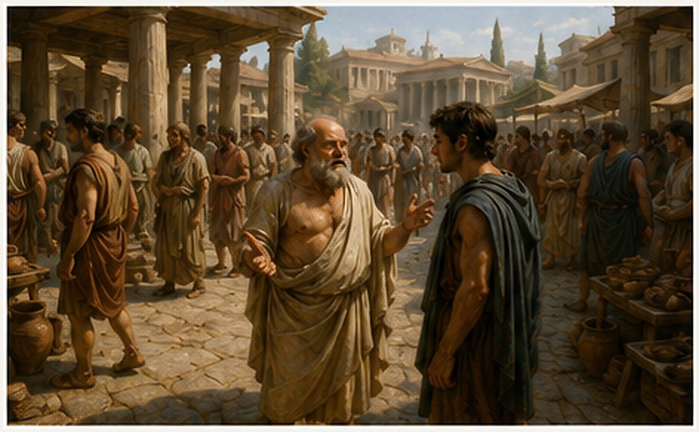
关于他，有一件事，后来的两千年里，人们提起来总带着一丝惊奇：他一生没有写过一个字。
没有著作，没有讲义，没有一句留在羊皮纸上的教条。他不开学堂，不收学费，不建体系。他做的全部事情，就是在这个吵闹的集市上，拉住一个又一个人，把一个活的问题，在两个人之间，点燃。
那问题，只在他们一问一答的时候，活着。谈话一停，它就熄了。第二天，他再拉住另一个人，把它，重新点燃一次。
有一回，他拦住的是个卖陶罐的青年。青年刚同顾客吵完一架，气得满脸通红，嘴里反复说：我只是讨回公道。苏格拉底便问，什么叫公道？青年说，欠债还钱，拿了别人的东西就该还，这还不清楚吗？苏格拉底点点头，又问：若一个朋友清醒时，把一把剑寄放在你这里；后来他疯了，提着火把来讨剑，说要去杀人——你还不还？青年一下愣住，说那当然不能还。苏格拉底便笑：这么说，公道并不总是「把别人的东西还给他」。那么，究竟是什么，让有些归还成了公道，有些归还反倒成了罪过？
周围的人先是笑，后来渐渐不笑了。卖陶罐的青年低头看着自己沾满泥灰的手，像第一次发现，那个刚才还被他攥得死紧的词，原来有一道缝。苏格拉底没有趁机宣布答案。他只是陪他站在那道缝前，往里看了一会儿。
柱廊阴影里，那个宽肩膀的年轻人也在。他后来会记住这种奇怪的场面：问题并不藏在老头一个人的头脑里，也不藏在青年那句粗糙的回答里。它是在两个人的来回碰撞中，才一点点显出形状。少了那把剑，少了那场争吵，少了青年那一下迟疑，所谓「公道本身」便不会以同样的样子出现。真理像一张临时张起的网，系在此刻的两个人、此刻的事物和此刻的追问之间。网一撤，它便散了；可下一次，换一群人、换一件事，它又会以新的样子，重新张起来。
他不是在往别人脑子里，装进一件现成的东西。他是在别人心里，接生一件正在成形的东西——让它自己长出来，活一阵子，然后散掉，随时准备再一次，重新长出来。
真理，在这个矮胖丑陋的老头这里，不是一样可以拿在手里、锁进柜子、传给后人的东西。它是一件正在发生的事：在人与人之间、在一问一答的缝隙里，当场地、活生生地，发生。
这本书要讲的，是这件活的事，后来遇上了一个爱它爱得最深的年轻人；以及，这个年轻人为了不让它死去，做了一件事——一件把它永远地留住、却也永远地，改变了它的事。
助产士的儿子
要懂苏格拉底做的事，得先看他母亲做的事。
他母亲叫斐娜瑞特，是雅典的一名助产士——接生婆。父亲是个石匠，一辈子跟石头打交道，把没有形状的石块，凿出形状来。苏格拉底年轻时也学过石匠的手艺。这两样家传，一样接生，一样凿石，后来都以一种奇怪的方式，长进了他做的那件事里。
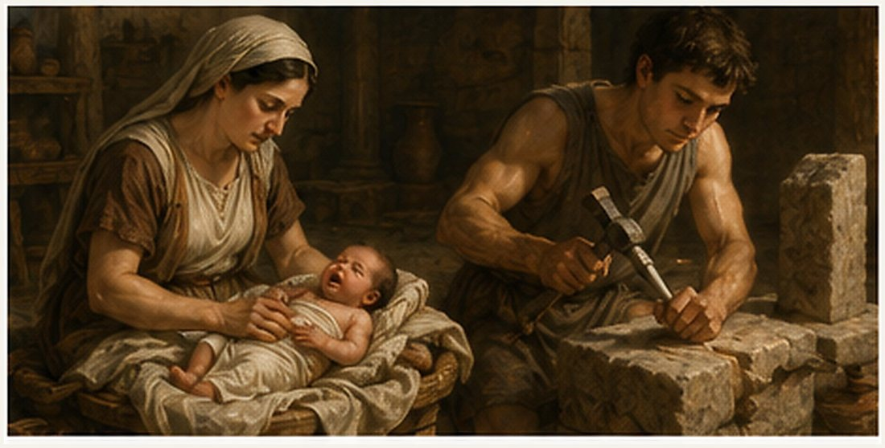
石匠这一行，也藏着一层深意。一块粗石，在外行眼里，只是块石头；可在好石匠手里，他仿佛能看见，那形状，本就「在」石头里头，只等他把多余的部分，一凿一凿地，去掉，让它显出来。这，是一种极诱人的想法——好像一切美好的形状，早已现成地，藏在那里，人只消把它「找出来」。日后，苏格拉底那位宽肩膀的学生，正是被这个想法，深深地迷住了。可苏格拉底自己，走的却是他母亲那条路，不是他父亲这条。他做的，不是「把一个早已在那里的形状，凿出来」；他做的，是「帮一个正在成形、此前根本不存在的东西，生出来」。接生婆手里那个婴儿，不是本来就现成地躺在某处、等着被找到的——它，是此时此地，头一回，来到这世上的。这一点微妙的分别——是把现成的东西找出来，还是把新的东西生出来——当时无人在意；可它，正是日后那座殿堂，全部的命门所在。
他把自己做的事，叫作助产术。
他说：我母亲接生的是身体里的孩子，我接生的，是灵魂里的孩子。他说得极其认真：我自己，其实什么也不懂，什么也生不出来——就像接生婆，往往自己已经过了生育的年纪，不再自己生孩子了，可正因为如此，她才最会替别人接生。神派给我的差事，是替别人接生，却禁止我自己生育。
所以他从不说「我告诉你什么是勇敢」。他做的是相反的事：他相信，那个人心里，其实已经怀着一个关于勇敢的念头，只是它还蜷缩着、模糊着、没有成形；而他要做的，是用一个又一个问题，像接生婆的手，把那个念头，一点一点地，从对方心里，接出来——让对方自己看清，自己心里到底揣着什么，那揣着的东西，究竟站不站得住。
这就是为什么，他从不写书。你没法把接生，写成一本书递给别人。接生是一件当场发生的事，是一双手，在一个正在用力的身体旁边，此刻地、活生生地，帮忙。它必须发生在两个活人之间。写下来的，只是一具接生过后的、空的襁褓。
他还有一句名言，两千年里被人反复引用，却也反复被人听岔：我只知道一件事，就是我什么都不知道。
苏格拉底还常说，自己心里有一个「神灵之声」。它很少告诉他应该做什么，只在某些时刻，忽然阻止他：不要走这条路，不要说这句话，不要在此刻越过那条线。
这声音并不替他提供答案。恰恰相反，它像一道内部的刹车，让他在行动之前，停一下。别人以为确定就是力量，他却把力量，放在那个肯停下来的瞬间里。一个人若从不被自己打断，便很容易把一时的冲动，当成神意；把欲望的声音，当成真理。
他在战场上听过它，在政治命令前听过它，在法庭上也听过它。它没有保证他安全，更没有告诉他怎样赢。它只维护一种更深的一致：不要因为害怕、贪图或众人的压力，去做那个连你自己也不能承认是对的事。
这和助产术其实是一回事。助产士不能命令孩子出生，却能察觉什么时候不该硬拉，什么时候必须等待。苏格拉底的「神灵」，不是从天上塞进他心里的教条，而像他一生在互动中磨出来的一种敏感——对哪里有虚假，哪里将伤害灵魂，哪里需要先停下来，再问一句。
后来，控告他的人把这声音说成「私造新神」。他们需要把一种内在审察，翻译成一种可定罪的宗教偏差。可苏格拉底真正危险的地方，恰恰不是他信了一个新神，而是他教人：在城邦、传统和多数之外，一个人还应当保留一处，不肯立刻服从的内在空间。
那处空间很小。小到只是行动前的一次迟疑。可一座靠未经审察的服从维持的城邦，最怕的，往往正是这一下迟疑。
人们常把这句话，当成一句谦虚的客套，或者一句故作高深的俏皮话。可在他这里，这句话是死死当真的，而且是他全部力量的来源。
事情要从德尔斐的神谕说起。他有个叫凯勒丰的朋友，跑去德尔斐的阿波罗神庙，问了个鲁莽的问题：世上有没有人比苏格拉底更聪明？女祭司答：没有。
苏格拉底听说了，大惑不解。他心里清楚得很，自己并不聪明，什么大道理都讲不出来。可神又不会说谎。于是他决定，去检验这句神谕——他要找到一个比自己更聪明的人，好当面反驳阿波罗。
他去找那些以聪明著称的人：政客、诗人、工匠。他一个一个地问下去，结果每一次都是同一幕：那个人自以为懂得许多大事——什么是正义，什么是虔敬，什么是美好的生活——可他只要一问下去，那个人就露了底：他其实并不真懂，他只是以为自己懂。而更糟的是，那人还浑然不觉，还理直气壮地，守着一堆自己根本没想清楚的东西，当作真理。
问了一圈，苏格拉底终于明白了神谕的意思。他后来说：我和他们的差别，小得可怜，却又要命——他们不懂，还自以为懂；我不懂，而且我知道我不懂。就为了多知道这一件事——知道自己的无知——神才说，没有人比我更聪明。
这不是谦虚。这是一种极其凶猛的清醒。因为「知道自己不知道」，恰恰是唯一能让追问开始的地方。一个自以为已经握住答案的人，是不会再问的——他心里的门，早关上了。只有一个肯承认「我其实不知道」的人，心里那扇门才重新打开，那件活的事，才有缝可以钻进来，重新发生一次。
所以苏格拉底做的，从来不是给雅典人送去答案。他做的，是把雅典人自以为握着的假答案，一个一个地敲碎，好让他们心里那扇关死了的门，重新打开——好让接生，重新有可能。
他先把人问到「我不知道」，然后，才在这片刚刚腾空的地方，帮他，重新生一个出来。
我们不知道，少年时代的苏格拉底，是否真的一边听着母亲在产房里忙碌，一边在父亲的石坊里搬运碎石。可我们可以想象，那两种声音，怎样同时住进了他身体里：一边，是凿子落在石头上的、清脆而坚定的敲击；另一边，是门后压低的呻吟、急促的呼吸、接生婆一遍遍说的「再用一点力」。
父亲面对石头，知道该去掉什么。多余的棱角一块块落下，里面那尊像，仿佛早就存在，只等一双有经验的手，把它释放出来。母亲面对的却不是一块沉默的石头。她必须听，必须等，必须随着那个正在生产的身体改变自己的动作。太早用力，会伤人；太晚伸手，也会误事。她不能预先决定孩子以怎样的姿势来到世上，只能在每一次呼吸、每一次收缩里，和产妇一起，把一条此前从未走过的路，走出来。
苏格拉底后来把自己的哲学，认给了母亲，而不是父亲。这不是偶然。他从母亲那里继承的，不是一套答案，是一种姿态：不替别人生产，不把自己的形状硬凿到别人身上；只守在旁边，听着、问着，在最要紧的时候，给那正在成形的东西，一点恰到好处的帮助。
德尔斐神谕之后，他大概也曾一个人走过雅典的夜路。白日里那些政客、诗人和工匠的回答，还在耳边乱响。他原想证明神谕错了，最后却发现，神谕把一件更难的差事，推到了他面前：从今以后，他得把人们心里那层「我懂」的硬壳，一块块敲开。不是为了羞辱他们，而是为了让里面尚未出生的东西，有机会透一口气。知道自己的无知，并不是终点。它是产房的门，刚刚打开。
一个烧掉了剧本的少年
在围着苏格拉底的那一圈人里，有一个年轻人，和别人不太一样。
别人是被苏格拉底问倒了，红着脸、悻悻地走开；这个年轻人，是被问倒之后，站住了，然后，再也没有走。
他出身极其高贵。他的家族，是雅典最古老、最显赫的门第之一：母亲那一支，能一直数到立法者梭伦；父亲那一支，据说能追到远古的王。他从小锦衣玉食，受最好的教育，体格健壮，肩膀宽得出奇——因了这副宽肩膀，人们给他起了个绰号，叫「柏拉图」，意思是「宽阔的」。他本名叫阿里斯托克勒斯，可这个本名，后来几乎没人记得了；人人记住的，是那个绰号。
照他的出身，他这一生本该是铺好的：先做几年诗人，再进入政坛，凭着家世与才华，做雅典的栋梁。他确实动过笔，写过抒情诗，写过悲剧，据说还准备拿去参加戏剧竞赛。
然后，他遇见了苏格拉底。
传说，在见过苏格拉底、听过他谈话之后，这个年轻人回到家，把自己写好的悲剧稿子，一把火，全烧了。
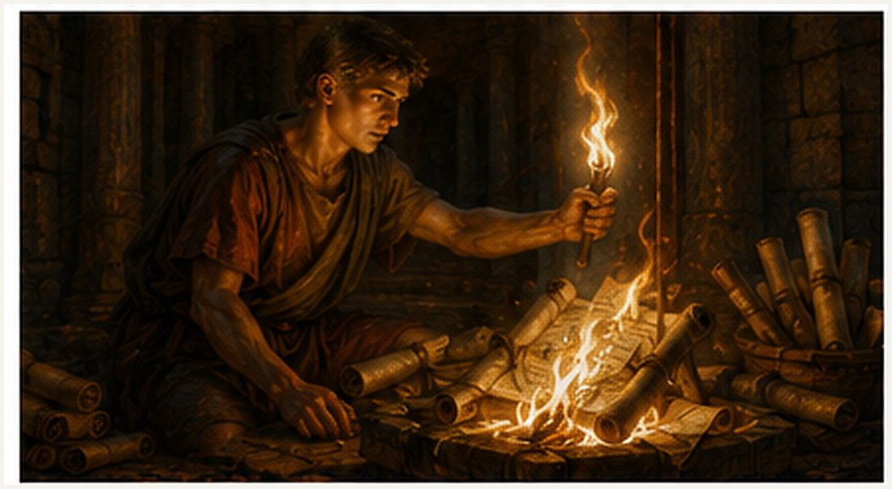
那火，据说烧了很久。一卷卷苦心经营的辞章，他曾指望着，拿它们去剧场竞技、去博满城的喝彩——此刻，在火里，蜷曲、发黑、化成灰烬。他站在火边，一言不发。他烧掉的，是一个已经写了一半的自己：那个本该做诗人、做政治家、做雅典栋梁的阿里斯托克勒斯。他忽然懂得了，诗，再美，也只是把人心里的情绪，编织成好听的句子；它绕着那个最要紧的东西打转，却从不敢，直直地，逼上去问它一句「你到底是什么」。而那个丑陋的老头，什么句子也不编，却敢，赤手空拳地，朝那个东西，走过去。他要的，不再是把美，唱出来；他要的，是把美本身，问出来。
烧掉的，不只是几卷剧本。烧掉的，是他原本那条铺好的路。他忽然明白，他一直想用诗去够的那个东西——那个关于人、关于命运、关于什么是好的生活的、最要紧的东西——诗够不着；而这个又矮又丑、光着脚的老头，正用一种他从未见过的方式，直直地，朝那个东西走过去。
他被击中的，恰恰是那件「活的事」。他看见，真理在这个老头这里，不是写在纸上的漂亮句子，不是讲坛上的雄辩，而是一件在两个人之间、当场发生的事情——像火花，在一问一答的两块燧石之间，噼啪地迸出来。他从没见过这样的东西。他这一生见过太多漂亮的答案，此刻第一次见到，一个人，如此不要命地，只问问题。
于是他留了下来。他成了那一圈人里，听得最专注、想得最深的一个。他看着老师拉住一个又一个雅典人，把他们自以为懂的东西，一层层问碎；他看着那些人「我不知道」的窘迫，也看着极少数几个人，在被问碎之后，眼里忽然亮起来的、像是有什么东西刚刚被接生出来的光。
年轻的柏拉图并不是一个只会坐着听的人。他受过严格的体操训练，肩背宽阔，在摔跤场上懂得怎样站稳、怎样借力、怎样在对手改变重心时，立刻改变自己的动作。也许正因如此，他比别人更早看见，苏格拉底的问答也像一场摔跤。
对方先抛出一个定义，苏格拉底不正面撞上去。他侧身，追问一个例外；对方换力，他便换一个角度；直到那个原本以为牢不可破的答案，自己失去平衡。可老师的目的不是把人摔倒在地，而是让他在倒下时，第一次知道自己脚下哪里是空的。
有一次，柏拉图也许忍不住问：若你从不给答案，谈话岂不是永远停在失败？苏格拉底反问：摔跤时，一个人先学会什么——赢，还是不让自己站在一个一碰就倒的位置？
年轻人说，先学站稳。
苏格拉底笑：思想也是。许多人急着赢，是因为从没检查自己站在哪里。先让他倒一次，他才可能重新站。
这句话很合柏拉图的心性。他不是软弱的、只爱怀疑的学生。他渴望训练，渴望让灵魂像身体一样，经过长期操练，获得秩序与力量。日后《理想国》里那些关于教育、体操、音乐和数学的漫长安排，都不是凭空来的。它们有一个最初的身体经验：真正可靠的形状，不是被告知的，是在一次次失衡与重新站立中，练出来的。
可训练也有两种。一种让人更能回应变化，一种把人塑成预定的模子。苏格拉底属于前者；柏拉图后来建造的城邦，却越来越靠近后者。那个分岔，当时还藏在同一个「训练」里，没有显出来。
他把这一切，都记在了心里。日后，他将成为整个人类历史上，最伟大的一个学生——伟大到，我们今天所知道的苏格拉底，几乎全部，是透过这个学生的笔，才被我们看见的。那个从不写字的人，最终被一个用一生去写他的人，留在了世上。
可也正是在这里，埋下了这本书要讲的、那件最微妙、也最要命的事。
因为这个学生，爱老师爱得太深，看老师看得太重。他舍不得让老师做的那件活的事，像火花一样，噼啪一响，就熄灭。他想留住它。他想让它，永远。
而一件「活的事」，一旦被人想要「永远」地留住，麻烦，就开始了。
火花之所以是火花，正因为它转瞬即灭；你若一定要把它凝固住、让它永远地亮着——那你留住的，就不再是火花了。你留住的，是一颗冰冷的、再也不会噼啪作响的、火花的标本。
这个道理，这个年轻人当时还不懂。他只知道，他爱这团火，他不想让它熄。他日后为了不让它熄，会做出一件惊天动地的事——他会为这团火，盖一座永远也烧不尽的、不死的房子。
那座房子的名字，叫理念。
那一夜，火灭得很慢。最后一卷剧本塌下去时，火星从灰里跳了一下，像一只不肯立刻死掉的眼睛。年轻人没有马上离开。他蹲下身，用一根木棍拨开灰烬，认出半行尚未烧尽的诗句。那是他写给某个悲剧英雄的台词，大意是：人只有被命运击碎，才知道自己是谁。
他盯着那半行字，忽然觉得讽刺。过去，他让虚构的人在舞台上遭受命运；现在，轮到他自己站在火边，被一句真实的问题击中。他不是不再爱诗了。他只是第一次怀疑：若诗不能把人逼到「我究竟为什么这样活」的地方，那么再华美的句子，也可能只是一层更漂亮的遮蔽。
我们可以想象，第二天他又去找苏格拉底。老头看见他眼下发青，问：昨晚没睡？年轻人说，我把剧本都烧了。苏格拉底没有露出赞许，反倒皱眉：为什么烧？因为你听了我的话？若只是因为我，你烧得太早了。一个人从别人那里借来的决心，和从别人那里借来的答案一样，都站不久。
年轻人怔住。苏格拉底又问：你烧掉的是诗，还是你想借诗得到的喝彩？你要离开的，是写作，还是那条不经审察就替你铺好的路？
火已经灭了，可追问才刚刚开始。年轻人后来仍会写，而且会写得比任何诗人都更像诗人。只是从那一天起，他不再肯让句子只负责美。他要让句子，承担追问；让舞台上的人物，不再只是替作者说话，而是在彼此碰撞中，把一个作者自己也未必握得住的问题，当场逼出来。那把火没有杀死作家。它只是把作家的路，烧得拐了一个弯。
而这本书，讲的就是这座房子，是怎样，从一个学生对老师的爱里，一砖一瓦，盖起来的。
「美本身」是什么
要看清那座房子的地基，得先看清老师亲手挖下的、第一铲土。
苏格拉底问问题，问法很特别。他从不满足于例子。
比如，他问一个自诩懂美的人：什么是美？那人答：一位漂亮的姑娘，就是美。苏格拉底摇头：我没问你什么东西是美的，我问的是，美本身是什么。你说漂亮姑娘是美，可一匹好马也美，一把好竖琴也美，一只精致的陶罐也美——姑娘、马、竖琴、陶罐，是四样完全不同的东西，凭什么它们都能叫「美」？一定有一个共同的东西，一个「美本身」，是它，让这四样东西，全都沾上了美。我问的，是那个东西。
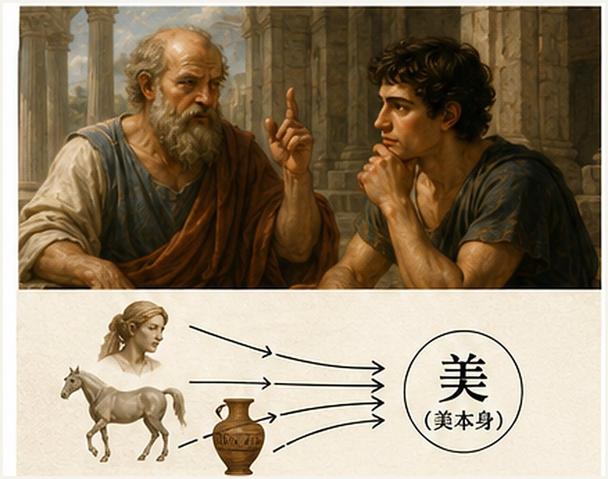
那人又答：那，黄金是美——凡是镶了黄金的，都变美了。苏格拉底说：可雅典最好的雕刻家，给雅典娜的神像，用的是象牙和黄金，眼睛却用了石头，谁也没觉得那石头眼睛丑。可见让东西变美的，不是黄金。
那人再答：那，我明白了，美就是恰当、就是合适。苏格拉底又追：一把木勺去搅汤，比金勺还合适、还好用，难道木勺就比金勺美？
一层一层地问下去，那人终于精疲力竭，承认：我说不清「美本身」是什么了。
旁边听的人也不再轻松。起初，他们把这场问答当热闹，看一个自诩懂美的人怎样被老头逼到墙角。可当「姑娘」「马」「竖琴」「陶罐」一个个被摆到面前，众人才发现，自己也在暗中修改答案。每一次例子出现，心里那个「美」的范围便伸缩一次。
有人原先只想到脸，后来把和谐的声音也算进去；有人坚持美必须让人愉快，却又想起悲剧中那些令人痛苦却无法移开目光的场面。没有谁单独掌握那个共同轮廓，可众人的差异，反而把轮廓一点点磨亮。
这就是概念诞生时最奇怪的地方：它既不等于任何一个例子，也不能离开所有例子。它像一条在比较中出现的路，只有当不同的东西被放到一起，互相照见边界，路才显出来。
苏格拉底没有把这条路占为己有。他甚至不肯说自己已经走到尽头。他只负责让人看见，原先那句「我当然知道美是什么」，其实站在一片尚未勘察的土地上。
柏拉图后来把路的方向，变成了远方的一座城。他的伟大，是看见真有共同；他的危险，是把共同从比较的现场，搬走了。
这是苏格拉底做的事里，最要害的一手。他不停地把人从「美的东西」，往「美本身」上逼。他坚信——或者说，他执意地追问着——在千千万万件「美的东西」背后，有一个「美本身」；在无数件「正义的行为」背后，有一个「正义本身」；在种种「虔敬的举动」背后，有一个「虔敬本身」。他要的，从来不是一串例子，是那个让所有例子都成其为例子的、共同的、一的东西。
这一手，是人类思想史上一次真正的大事。在苏格拉底之前，人们只会指着一个个具体的东西说「这个美」「那个正义」；是他，第一个如此固执地，去追问那个抽象的、普遍的「本身」。可以说，「概念」这个东西，那个从一堆杂多里被抽出来的、共同的、可以反复指认的「一」，正是在他这样一遍遍的追问里，第一次，在人的心里，被清清楚楚地照亮了。
这是一件了不起的功绩，怎么估量都不为过。人若不能，从千千万万件美的东西里，拎出一个共同的「美」来，人就没法思考，没法讲道理，没法把经验，攒成知识——你只能，一件一件地，指着说「这个」「那个」，却永远说不出，它们「共同」是什么。是苏格拉底，用他那把追问的刀，第一次，如此清晰地，把这个「共同的一」，从杂多里，剖了出来。西方此后所有的科学、逻辑、哲学，都建在这一手之上：先有「概念」，才有一切。这一点，柏拉图看得没错——那个「本身」，是真实的，是要紧的，是人类心智一次真正的攀升。他和老师的分歧，从来不在「有没有本身」；只在——那个本身，究竟是一件当场被追问出来的活事，还是一个高悬别处的、永恒的死物。
但是——请极其小心地，看清这里的分寸。
在苏格拉底手里，「美本身」始终是一个问题，不是一个他已经找到、可以据为己有的东西。他一辈子在问「美本身是什么」，却从没有哪一天，站起来宣布：我找到了，美本身在某个地方，它长这个样子。恰恰相反，几乎每一场这样的追问，最后都停在「我们还是不知道」上。他把「美本身」当作一个永远追问下去的方向，一件永远在两个人之间、当场被重新逼问出来的活事——而绝不是一座他已经登顶、可以插旗的高峰。
那个「一」，在他这里，是当场发生的：在具体的对话里，从一个个具体的例子的差异中——姑娘不同于马，马不同于竖琴——被一次次地逼着、拧着，才隐隐显出那个共同的轮廓来。它不是一个躺在别处、等人去发现的现成之物；它是在这场追问的此时此地，才一点一点地、显露出来的。谈话一停，那轮廓又模糊了，等着下一次，重新被逼问出来。
可是，在那一圈听众里，那个宽肩膀的年轻人，越听，心里越是被一个念头攫住，攫得越来越紧。
他想：老师一遍遍地指着那个「美本身」，我们分明都感觉到它在那里——可为什么，我们在任何一个具体的美的东西里，都找不到它？姑娘会老，马会死，竖琴会朽，陶罐会碎，可我们心里那个「美本身」，却好像不老、不死、不朽、不碎。那么，这个不老不死的「美本身」，它到底，在哪里？
这个问题，苏格拉底把它当作一个永远追问的方向，悬在那里，不去坐实。
而这个年轻人，日后要给它一个答案。一个石破天惊、也影响了此后整个西方两千四百年的答案。
他要说：「美本身」在一个地方。它在一个我们的肉眼看不见、却比这个看得见的世界更真实的地方。在那里，「美本身」「正义本身」「善本身」，永恒地、不动地、完美地，存在着。我们这个世界里所有美的东西，都不过是那个「美本身」投下的、模糊的影子。
他要给这个地方，起一个名字。
他要叫它，理念的世界。
老师只是挖下了第一铲土——他执拗地追问那个「本身」。而这个学生，要在这第一铲土挖出的坑上，盖起一整座通天的、不死的殿堂。
老师追问的，是一个动词：不停地问「什么是美本身」。 学生给出的，是一个名词：有一个「美本身」，永恒地待在那个叫「理念界」的地方。
这一字之差——把一个永远在发生的追问，坐实成一个永恒不动的东西——就是这座殿堂全部的地基，也是它全部的，问题。
那天的谈话散去之后，柏拉图没有立刻离开。他走到卖花人的摊前，拿起一枝刚剪下来的银莲花。花瓣薄得几乎透光，边缘已经被正午的热气卷起一点。卖花人说，今早它还开得更好，再过半天，就不值钱了。
柏拉图忽然被这句话刺了一下。方才所有人都承认，这朵花美；可它的美正在眼前衰退。若美只在这朵花上，那么花一谢，美也就跟着死了。可他心里那个被追问照亮过的「美」，并没有随花瓣卷曲而减弱。恰恰相反，越是看见具体的美会消逝，他越觉得，那个不随消逝而消逝的「美本身」，应当另有归宿。
这一步，何等自然。自然到几乎没有人会在这里停下来，再问一句：也许，不是「美本身」躲在另一个世界里，而是这朵花、这一双看花的眼睛、这一刻关于凋谢的预感，共同把「美」逼了出来？也许，花之所以比石头更让他心动，正因为它会谢；若把凋谢、时间和他的心全拿走，只留下一个纯粹不变的「美」，那东西还会不会让任何人，真正地，心动？
苏格拉底没有替他走完这一步。老师只会再问：你确定吗？而学生的天性，是不能忍受问题永远悬着。他需要一个地方，需要一根柱子，需要把那一闪而过的轮廓，安放成不会再散的东西。
于是，一枝正在凋谢的花，和一个不肯让老师死去的年轻人，在同一个午后，悄悄地，把理念界，又往前，推了一步。
在王者柱廊前
有一天清晨，苏格拉底出现在了一个他平时不常去的地方：王者执政官的柱廊前——那是雅典受理宗教罪案的衙门。
一个叫欧绪弗洛的人，认出了他，惊讶地迎上来：苏格拉底，什么风把你吹到这儿来了？你不会也惹上官司了吧？苏格拉底苦笑，说：有个叫美勒托的年轻人，告了我，罪名是「不敬神」，说我败坏青年、还私造新神。欧绪弗洛拍胸脯说：荒唐！你放心，这官司你必赢。
苏格拉底反问：那你呢，你到这儿来做什么？欧绪弗洛挺起胸膛，一脸凛然：我来告我父亲。谋杀罪。
苏格拉底大吃一惊。告自己的父亲？欧绪弗洛解释：我家一个雇工，喝醉了打死了一个奴隶，我父亲把他捆起来扔进沟里，等着请示官府怎么处置，结果那雇工没等到官府的话，先冻饿死在了沟里。所以，我父亲害死了他。全家人都骂我不孝，说儿子告父亲，是大不敬。可我不管——我懂得什么是虔敬，什么是不虔敬，比他们谁都清楚。放着杀了人的父亲不告，那才是真正的不虔敬。
苏格拉底一听，眼睛亮了。他立刻抓住了这个机会。他说：太好了！我正惹着「不敬神」的官司，愁得不知虔敬究竟是什么。你既然把虔敬懂得这样透彻，敢告自己的亲爹，那你一定能告诉我——虔敬本身，到底是什么？你教会了我，我到了法庭上，就有底气了。
于是那场著名的追问，又开始了。
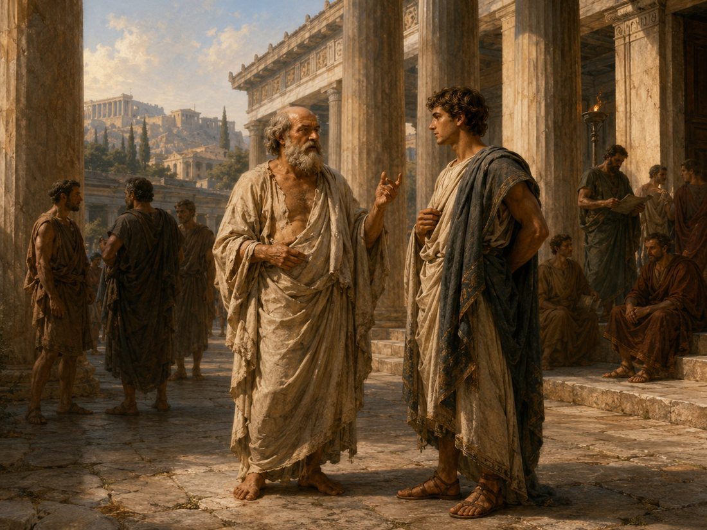
柱廊前的晨光原本安静，可一旦苏格拉底开口，空气里便像有细小的锋刃游走起来。欧绪弗洛本是来定罪的，步子迈得又直又稳；可几轮问答之后，那份笃定竟先在他自己心里起了裂纹。宽肩膀的年轻人站在一旁，看见的不是一场争辩，而是一件更奇异的事：一个词，竟能在众目睽睽之下，被问到失去旧的壳。
欧绪弗洛答：虔敬嘛，就是像我现在做的这样——去起诉那个犯了罪的人，哪怕他是你父亲。苏格拉底摇头：我问的不是虔敬的一个例子，我问的是虔敬本身——那个让你这件事、和其他一切虔敬的事，全都成其为「虔敬」的、共同的东西。你给我一个例子，我拿它当不了尺子。
欧绪弗洛想了想，改口：那，虔敬就是诸神所喜爱的。苏格拉底追问：可诸神彼此常常吵架呀——荷马里的众神，为了这个那个，斗得不可开交。同一件事，这个神喜欢，那个神厌恶。那么同一件事，岂不是既虔敬、又不虔敬了？
欧绪弗洛只好再改：那，虔敬是「所有的神都喜爱的」。苏格拉底这一刀，砍得最深。他问：请想清楚了——是因为一件事本身虔敬，所以诸神才喜爱它；还是因为诸神喜爱它，它才变得虔敬？
欧绪弗洛被绕住了，凭直觉答：当然是因为它虔敬，诸神才喜爱。苏格拉底说：那就对了。可这么一来，「诸神喜爱」就只是虔敬的一个结果、一个附带的记号，而不是虔敬本身了——虔敬本身，一定是另有一个东西，是它，让这件事先成了虔敬的，诸神才随后喜爱它。所以你还是没告诉我：那个「先」让事情成为虔敬的东西，究竟是什么？
一层一层地绕下去，欧绪弗洛额头见了汗。他原本是何等笃定啊——笃定到敢把亲爹送上法庭。可现在，他嘴里那个用来给父亲定罪的「虔敬」，被苏格拉底问得四分五裂，怎么也拼不回一个整来。最后，他抬头看看天色，慌忙说：哎呀，苏格拉底，我想起来还有急事，改日再聊！——转身，几乎是逃走了。
苏格拉底望着他的背影，没有得意，只有一点惆怅。他在这个人心里，本想接生出一个真正想清楚了的「虔敬」来；可这个人，一被问到「我其实不知道」，就吓跑了。门刚打开一条缝，又「砰」地关上了。
而站在不远处、把这一切看在眼里的宽肩膀年轻人，心里却起了别样的波澜。他想：老师又一次，把那个「虔敬本身」逼到了眼前——所有人都感觉到它在那儿，欧绪弗洛也感觉到，正因感觉到，他才敢告父亲。可它究竟在哪儿？为什么谈话一散，它又不见了？为什么它明明那样真实，却在这个会跑会散的世界里，无处安放？
这个念头，在他心里，又深了一层。他越来越觉得：那个「本身」，那样真、那样确凿，绝不该只是一场谈话里稍纵即逝的火光。它一定，属于另一个更牢靠的地方。
欧绪弗洛的脚步很快消失在柱廊尽头。苏格拉底望了一会儿，忽然叹气：真可惜，我本以为今天能学到虔敬是什么。现在，他带着答案走了，只把我的无知留下。
旁边有人笑，以为老头又在说反话。柏拉图却没有笑。他知道，苏格拉底是真的惋惜。老师并不因把一个人问倒而满足。问倒，只是产痛；若对方在最疼的时候逃走，孩子便没有生下来。这场谈话留下的，不是胜负，是一个半途而废的生产。
他们沿着柱廊往前走。再过不久，苏格拉底自己也要在这里，面对「不敬神」的指控。柏拉图忍不住问：既然欧绪弗洛说不清虔敬，而告你的人大概也说不清，他们凭什么审判你？
苏格拉底停下脚，说：人并不一定要先知道正义是什么，才会做出一件自以为正义的事。麻烦恰恰在这里。许多最危险的事，不是由自知作恶的人做出来的，而是由确信自己正义、却从未审察过「正义」的人做出来的。
这句话后来会变成一把回旋的刀。几年之后，五百个雅典人将用一次投票，完成他们自以为正义的判决。柏拉图会永远记得这个清晨：在同一根柱廊下，一个人因为太确信自己懂虔敬，差点把父亲送进法庭；另一些人，也将因为太确信自己懂虔敬，把苏格拉底送去饮毒。
词一旦未经追问，就会变成刀柄。谁握住它，谁便以为自己有权，向别人落刀。
银盒子里的神
要真正认识苏格拉底这个人，光看他问问题还不够。得看看，在他那副丑陋滑稽的皮囊底下，究竟藏着什么。
关于这一点，最好的一段话，出自一个爱他爱到发狂、又恨他恨得咬牙的人之口——阿尔喀比亚德。那是雅典最耀眼、也最放荡的贵公子，年轻、俊美、有才、有野心，全城的宠儿。在一场酒会上，喝得醉醺醺的阿尔喀比亚德，当着众人，为苏格拉底作了一段惊世骇俗的赞词。
他说：你们都见过工匠铺子里卖的那种小雕像吧——外面雕成一个丑陋的、龇牙咧嘴的森林之神西勒诺斯的样子，可你把它从中间打开，里头，端端正正地，供着一尊金光闪闪的神像。苏格拉底，就是这样一个东西。
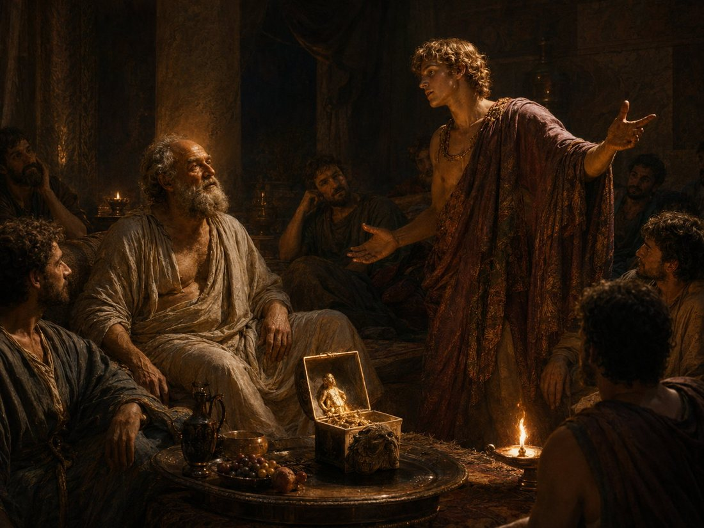
那一夜的酒气、笑声与火光，反倒把苏格拉底衬得更安静了。阿尔喀比亚德一边夸赞，一边几乎是带着疼痛地承认：这老头的厉害，不在嘴皮，不在仪态，而在一种让人无法逃开的内在重力。柏拉图后来记下这场酒会时，像是也替自己说了一句心里话——老师真正让人难忘的，从来不是外表，而是那种逼人向善、又逼人看见自身贫乏的力量。
他说：你们看他，塌鼻子，凸眼睛，像个山羊神，成天在市场上跟人插科打诨，说些鞋匠、铁匠、皮匠的粗话，翻来覆去，好像永远是那一套，无聊透顶。傻子听了，会笑他。可你若有幸，把他这个人打开，看进去——里头供着的，是你这辈子见过的、最神圣、最美的东西。那里头的道理，金子一样，神一样。
还有一回，在德里昂的败仗里，雅典的军队溃散了，人人丢盔弃甲，没命地奔逃，斯巴达的骑兵在后面追杀。乱军之中，别人跑得魂飞魄散，唯独苏格拉底，不慌不忙，稳稳地，一步一步地退。他昂着头，两眼从容地，左右扫视，敌人来了，就沉着应付，一副「谁敢近前就有他好看」的架势。追兵见了这样一个镇定自若的人，反倒不敢招惹，专挑那些抱头鼠窜的去追。就这样，他护着身边的人，从死地里，安然走了出来。阿尔喀比亚德说：在最乱、最险的时刻，你才看得出一个人心里，究竟有没有那尊神——旁人的勇敢，是一时的血气；他的镇定，是从骨头里长出来的。
阿尔喀比亚德还讲了两件事，为这尊「银盒子里的神」作证。
一件，是打仗。别看苏格拉底又矮又胖，上了战场，他比谁都能吃苦。波提狄亚围城，正逢严冬，天寒地冻，别人裹得像粽子还直哆嗦，他却只穿平日那件旧斗篷，光着脚在冰上走，若无其事。有一回，他站在原地，为一个问题出神，从一个清晨，一直站到第二天清晨——整整一天一夜，一动不动，直到太阳再次升起，他才如梦初醒，向太阳祷告一句，走开了。更要紧的是：在那场恶战里，是苏格拉底，救了受伤倒地的阿尔喀比亚德一命，还替他扛回了盔甲。论功行赏时，他却把功劳，全让给了这个年轻人。
另一件，是关于爱。年轻俊美的阿尔喀比亚德，习惯了被所有人追捧，偏偏迷上了这个丑老头——不是迷他的皮囊，是迷他里头那尊神。他使出浑身解数去引诱苏格拉底，想用自己的美貌，换取老师全部的智慧。可苏格拉底，那样一个据说没什么能打动的人，面对全雅典最诱人的肉体，竟纹丝不动。他在乎的，从来不是这个年轻人的身体，是他的灵魂——他想接生的，是阿尔喀比亚德心里那个更好的人，而不是占有他的皮相。阿尔喀比亚德又羞又恼，说：我在这个人面前，第一次尝到了羞愧的滋味——只有他，能让我觉得，我这样活着，是不对的。可我一离开他，又忍不住，被众人的追捧，重新卷走。
这就是苏格拉底：一个把自己活成了一件活物的人。他没有一套写下来的学说，他这个人本身，就是他的学说。他的勇敢，不是一条关于勇敢的定义，是他站在冰上、站在战阵里、站在法庭上的那副样子；他的节制，不是一句格言，是他面对美酒与美色时，那份纹丝不动。真理在他这里，从不是纸上的字，是一个活人，用他整个的身体和灵魂，此时此地，活出来的样子。
也正因如此，他做的那件事，注定没法被装进一本书里，传给后人。一个活人的样子，怎么写得下来呢？你写下他的话，写不下他站在冰上的那一夜；你写下他的定义，写不下他眼睛里那点接生成功时的光。他一死，那尊「银盒子里的神」，就要跟着他，一起，永远地，从这个世界上，消失。
那个宽肩膀的年轻人，比谁都更早、更痛地，预感到了这一点。他日后拼了命想要留住的，正是这个——这个没法被留住的、活人的样子。
酒会散到天将亮时，阿尔喀比亚德已经醉得站不稳。他被人扶出门，还回头冲苏格拉底喊：你这个人，迟早会让我恨死你。苏格拉底问：因为我不爱你？阿尔喀比亚德笑了一声，笑里几乎带着哭腔：因为你偏偏，只爱那个我还没有成为的人。
这句话，大概比所有赞辞都更接近苏格拉底。他不占有别人已经有的美；他盯着的，是对方尚未生出来的可能。对阿尔喀比亚德来说，这种目光既是恩典，也是折磨。全雅典都夸他的脸、他的声音、他的出身，只有这个丑老头，像看不见那些东西似的，一次次问：你准备把自己的灵魂，活成什么样？
柏拉图坐在一旁，听见了两种截然不同的爱。一种爱说：你这样已经够美，我要拥有你。另一种爱说：你还没有成为你能成为的人，我不肯放过你。前一种爱让人沉醉，后一种爱让人羞愧。苏格拉底的爱，从来不是温柔地肯定一切；它是一双助产士的手，按住你最想遮住的地方，逼你用力。
可阿尔喀比亚德最终没有被接生成功。他一次次靠近老师，又一次次被权力、喝彩和欲望拉走。这个失败，也会刺痛柏拉图：若最好的老师、最活的追问，都不能保证一个灵魂真正变好，那么，怎样才能让「善」更牢靠？怎样才能建起一种制度，让人的灵魂不再只凭偶然的相遇，才有机会被唤醒？
学园、教育、哲人王——这些后来宏大的构想，也许都在这场酒会散尽后的清晨，已经有了极小的、尚无人看见的胚芽。
城邦病了
可是，就在这个年轻人围着老师、听得入神的那些年，他脚下的整座城邦，正在崩塌。
雅典，那个曾经最骄傲、最辉煌的城邦，正打着一场旷日持久、把它一点点拖垮的战争——和斯巴达之间的那场大战，一打，就是二十七年。
战争的第二年，一场可怕的瘟疫，席卷了挤满难民的雅典城。人像秋天的叶子一样成片地倒下，尸体堆在街上没人收，神庙里塞满了垂死的人。连雅典最伟大的领袖伯里克利，也死在了那场瘟疫里。更可怕的，是瘟疫带来的那种精神上的溃烂：当死亡随时降临、无从躲避，许多人便索性抛开了一切法度与廉耻——反正明天就可能死，何不今朝有酒今朝醉？敬神有什么用，作恶又有什么惩罚？一座城邦赖以维系的那些无形的东西——对神的敬畏、对律法的尊重、对好坏的分辨——在瘟疫里，松动了，烂掉了。
而苏格拉底，恰恰在这样一个法度崩坏、人心浮动的年月里，日复一日地站在市场上，问着他那些问题：什么是正义？什么是虔敬？什么是好的生活？
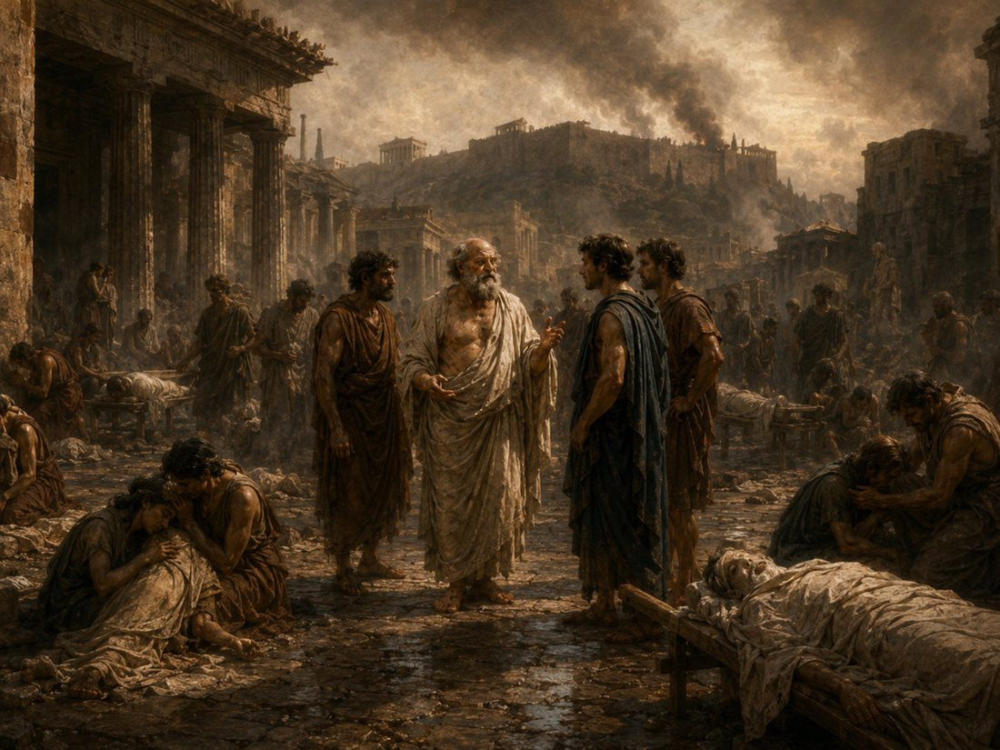
病与战把雅典街头掏空了，也把许多人心里那点残存的秩序感掏空了。尸体、哀哭、谣言与恐惧混在一处，人人都急着活下去，急着抓住一根哪怕并不可靠的绳子。偏偏苏格拉底还在问：活下去，究竟是为了什么？正因为四周如此败坏，他那些问题才显得更刺耳，也更像在废墟上，替人守住最后一盏没有熄灭的灯。
这在太平年月，或许只是个惹人厌的怪癖；可在这样一个人人自危、旧的信念纷纷垮塌的年月里，它就带上了一种危险的意味。因为他问的每一个问题，都在动摇某样东西。他问「什么是虔敬」，在敬神的人听来，就像在质疑神；他问「什么是正义」，在当权者听来，就像在质疑法律；他一遍遍地证明，那些自以为懂的人其实什么都不懂——这在一个需要人们抱团、需要人们相信点什么才能撑下去的乱世里，是极不合时宜的。
战争打了二十七年，雅典终于，输了。城墙被拆毁，舰队被解散，帝国灰飞烟灭。那个曾经不可一世的城邦，一夜之间，跪了下来。
一座战败的、蒙羞的、心里憋着满腔怨气却又无处发泄的城邦，是很危险的。它需要找一个理由，来解释自己为什么会落到这般田地；它需要找一个人，来为这场灾难，顶罪。
许多年前，喜剧诗人阿里斯托芬已经把苏格拉底搬上过舞台。在那出喜剧里，一个瘦长古怪的「苏格拉底」吊在半空，研究云、雷和跳蚤腿，开一间能把歪理说成正理的思想作坊。观众笑得前仰后合。真正的苏格拉底据说就在剧场里，还站起来，让大家看看台上的面具像不像自己。
笑声当然不等于判决。可一个人的公共形象，往往不是在法庭当天才形成。多年里，雅典人早已习惯把他同诡辩家、自然哲学家、蛊惑青年的教师，混成一个模糊的影子。真正的他不收费，喜剧里的他却开店；真正的他声称无知，影子里的他却什么歪理都能教。
战争失败以后，旧日的笑话变了味。和平时，人们可以笑一个古怪的哲学家；灾难中，同一张面具却能被拿来解释罪责。阿尔喀比亚德和克里提亚斯的名字，使那句「败坏青年」听起来像有了证据。几十年的误解、笑声、政治仇恨和恐惧，在公元前三九九年的春天，终于汇到同一个法庭。
这也说明，一场审判从来不只发生在审判当天。它有漫长的环境：人们听过什么故事，记住什么笑话，把什么复杂的人压成一个容易识别的形象。等真正的人站到他们面前时，他们看见的，往往已经不是他，而是那道早已在集体想象中，被反复投射过的影子。
洞穴的墙，在柏拉图写出洞穴以前，就已经竖在雅典剧场里。只不过这一次，被影子杀死的，是那个一生都在劝人转头的人。
而那个宽肩膀的年轻人，正是在这样的年月里，一天天长大。他亲眼看着自己深爱的城邦，怎样从云端跌落尘埃；他也隐隐感到，那个他深爱的老师，正站在一个越来越危险的位置上——像一根立在风暴里的、太过显眼的柱子。
他后来说，他年轻时，本也满怀抱负，想投身政治，想为这座城邦做点什么。可他亲眼看到的这一切，一点一点，浇灭了他心里那团火。他开始觉得，这个由乌合之众你争我夺、动辄把最好的人踩在脚下的现实政坛，是一片泥沼；而真正干净、真正牢靠的东西，一定不在这片翻滚的泥沼里，而在别处——在某个比这个混乱、易变、堕落的现实世界，更高、更纯、更不会朽坏的地方。
这个念头——真正好的东西，不在这个乱糟糟的现实里，而在别处、在高处、在一个不朽的地方——正在他心里，越扎越深。
它日后会长成那座殿堂的又一根梁柱。
瘟疫最重的那些日子，市场有时会突然安静。不是因为人少了声音，而是因为声音已经疲惫得发不出来。抬尸的人从摊位旁经过，麻布下露出一只灰白的脚；卖油的人看一眼，又低头继续数钱。人看得太多，连惊惧也会磨钝。
有个年轻人死了弟弟，坐在神庙台阶上，骂神、骂城邦、骂所有还活着的人。苏格拉底在他旁边坐下，没有劝他敬神，也没有说死亡自有安排。他只问：你现在最恨的，是什么？年轻人说，我恨他死了。苏格拉底问：你恨的是死亡，还是你再也不能同他说话？年轻人沉默。苏格拉底又问：若你真爱他，你愿意因为他的死，把自己余下的日子也一并毁掉吗？
这些问题没有治好悲伤。它们只是让悲伤，从一团把人完全吞没的黑雾里，慢慢显出几条边。年轻人终于能说：我不是恨所有人，我只是不能接受，昨天还在的人，今天什么也不是了。
柏拉图若在旁边，大概会再次听见那个后来缠住他一生的问题：活的东西为什么这样容易消失？一个人的声音、勇气、爱，难道真能随着一口气断掉，便再无存处？
乱世把苏格拉底的追问，逼到了最赤裸的地方。太平时，人们嫌他的问题无用；瘟疫里，人们才发现，当习俗、权威、祭祀和明日的保证全都倒下，一个人最后还能靠什么，分辨自己该怎样活？问题不能替人挡住瘟疫，却能在一切都崩坏的时候，替灵魂留下一根不至于彻底折断的骨头。
三十个僭主
雅典战败之后，斯巴达人扶植了一个傀儡政权，把城邦的权力，交到了三十个人手里。历史上，管他们叫「三十僭主」。
对这个宽肩膀的年轻人来说，这三十个人里，有几个，是他的至亲。领头的那个，叫克里提亚斯，是他母亲那边的亲戚；还有一个叫卡尔米德斯，是他的舅父。他们都出身高贵，都曾在苏格拉底身边转悠过，听过他谈话。
这本该是这个年轻人一展抱负的机会——亲戚当权，正是他进入政坛的天赐良机。起初，他确也心存期待，以为这些人会把这座堕落的城邦，重新整顿到正道上来。
然而，掌了权的「三十僭主」，很快露出了狰狞的面目。他们大开杀戒，处死政敌，没收财产，制造恐怖。短短几个月里，被他们杀掉的雅典人，据说比战争最后十年里死于斯巴达之手的还要多。那个宽肩膀的年轻人满心的期待，迅速冷却，冻成了寒心。他日后写道：我很快就看明白了，这些人的所作所为，让从前那个被人诟病的旧制度，都显得像黄金一样了。
而在这场恐怖里，苏格拉底做了一件事，让所有人都记住了。
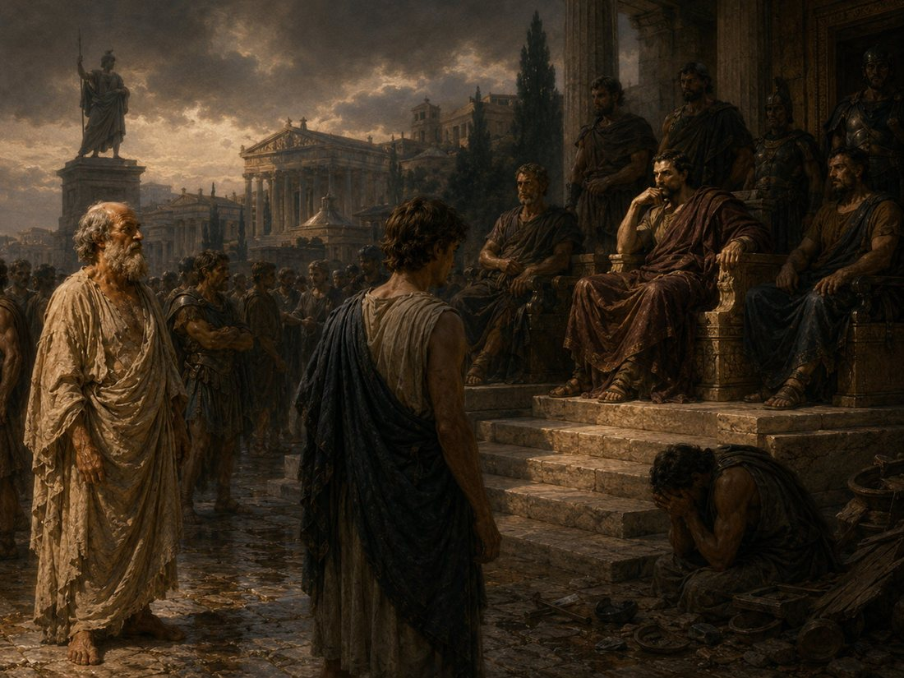
柏拉图后来回望这一段年月，心里最深的震动，大概并不是暴君究竟杀了多少人，而是他第一次如此清楚地看见：真正的高贵，和门第、血统、权位，原来并没有什么关系。高阶上的人，披着华服，也可能满手是血；光脚走路的老头，不过转个身回家，却把「不可为恶」这几个字，活生生站成了一堵墙。
「三十僭主」想拉更多的人下水，好让大家都沾上血、都脱不了干系。有一回，他们下令，包括苏格拉底在内的五个人，去萨拉米斯岛，把一个叫莱昂的无辜富人抓来处死——纯是为了霸占他的家产。另外四个人，遵命去了。唯独苏格拉底，径直回了家。
他不喊口号，不发檄文，不组织反抗。他只是，不去。他后来在法庭上平静地说：那个政权虽然凶横，却也吓不倒我，让我去做一件不义的事。我当时想，我宁可冒着被他们处死的危险，也绝不参与一桩罪行。若不是那个政权不久就垮了台，我大概早就为此送了命。
看清苏格拉底这一手，就摸到了他那件「活的事」，最硬的一面。他一辈子问「什么是正义」，问得好像永远问不出个定论；可到了要不要亲手去做一件不义之事的关头，他一步也不含糊。原来，那个在谈话里怎么也抓不牢的「正义本身」，并不是一句悬在空中的漂亮话——它就活在他此刻的、拒绝挪动的这双脚上。别人在纸上争论正义是什么，他在萨拉米斯的岔路口，用一转身，把「正义」当场地、活生生地，做了出来。
那个年轻人，把这一幕，深深刻进了心里。一边，是他掌了权、便大肆屠戮的高贵亲戚；另一边，是这个又矮又丑、光脚的老头，面对屠刀，只用一个安静的转身，守住了不肯逾越的那条线。哪一个，才是真正高贵的？哪一个，身上才有那个「正义本身」？
他心里那杆秤，彻底地，偏向了老师。他对现实政治的最后一点幻想，也被他的亲戚们，亲手掐灭了。他愈发确信：真正干净的东西，绝不在这翻云覆雨的权力场里；它在别处，在高处，在一个连僭主的屠刀，也够不着的地方。
「三十僭主」的暴政，只维持了短短八个月，就被推翻了。雅典，恢复了民主。
按说，故事到这里，本该松一口气了：暴君倒了，好人赢了。可谁也没有想到，恰恰是这个刚刚恢复的、本该更宽容的民主政权，即将做出一件——让那个宽肩膀的年轻人，恨了它一辈子的事。
它要杀掉苏格拉底。
在三十僭主掌权的某个晚上，柏拉图或许曾坐在自家宴席上，听克里提亚斯谈论「整顿城邦」。银杯里有酒，墙上挂着祖先的盾牌，席间说的却是哪些人该被流放，哪些人的财产可以没收，哪些名字应当从明日的名单上消失。
有人问柏拉图：你不是一直想从政吗？现在机会就在眼前。我们有权力，有出身，也有把雅典重新塑成好城邦的意志。你还在等什么？
他没有答。就在那几天，他听说苏格拉底拒绝去抓莱昂。没有演说，没有同盟，没有把自己装扮成英雄。只是到了岔路口，别人往萨拉米斯走，他转身回家。
那一个转身，把宴席上的所有高谈阔论，全照得发白。亲戚们说自己在「拯救城邦」，却要靠无辜者的血来完成；老师从不宣称掌握正义，却在必须选择的一刻，拒绝做不义的事。柏拉图第一次如此清楚地看见：词可以被权力穿成华服，行为却会在最后，把一个人真正是谁，赤裸裸地暴露出来。
夜深后，他走过家中陈列祖先像的长廊。那些石雕的面孔，一个个沉默而高贵。可「高贵」究竟在血统里，还是在那双拒绝向罪行迈步的脚里？从那以后，他再也无法仅凭门第，相信谁更配治理城邦。
可悲的是，暴政倒下之后，民主并没有因此变得有智慧。杀人的名单换成了投票的陶片，未经审察的确信，却仍旧活着。刀换了手，落下来的方向，最后，仍对准了同一个人。
申辩
公元前三九九年，苏格拉底七十岁。三个雅典人，把他告上了法庭。
领头具名的，是个叫美勒托的年轻诗人；背后真正使劲的，是个叫阿尼图斯的、有权有势的民主派政客。罪名有两条：一是「不敬城邦所敬的神，另立新神」——指的是他常说的那个心里的「神灵之声」；二是「败坏青年」。
这第二条，才是要命的。所谓「败坏青年」，人人心照不宣，指的是什么：他身边转悠过的那些年轻人里，出了阿尔喀比亚德——那个后来背叛雅典、投奔斯巴达的浪子；出了克里提亚斯——那个「三十僭主」的头子。城邦刚刚从战败和暴政里缓过一口气，满腔的怨与恨，正没处发泄。于是有人想起了这个老头：是他，成天在市场上蛊惑年轻人，质疑神明，质疑法律，质疑一切——难道，把雅典带到今天这步田地的祸根，不正是他这种人吗？
审判在五百人的大陪审团面前进行。按雅典的规矩，苏格拉底本可以做的，是许多被告都会做的那一套：痛哭流涕，苦苦哀求，把妻子儿女带上法庭，让他们当众啼哭，博陪审员一点恻隐之心。
他一样也没做。
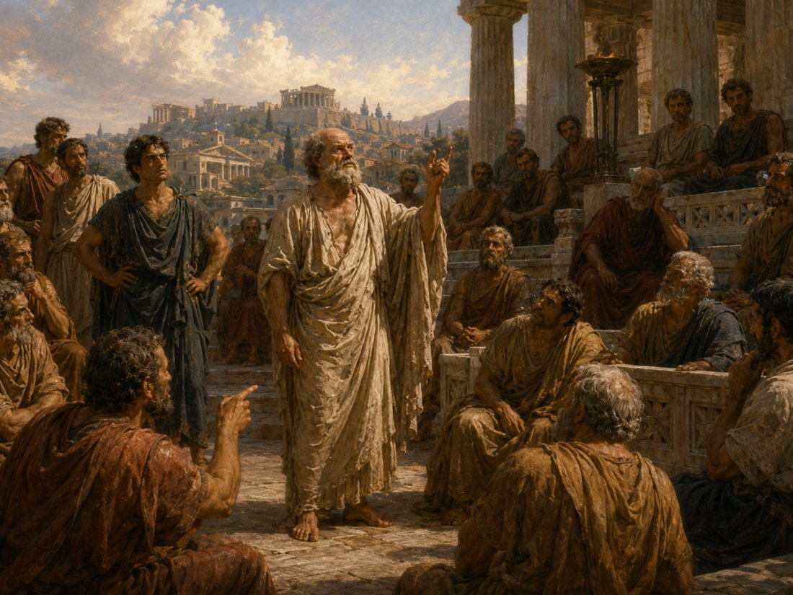
法庭上的空气并不只是敌意，它还混着惊愕。许多人原以为，这个七十岁的老人到了生死关头，总该学会和世界讲一点和气；可他偏不。他站在那里，不像被告，更像仍在市场上发问的那只牛虻，只是这一次，被拦下来的人，变成了整座雅典。柏拉图坐在人群里，听见的每一句话，都像在替老师刻下一道不可磨灭的轮廓。
他站在五百人面前，做了一场后来流传千古的申辩。他没有低头，反而近乎挑衅。他把那个牛虻的比喻，当众讲了出来：诸位，我是神赐给这座城邦的一只牛虻。雅典是一匹高贵而肥大的马，正因肥大而昏睡；神派我落在它身上，整天到处叮它、唤它、责备它，一刻不停。你们杀了我，是容易的——像被惊扰了瞌睡的人，一巴掌拍死一只虫子那样容易。可你们拍死我之后，除非神另派一只牛虻来，否则你们，就要在昏睡里，一直睡到底了。
他说：只要我还有一口气，我就绝不会停止爱智慧，绝不会停止追问。哪怕你们现在放了我，条件是从此闭嘴——我也会当面拒绝你们。因为我宁可听神的，不听你们的。
他说出了那句后来响彻两千年的话：一种未经审察的人生，是不值得过的。
他的意思是：一个人，若从不停下来，问一问自己——我信的这些，究竟站不站得住？我追的这些，究竟值不值得？我这样活着，究竟对不对？——那么，他就只是随波逐流地，活了一场，像牲口一样，被本能和习俗，推着走完一生。那样的日子，再长，再舒坦，也算不得真正「过」了一生。而审察，追问，把一切拿到光下反复掂量——哪怕它逼人难堪、令人不安、动摇一切——才是让一个人，真正成其为人的东西。这句话，是他一生那件事的、最凝练的一句注脚：他拦住每一个雅典人追问，不是为了赢，不是为了炫耀，是因为他真心相信，一个不肯审察自己的人生，是白过的。而此刻，他宁可用这条命去证明它，也不肯，为了活命，把它收回。
他甚至告诉陪审团：你们以为判我死刑，是在惩罚我；其实受损的，是你们自己。因为你们再也找不到第二只这样的牛虻了。你们不是在处置我，你们是在自己身上，割掉那唯一还能把你们唤醒的东西。
这不是一个求生的人该说的话。这是一个把自己那件「活的事」，看得比自己的命还要重的人，才说得出来的话。他心里清楚，他大可以低个头、服个软，保住这条命；可那样一来，他一辈子做的那件事——不肯停止追问、不肯向未经审察的东西低头——就当场破产了。他若为了活命而闭嘴，他就不再是苏格拉底了。他宁可让身体死，也不肯让那件活的事，先死在自己手里。
在那五百人的陪审团里，坐着他最看重的几个学生。那个宽肩膀的年轻人，就在其中。
他眼睁睁地看着，自己的老师，站在城邦面前，用最不肯妥协的姿态，把自己一步步，推向死亡。他大概在心里，无声地喊过千百遍：低个头吧，说句软话吧，活下来吧。可他也一定明白——正是那份绝不低头，才是老师之所以是老师的全部。一旦低头，那尊「银盒子里的神」，就碎了。
表决的结果，出来了。五百人里，多数，判了苏格拉底有罪。
陶片和票数被清点时，法庭里没有立刻响起欢呼。许多人只是松了一口气，像终于把一件令人不舒服的事，推到了结论。也有人低着头，不敢看被告席。多数并不是一张脸。它由许多不同的理由组成：有人真信他不敬神，有人恨他使自己难堪，有人记着战争中的叛徒，有人只是觉得，这个老头既然如此不肯服软，便该受一点教训。
柏拉图盯着那些人，第一次体会到「多数」的可怕，并不总在于每个人都怀着恶意。恰恰是许多不完全相同、甚至并不强烈的动机，加在一起，会产生一个谁也未必单独愿意承担的结果。每个人只投一票，最后却共同把一个人推向死亡。
散场后，门口有人争论。一个陪审员说，我本来只想吓吓他，没想到他还是那副样子。另一个人说，若今天放过他，城里还有什么规矩？有人认出柏拉图，劝他别再跟着这种人。
他没有回答。白日的阳光照在台阶上，和往常没有不同。卖食物的小贩已经在门外叫卖，仿佛城邦刚才没有做出一件会被两千年反复审问的事。
柏拉图日后会把正义安放到一个不受票数左右的世界里。我们可以理解这冲动从何而来：若正义只由这群人、这一天、这阵情绪决定，它太脆弱了。可他也许没有看见，真正要做的，不是把正义从人群中彻底抽走，而是改变人群彼此作用的方式——让笑话不轻易变成罪名，让恐惧有机会被问清，让一票落下以前，每个人都不得不看见，自己正在同别人一起，造成什么。
差额，其实很小。哲学的这只牛虻，输给昏睡的骏马，只输了那么几十票。
法庭上，苏格拉底还曾把美勒托叫到面前，像在市场上一样问他：你说我败坏青年，那么谁使青年变好？美勒托答：法律。苏格拉底追问：我问的是人，谁懂得法律、能够使他们变好？美勒托指着陪审员，说这些人。苏格拉底又问：全部？在场五百人都能使青年变好，唯独我一个人败坏他们？养马也是这样吗——所有人都能把马养好，只有一个人把马养坏？还是恰恰相反，只有少数真正懂马的人能把马养好，多数无知的人反而容易伤害它？
人群里起了骚动。有人发笑，有人皱眉。苏格拉底继续问：若我是不知不觉败坏青年，那么你该私下教我、纠正我，而不是把我告上法庭；若我是故意败坏他们，我岂不是故意把自己生活在坏人中间，等着受害？一个人会故意把身边的人全变坏，好让自己日日处在危险里吗？
这些问答并没有救他。恰恰相反，它们让许多人更恼怒。因为审判本来期待的是服从，是被告接受那个已经写好的位置；苏格拉底却把法庭重新变成了市场，把原告和陪审员一起拖进追问。他不肯只回答「我有没有罪」，他反过来问：你们所谓的罪，究竟是什么？
柏拉图坐在席间，看着一只只手举起。城邦在这一刻不再是抽象的「民主」，而是五百张具体的脸、五百个具体的犹豫、愤怒、疲惫与偏见。决定老师生死的，不是一个永恒的「雅典」，而是这一天、这个法庭、这群人，在战争创伤和政治恐惧中，做出的一次选择。
他日后会因此不信任偶然、情绪和多数。他会渴望一种不被此时此地左右的正义。可是，一个完全不受此时此地影响的正义，又会不会离活人的处境，远得再也落不到地上？这个问题，当时还没有人问。
他本可以走
定了罪，接下来是量刑。
雅典的规矩很特别：定罪之后，原告提一个刑罚，被告可以提另一个，由陪审团在两者之间选。原告提的是死刑。按理，苏格拉底该提一个略轻些、又能让陪审团接受的替代——比如一笔罚款，或者流放。只要他态度诚恳一点，多半就能免于一死。
他却当众提议：既然要论我该得什么，那我该得的，不是惩罚，是奖赏。我为这座城邦操了一辈子心，唤了它一辈子，我理应像奥运会的冠军一样，被供养在市政厅里，天天吃免费的公餐。
这近乎是当着五百人的面，把他们的脸，又扇了一记。他的学生们急坏了，凑钱替他垫上，苦苦劝他，就提一笔罚款吧——那个宽肩膀的年轻人，也在其中，愿意为老师作保、代付罚金。苏格拉底勉强应了，报了一个数目。可为时已晚。
陪审团被激怒了。这一回投票，判他死刑的票数，比先前判他有罪的，还要多。有些原本觉得他无罪的人，被他这份倨傲惹恼了，这次也投了死。
死刑，定了。
可就算到了这一步，苏格拉底其实，仍有一条生路。
按照当时的情形，处死并不会马上执行——恰逢一年一度派往提洛岛的圣船未归，城邦有规矩，圣船在外期间不得行刑。于是苏格拉底在监狱里，多活了将近一个月。这一个月，足够他逃走了。
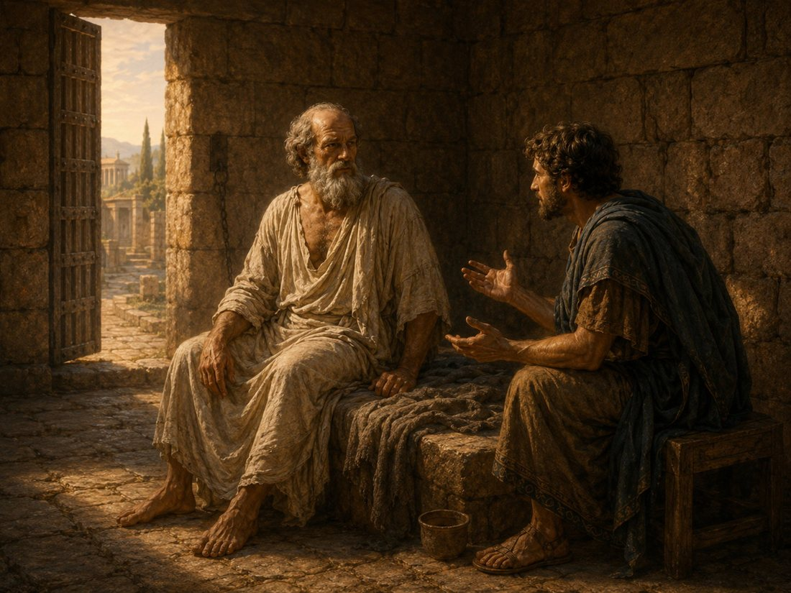
天光从牢门口斜照进来，像是把「活下去」的可能，清清楚楚地摆在了他脚边。克里同说的每一句，都合情、合义，也合人之常情；可苏格拉底听的，却始终不是「能不能走」，而是「该不该走」。对旁人来说，逃亡是求生；对他来说，若逃亡会把自己一生所守的道理一笔勾销，那便不过是把肉身带出去，却把灵魂留在了牢里。
他有个老友，叫克里同，为他安排好了一切：狱卒已经买通，出城的路已经打点，外邦的朋友愿意收留。克里同一大早溜进牢房，急切地劝他：快走吧！钱不是问题，路都铺好了。你若留下来送死，人们会说，是我们这些朋友太吝啬、太怯懦，眼睁睁看着你死也不肯出手相救——这是我们的耻辱。何况，你还有年幼的孩子，你就忍心撇下他们不管吗？
苏格拉底静静听完，又开始了他那一套追问——这一回，问的是他自己。
他说：克里同，我这一辈子，都听从一个道理：一个人无论如何，都不该做不义的事，哪怕别人先对他不义。那么现在，雅典的法律判了我死刑——判得对不对，是另一回事——可我若为了保命，就翻墙逃走、践踏这座城邦的法律，我岂不是在用一桩新的不义，回敬那桩加在我身上的不义？我这一辈子在这座城邦里长大、受教育、生儿育女、安身立命，享了它的种种好处，如今它的判决于我不利，我就撒腿逃跑、毁弃它的律法——这不正好，把我一辈子讲的道理，全给推翻了吗？
他说：我若这样苟活下去，逃到别处，从此便是一个破坏法律的人、一个言行不一的懦夫。那样活着的苏格拉底，还是苏格拉底吗？我在乎的，从来不是活多久，是活得对不对。
他拒绝了逃走。
看清这里，就看清了他这个人最后的、也是最深的一致。他一辈子做那件活的事——追问、审察、绝不苟且——如今，这件事要了他的命，他也绝不肯在最后关头，靠一桩自己都不认的不义，来保这条命。他把自己活成的那个样子，一直守到了最后一格，一寸也没让。他大可以逃，逃了还能接着讲学、接着追问；可他宁可去死，也不肯让自己讲的道理，在自己身上，破一个洞。
那个宽肩膀的年轻人，后来把这场牢房里的对话，一字一句，记了下来。他大概比谁都更希望老师逃走——逃走，就还能再听他问一千个问题。可他也比谁都更清楚：一个肯为保命而逃的苏格拉底，就已经不是那个值得他用一生去追随的苏格拉底了。老师用他的死，把「他是谁」这件事，钉死了，钉得再不能更改。
克里同进牢房时，天还没有全亮。狱卒靠在门外打盹，走廊里有潮湿石头和旧草席的味道。苏格拉底已经醒了，睡得比来救他的朋友还安稳。克里同急得声音发抖，他却先问：现在几点？圣船到哪儿了？仿佛他们谈的，不是逃命，而是一件仍可从容审察的普通事情。
后来，柏拉图把「雅典的法律」写成一群会说话的存在。它们站到苏格拉底面前，问：你在这里出生、成长、成家，若不满意，可以离开；可你七十年都留下了。如今判决对你不利，你就毁掉你与城邦共同生活的约定吗？法律也许判错了，人却不能因为受了不义，就反过来以不义报复。
这套论证，后人当然可以争辩。坏的法律是否也值得服从？一个城邦若用法律杀害正直的人，正直的人还欠它什么？可对苏格拉底来说，最要紧的不是把这道题替所有时代解完，而是不能在自己这一生最后的一步上，突然换一套方便自己的原则。
他常说，不是活着本身最重要，是活得好；不是保全呼吸最重要，是不让灵魂因恐惧而变坏。若他翻墙逃走，他也许还能活许多年，可那个在市场上不断要求别人审察生活的人，会先在墙下死去。
柏拉图后来一遍遍重写这场清晨的谈话，也许正因为它太难接受。他想让老师活，又必须承认，若老师以背叛自己的方式活下来，那活着的人，已经不是他想留住的那个人。爱在这里，被逼着学会一件最残酷的事：有时你不能替所爱之人选择生路，因为那条生路，会把他之所以值得你爱的一切，沿途丢尽。
最后一天
圣船回来了。行刑的日子，到了。
那一天，苏格拉底的朋友和学生们，一早就聚到了牢房里，陪他走完最后的时辰。他们个个悲痛欲绝，唯独苏格拉底，出奇地平静，甚至比平日还要从容。
他们又谈了一整天。谈的是什么呢？谈的偏偏是——灵魂，会不会死。
苏格拉底在生命的最后一天，安慰他那些哭泣的朋友说：一个真正爱智慧的人，是不该怕死的。因为死，无非是灵魂脱离肉体。而哲学家一辈子做的事，本就是让灵魂尽量摆脱肉体的牵累，去亲近那些纯粹的、不朽的东西。所以对哲学家来说，死亡不是终点，倒像是一场期待已久的、灵魂终于得以自由的解脱。他一整天，都在论证：灵魂是不朽的，它在肉体死后，会继续存在，去往一个更好的地方。
太阳快落山了。狱卒端来了那杯毒酒——毒芹熬的汁。苏格拉底接过来，神色如常，问了一句该怎么喝，然后，一饮而尽。
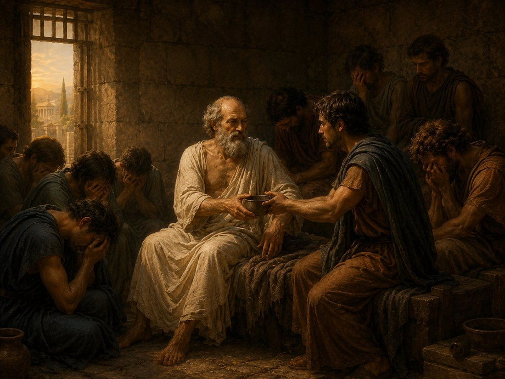
牢房里一时间静得只剩呼吸。哭泣的人不敢抬头，劝解的人也找不到一句像样的话，仿佛谁先出声，谁就会把这最后一点尚能维持体面的安宁，亲手打碎。可苏格拉底偏偏仍像往常那样镇定：他接过杯子，不像接过刑罚，倒像接过一件早已想明白的事情。那个宽肩膀的年轻人虽然不在场，可柏拉图后来写下这一幕时，分明是想让后世看见：老师最后留下来的，不只是死亡，而是一种面对死亡时仍不肯慌乱的姿态。
朋友们再也忍不住，放声痛哭。苏格拉底却责备他们：安静些，安静些！我把女人们都遣走，就是不想听这种哭闹。一个人，该安安静静地，走。
毒性从脚开始，慢慢往上蔓延，一点一点，麻木、冰凉。他躺下来，脸上盖着布。等那股寒意快要漫到心口，他掀开脸上的布，留下了最后一句话。那句话，古怪得让两千年的人反复揣摩：克里同，我们还欠阿斯克勒庇俄斯一只公鸡，别忘了替我还上。——阿斯克勒庇俄斯，是医神。人在病愈之后，会向他献祭一只鸡，谢他治好了病。苏格拉底把死亡，当成了一场痊愈：仿佛活着才是一场大病，而死，是终于被治好了。
说完，他闭上了眼。那个在雅典市场上，把一个又一个活的问题，在人与人之间点燃了一辈子的人，死了。
那件活的事，随着这个活人的死，熄灭了。
而在这最要紧、最伤痛的一天，那个宽肩膀的年轻人，那个最深爱着老师、日后将用一生去书写老师的学生——不在场。
后来，正是在他记下那最后一天的文字里，轻轻地、几乎是一笔带过地，留下了一句解释：「柏拉图，我想，是病了。」
我们尽可以想象那一天，对这个年轻人，意味着什么。或许，他真的病倒在床，浑身发烫，动弹不得；或许，那「病」，是一颗预感到即将发生什么、却又无力阻止的心，先垮了。而当噩耗传来——当有人推开门，告诉他，一切都结束了，老师已经饮下毒酒、安静地走了——他会是什么样子？他没能到场。他没能，在老师最后的时辰，握一握那双问了他一辈子的手；没能，听老师，对他，说上最后一句话；没能，亲眼看着，那个他此生最敬爱的人，怎样从容地，闭上眼睛。他只能，事后，从别人断断续续的转述里，一点一点，拼凑出那个他缺席了的、下午。这份「缺席」，会像一根刺，扎进他此后的每一天。也许，他一辈子拼了命地写老师、拼了命地要让老师不死，骨子里，都藏着一个再也补不回来的遗憾：那一天，我不在。
我们不知道，那是一场怎样的病。是身体真的病倒了，还是那颗心，实在承受不了亲眼看着老师被毒死的场面。我们只知道，在苏格拉底饮下毒酒、闭上眼睛的那一刻，他最伟大的学生，不在他身边。他没能对老师，说上最后一句话；他没能，握一握老师的手；他甚至没能，亲眼看着老师，安静地走。
这是一道伤口。一道，将永远，无法愈合的伤口。
据斐多后来回忆，那天清晨，狱卒先替苏格拉底解开了脚镣。铁环拿掉后，苏格拉底揉着被磨痛的小腿，忽然笑着说：痛与快乐真是奇怪，彼此像仇人，却总被拴在一起。脚镣带来的痛刚离开，轻松的快乐便跟着来了。若伊索知道，大概会写一则寓言，说神想调解它们，没能成功，只好把两者的头，系在同一具身体上。
朋友们又气又悲：到了这个时候，他居然还在从腿上的疼痛里，生出一个问题。可这正是苏格拉底。死亡没有让他停止观察，也没有让他突然改用一套庄严的语言。他仍从最具体的感觉出发——铁环、皮肤、麻木、温度——一点点问到灵魂、死亡和善。
柏拉图后来听斐多讲这一切，大概不只听过一遍。他会追问：老师接过杯子时，手有没有抖？说最后一句话前，停了多久？布盖在脸上，是什么颜色？克里同站在哪里？每一个细节，都像从一个他没能到场的下午里，打捞出来的碎片。
他写《斐多》，也许不仅为了论证灵魂不朽。他是在用文字，给自己补一场迟到的告别。他把朋友们的哭、狱卒的犹豫、毒性从脚向上蔓延的次序，一件件安放到纸上，像在把一具已经无法挽回的下午，重新拼起来。
可是写得越清楚，那道缺席越清楚。他可以替后世留下老师最后的每一句话，却不能把自己，补进那间牢房。他让所有读者都在场，唯独那个最想在场的年轻人，永远缺席。
也正因为补不回，他才会想建一个不受时间支配的地方。在那里，没有「来晚了」，没有「圣船已经回来」，没有一杯喝下便无法逆转的毒酒。理念界最初的诱惑，或许就是这样简单：它许诺，真正重要的东西，永远不会因为一个下午的错过，而永远失去。
想想看，这道伤口，有多深，多毒。他的城邦——他生于斯、长于斯、本欲为之奉献一生的城邦——亲手，用最卑劣的罪名，杀死了他心中最高贵、最智慧的人。而他，连在场送别，都做不到。那个把「正义」活成了一转身的人，被一个自称正义的城邦，判为不义，处死了。那个把真理活成了一件活事的人，眼看就要随着他的死，从这世上，彻底消失，一个字也留不下——因为他，从不写字。
这道伤口里，将生出一样东西来。
一个失去了老师、又亲眼看着老师被这个肮脏易变的现实世界所吞没的年轻人，会不顾一切地想：不。这样活生生的真理、这样高贵的灵魂，绝不能就这样，被这个会朽坏、会背叛、会杀人的世界，一笔勾销。一定有一个地方——一个雅典的毒酒够不着、暴民的愚蠢够不着、时间的侵蚀也够不着的地方——在那里，苏格拉底所追问的一切「本身」，正义本身、善本身、美本身，永恒地、完好地、不朽地，存在着。
他要为老师，为老师追问的一切，为老师本人，找到那样一个不死的地方。
若这个世界留不住他——那就把他，安放到一个，这个世界永远够不着的、永恒的世界里去。
苏格拉底死后的第二天，市场照常开了。鱼仍带着腥味，钱币仍在桌上碰响，政客仍在柱廊里交换消息。没有一道雷劈下来，也没有神庙倒塌。城邦杀死了牛虻，骏马并没有立刻死去。它只是，忽然安静了一点。
有人走到那个老头常站的地方，下意识地放慢脚步。过去怕被他拦住的人，现在发现，再也不会有人问他：你这么忙，究竟是为了什么？那份轻松起初像解脱，过了一会儿，却有一点空。
也有人说，他罪有应得；有人说，七十岁，反正也活够了；还有人开始把昨日的细节讲成传奇，仿佛一旦死亡发生，真实的人便立即被故事接管。
柏拉图若曾偷偷回到市场，也许会站在远处，不肯走近那个空位。老师没有坟墓般的讲坛，没有一间属于自己的屋子。他留在城里的痕迹，只是许多人记忆中，被问得一时答不上来的片刻。这样的痕迹太轻，风一吹就会散。
正是在这份轻里，柏拉图感到必须建造重的东西：著作、学说、学校、理念界。要有石头，要有结构，要有能抵抗遗忘的重量。
可后来的事实偏偏证明，最轻的东西活得最久。那一个个没有写下来的问题，借着人的口耳、柏拉图的文字和后世的课堂，不断迁移。市场上的空位没有被填满，却成了一处看不见的入口。每当有人在确定中忽然停住，承认「我还不知道」，那个老头便从空位里，重新走了出来。
卷上，到此为止。那个从不写字的人，死了。
卷下，是关于那个用一生去写他的人，怎样为了不让他死，亲手，为他，建起了一座不死的殿堂——以及，那座殿堂，如何在留住他的同时，也永远地，改变了他。
逃离雅典
苏格拉底死后，他的一群学生，仓皇逃离了雅典。
逃亡的人最先失去的，往往不是住处，而是称呼。过去他们说「老师」，所有人都知道指谁；到了异乡，这个词忽然没有了共同的背景。客舍主人问，你们的老师叫什么？他们才不得不把「苏格拉底」这个名字，像一件需要保护的东西，郑重地说出来。
名字一出口，众人都沉默。它太轻，只是几个音；可那个人的步态、笑声、坏脾气、勇敢和最后一杯毒酒，全压在这几个音上。若没有共同经历的人听见，它不过是陌生的名字。
柏拉图由此更明白，记忆必须获得形式。不是为了把老师缩成标签，而是为了让没有见过他的人，也能进入那些相遇。故事、对话、场景，正是给名字重新长出身体。
从这一刻起，他要保存的，不再只是一个人的观点。他要保存一种关系：老师怎样让人难堪，又怎样让人在难堪之后，第一次对自己诚实。只有关系被重新建立，名字才不只是墓碑上的字；它才会重新成为一声呼唤，让那个已经离开的人，在陌生人的心里，第一次转过身来。
那个宽肩膀的年轻人，也在其中。他去了不远的麦加拉，投奔另一位苏格拉底的老友。他心里，装着一团烧不尽的东西：一半是失去老师的、掏空了的悲痛，一半是对那座城邦的、几乎要把他烧穿的愤怒。
他怎么能不恨呢。他生在这座城邦最高贵的门第，本该是它的骄子；他年轻时满心想着，要为它、为这片养育了他的土地，做一番事业。可这座城邦，先是让一群僭主大开杀戒——那里头还有他的至亲；好不容易换了民主，这个号称人人平等、宽容大度的民主，做的第一件让他刻骨的事，竟是用一杯毒酒，毒死了他心里最智慧、最正直的那个人。
他后来回顾自己的一生，写下过一段近乎绝望的话。他说：我年轻时，和许多人一样，一心想着一等我成年、就投身政治。可我亲眼看到的一切，让我越来越头晕目眩。我看着现实的政局，像被卷进一个漩涡，翻来覆去。到最后我终于明白：现存的所有城邦，无一例外，都治理得糟透了；除非哲学家成为统治者，或者统治者成为真正的哲学家——否则，人类的祸患，永无止境。
看清这句话是从哪里长出来的，就看清了他后半生所有事业的种子。它不是从书斋里、从冷静的思辨里长出来的。它是从一道血淋淋的伤口里，长出来的：他亲眼看着，最好的人，被最坏的政治，杀死了。于是他一辈子都在追问同一件事——怎样才能造出一个不会再杀死苏格拉底的城邦？怎样才能让「好」，在这个总是把「好」踩在脚下的现实里，站稳脚跟？
而他给自己的第一个答案是：好的东西，绝不在这片翻滚的、肮脏的现实里。要找到它，就必须掉转头，背对这个会朽坏、会背叛、会杀人的世界，朝着另一个方向——朝着高处，朝着一个更纯粹、更牢靠、永不变坏的方向——去寻找。
带着这团愤怒和这个念头，他离开了雅典，开始了长达十余年的漫游。他要去更广大的世界里，为老师，也为自己心里那个越来越强烈的直觉，寻找一个落脚处。
去麦加拉的路并不远，可对他们来说，像是从一个世界走向另一个世界。几个人天不亮便出了城，谁都没有回头。城门在身后合拢时，铁闩发出一声沉响，仿佛雅典替自己的判决，又补盖了一次印。
路上，大家很少说话。有人谈起老师在牢房里的最后一句，话说到一半便停住；有人忽然发怒，骂陪审员、骂美勒托、骂所有当日没有站出来的人。柏拉图走在队伍中间，手里什么也没拿，却总觉得自己遗落了某件要紧的东西。后来他才明白，他怕遗落的，是声音。老师的声音没有写在任何地方，若他们这些人忘了，它就真的没有了。
麦加拉的欧几里得在门口迎他们。夜里，众人围着一盏小灯，第一次试着把苏格拉底说过的话，一段段复述出来。这个人记得一句，另一个人纠正一个词；有人说老师当时笑了，有人坚持他没有笑。记忆从一开始就不一致。那个从不写字的人，刚死不久，便已经在不同人的心里，变成了几个略有差异的苏格拉底。
柏拉图因此感到一种新的恐惧。死亡不只夺走身体，它还会在活人的记忆里，慢慢改写一个人。今天差一个词，明天少一个停顿，几十年后，老师也许只剩一尊被供奉的像，或者一个供人引用的名字。
于是，写作不再只是选择。它成了一种抢救。要趁声音还没有散尽，趁那些在场的人还活着，把一次次谈话重新搭起来。可他也清楚，写下来的声音已经不是原来的声音。每一笔，既在保存，也在改变。这个矛盾，从麦加拉那盏昏暗的小灯下，就已经跟上了他。
港口的风把海水味与尘土味，一齐吹到脸上。那年轻人回头望向身后的城邦，望见的不只是庙宇、港湾和高处的石墙，也望见了那一整段被它亲手摧毁的信任。离开并不是轻松的，它更像一种硬生生的抽离：把自己从最熟悉的土地上扯开，带着尚未冷却的痛，去别处寻找一个能容纳「正义」与「老师」的更高地方。
远行，与那些不死的数
他走了很远。据说，他到过埃及，看那里的祭司，守着几千年不变的古老知识；到过昔兰尼，那里有著名的数学家。而对他影响最深的，是南意大利和西西里——那里，住着毕达哥拉斯的门徒。
埃及给了他一种奇异的震动。在尼罗河边，那些神庙、那些巨像、那些刻在石头上的古老仪轨，据说，几千年了，一成不变。一代代法老来了又去，一茬茬人生了又死，可那套知识、那套秩序，纹丝不动地，立在那里。他站在那些历经千年而不朽的巨石之间，心里那个念头，又深了一层：你看，会朽的，是人，是这一具具生了又死的肉身；而真正牢靠的东西，是不朽的、不动的、超乎一切生灭之上的。雅典那座会杀死苏格拉底的城邦，是会朽的；可若真有一个「正义本身」，它一定，像这些巨石一样——不，比这些巨石还要牢靠——永恒地，立在那里，任凭尘世怎样翻覆，也伤不了它分毫。
毕达哥拉斯学派，是一群奇特的人。他们既是数学家，又像一个宗教团体。他们相信两件事，恰好，是那个宽肩膀年轻人心里那颗种子，最需要的雨水。
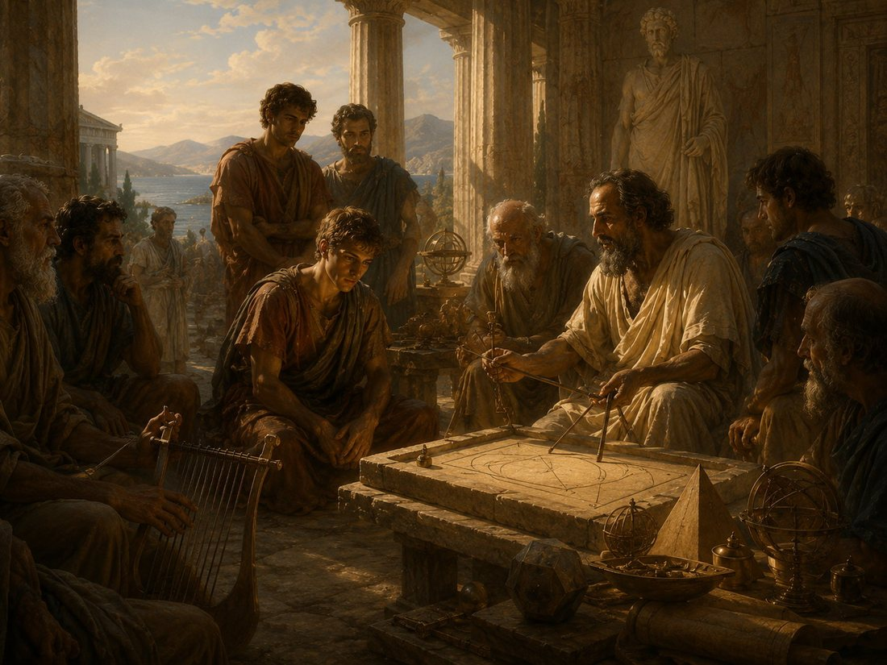
这里的空气，和雅典市场上的空气，全然不同。没有人急着争胜，也没有人急着骂倒谁；人们围着图形、乐器、比例与星象，像在倾听一个比人更久远的秩序。柏拉图心里那点关于「永恒」的直觉，正是在这样的场景中，找到了最坚硬的支撑：若有些东西真的能超出肉身与城邦的毁灭，那么它们也许就像数一样，不会随着谁的死而被抹去。
第一件，是关于「数」。他们发现，这个乱糟糟、变来变去的世界背后，藏着一套永恒不变的、纯粹的秩序——数与比例的秩序。一根弦，你按住它的一半，弹出的音，就和整根弦的音，正好相差一个八度；三比二，是五度；四比三，是四度。这些比例，永远如此，无论哪根弦、哪个时代。他们由此坚信：在这个易朽的、感官的世界之上，存在着一个永恒的、由数和比例构成的、完美而不变的世界；而那个世界，才是更真实的。你眼前这把竖琴会朽烂，可「三比二是五度」这条法则，永不朽烂。
第二件，是关于「灵魂」。他们相信，灵魂是不死的，它会一次次转世；而人活着的目的，是通过净化，尤其是通过研习那永恒的数学，让灵魂摆脱肉体的污浊，重新回到那个纯粹的世界里去。
毕达哥拉斯门徒不只研究数，也试图按数的秩序，共同生活。他们共享某些财物，遵守饮食与沉默的戒律，把师友关系看得比普通城邦的关系更神圣。对柏拉图来说，这是一幅极有诱惑力的画面：哲学不再只是市场上一场随时会散的谈话，而能成为一种日常制度，一群人共同生活的形状。
可这些共同体也并不总是和谐。纪律会变成门槛，秘密会制造内外，政治卷入以后，哲学团体也可能遭到仇恨、驱逐和暴力。数的比例永恒，人围绕数建立的生活，却仍旧会受性格、权力和环境牵动。
柏拉图看见了前一半：若要让灵魂变好，不能只靠偶然相遇，必须有长期教育和共同制度。他后来建立学园，设计护卫者教育，都受了这层启发。
他没有充分看见后一半：制度不是把永恒比例直接复制到人群，便会自动和谐。规则一旦进入具体关系，就会被解释、服从、抗拒，也会产生未曾预料的后果。共同体不是一首只要按对比例便不会走音的乐曲。每一个成员，都在改变整首曲子的实际声音。
这份经验本来可以更早提醒他：理念进入生活时，不只是生活「分有」理念；生活也会反过来，改变理念的意义。所谓正义，在一群人真正共同生活以前，并没有把全部内容，预先写完。
可当时的柏拉图，仍被那纯净的比例吸住。他听见的是永恒的和声，还没有听见，和声必须经过一根具体的弦、一只具体的手和一群具体的人，才真正成为声音。
你看，这两件事，为那个年轻人心里的直觉，铺好了整整一条路。
他一直感到，老师追问的那个「美本身」「正义本身」，那样真、那样确凿，却在这个会朽的世界里，无处安放。现在，毕达哥拉斯派告诉他：别急，本来就有这样一个地方——一个在感官世界之上、永恒不变、比这个世界更真实的世界；那些永恒的东西，就住在那里。他一直痛惜，老师随着肉体的死，就要彻底消失。现在，毕达哥拉斯派告诉他：别怕，灵魂不死；肉体死了，那个真正的、纯粹的东西，会回到它永恒的家里去。
一块拼图，「咔哒」一声，合上了。
老师执拗追问的那个「本身」，加上毕达哥拉斯那个「永恒不变、更真实的世界」，再加上「灵魂不死」——这三样东西，在这个年轻人心里，融成了一个石破天惊的构想。他将要宣告：老师追问的每一个「本身」，都不是一场谈话里稍纵即逝的火光，而是一个永恒的、真实的、不朽的存在；它们，全都住在那个感官之上的、纯粹的世界里。
他给那个世界，起了个名字。他给那些永恒的「本身」，也起了个名字。
那个世界，叫理念界。那些「本身」，叫理念。
带着这个已经成形的构想，他回到了雅典。他要把它，写下来；要把它，教出去；要为老师，也为老师追问的一切，正式地，建成那座不死的殿堂。
在埃及，他或许见过测地的人。尼罗河每年泛滥，水退以后，田界被冲得模糊，祭司和测量者便拿着绳子重新划分土地。一个三角形，不是为了在纸上好看，而是为了让两户人家知道，各自该从哪里耕种。水毁掉了旧的边界，数与形又把秩序，从泥里，重新拉出来。
这一幕会让柏拉图相信，几何不属于某一块会被洪水冲走的田。田界年年变化，三角形的关系却不变。可那只后来的眼睛也会提醒：几何的意义，并不是孤零零地住在天上。正是洪水、土地、绳索、测量者和争执的农人，共同让这些关系，成了此刻非要显露不可的东西。没有泥土的混乱，那个「永恒的三角形」，也不会以同样的紧迫，进入人的生活。
在南意大利，毕达哥拉斯门徒把一根弦架在木箱上。他们先弹整根弦，再按住一半。两个音一前一后响起，柏拉图听见一种几乎令人战栗的和谐。弦会断，木箱会朽，弹弦的手会老；可二比一的关系，似乎不受这一切影响。
夜里，他躺在客舍，耳边还回荡着那个八度。他想到老师的声音。人的声音也会消失，可声音里那些比例、论证和指向「本身」的力量，会不会像数一样，在另一个地方，不受死亡侵蚀？
数学给他的，不只是知识，是一种安慰的形式。它把「不会死」第一次变得可以想象、可以证明、甚至可以听见。老师没有留下文字，可也许老师所追问的真理，正像弦音背后的比例：每一次具体的发声都会停，那个关系，却永远在那里。
这块拼图之所以扣得那样紧，是因为它不只满足了理性，也抚慰了哀伤。理念界不是从一条冷冰冰的推论里建起来的。它有海风的咸味，有神庙巨石的阴影，也有一根弦震动之后，在失去老师的心里，久久不散的余音。
一个不死的地方
我们要在这里，停一停，把这座殿堂动工前，那个年轻人心里真正的动机，看个透彻。因为整座殿堂，全都压在这个动机上。
他要解决的，是一个几乎无解的难题。
老师做的那件事——那件活的、在人与人之间当场发生的追问——它最致命的弱点，恰恰在于它「活」。凡是活的，就会死。苏格拉底本人一死，那件事，就跟着熄了。他没有著作，没有体系，什么也没留下。用不了几代人，人们就会把他忘了，或者，把他记成一个被雅典毒死的、爱抬杠的怪老头。那尊「银盒子里的神」，那个用整个身体和灵魂活出真理的人，就要像一朵火花，噼啪一响，永远地，从时间里，消失。
这个年轻人，无论如何，不能接受这一点。
他要让老师，不死。他要让老师追问的那一切「本身」，不死。可怎么才能让一个「活的东西」不死呢？
这里，藏着整个西方思想史，最深、也最动人的一个岔路口。
活的东西之所以会死，是因为它「活」——它在时间里，它会变，会朽，会有一个终点。那么，要让它不死，办法只有一个：把它，从「活」里，拽出来。把它，从时间里，从变化里，从这个会朽的世界里，整个地，拽出来，安放到一个没有时间、没有变化、不会朽坏的地方去。在那里，它不再会死——因为它，也不再「活」了。它只是永恒地、不动地，存在着。
这，就是那个年轻人做的事。
他把老师那件「活的、会发生、会消失」的追问，改造成了一样「永恒的、不动、不朽」的东西。老师在谈话里，一次次当场逼问出的那个「美本身」——它本是一件正在发生的事，谈完就散——被他，从「发生」里拽了出来，坐实成了一个永恒待在理念界里、不生不灭的东西。
用一句话说尽这场改造：老师做的是一个动词——不停地、当场地、追问「什么是美本身」；学生给出的是一个名词——有一个「美本身」，永恒地、现成地，待在那个叫理念界的地方，等着你去发现。
他把一个正在发生的过程，冻成了一个永恒不变的东西。
而他这样做的理由，纯粹得让人心碎：因为一个「永恒不变、不生不灭的东西」，是杀不死的。雅典的毒酒毒不死它，暴民的愚蠢毁不掉它，时间的流逝也磨不损它。他把老师的真理，搬进了一个连死亡都够不着的保险箱里。
他是出于爱，才这样做的。他舍不得让老师死，舍不得让老师追问的一切随之湮灭，于是他倾尽全力，为它们，造了一个不死的家。
可他没有看见——或者说，他看见了，却顾不上——他为了让那件东西「不死」，付出的代价，恰恰是让它，「不再活」。他把一朵火花，凝固成了一颗永不熄灭的宝石。宝石是不朽的，可宝石，不会再噼啪作响了。他救活了真理的「不死」，却葬送了真理的「活」。
这就是这座殿堂全部的秘密，也是它全部的问题。它是一座陵墓，同时也是一座神庙——它把一个活人的真理，做成了永恒；而永恒的代价，是那个真理，从此，不再发生了。
柏拉图最初动笔时，也许试过直接写：真理是永恒的，理念先于万物而存在。句子落在蜡板上，整齐、清楚、毫不摇晃。可他看了一会儿，觉得那不是老师。苏格拉底从不这样开口。老师不会端端正正地把结论放到人面前；他会先问你从哪里来，听你说一句自以为聪明的话，再抓住其中一道小小的裂缝，慢慢把整个人引进去。
于是柏拉图把那句断言擦掉，写了一条街，写一个迎面走来的人，写苏格拉底笑着问：你说的「善」，究竟是什么意思？
这一改，意义极大。他本想为真理造一座不动的石室，笔却本能地替老师搭起了一个可以再次发生的舞台。人物进场，意见碰撞，读者被迫站到其中，不再只是接受答案，而要跟着问题走。
可柏拉图仍不放心。他在舞台背后，继续修建那座永恒的殿堂。他让苏格拉底一次次抬头，指向理念、灵魂和善本身；让活的对话，最后服务于不动的结构。于是他的文字里，始终有两种建筑同时进行：一种用石头，想把真理封存；一种用声音，让真理重演。
他也许没有意识到，真正让老师不死的，并不是那间没有时间的石室，而是每一场仍会被读者重新卷入的谈话。陵墓保存遗体，剧场却能让角色一次次出场。柏拉图一生最伟大的成就，很可能恰恰来自他没有完全服从自己的形而上学——他的哲学要冻结，他的文学，却不肯让老师停止呼吸。
两个世界
殿堂盖起来了。它的结构，是这样的。
这个年轻人——现在，我们该叫他柏拉图了——宣告：存在着两个世界。
一个，是你我眼前的这个世界：看得见，摸得着，热热闹闹，可也，变来变去。这里的一切，都在生灭流转：花会开也会谢，人会生也会死，再美的东西也会朽坏，再牢的东西也会崩塌。在这个世界里，你找不到任何一样，永远不变的东西。柏拉图说，这个世界，是变的世界，是生灭的世界。而凡是变的，就够不上「真正的存在」——因为它此刻是这样，下一刻又是那样，你根本没法说，它「究竟」是什么。
另一个，是理念界：看不见，摸不着，却永恒不变，完美无瑕。在那里，住着一切的「本身」——美本身、正义本身、善本身，还有圆本身、大本身、相等本身。它们永恒地、不动地、完美地，存在着。理念界里的「美本身」，不会变美一点或丑一点，它就是美，永远是美，纯粹的美，完满的美。柏拉图说，这个世界，才是真正存在的世界，是不朽的、真实的世界。
那么，这两个世界，是什么关系？
这个画面几乎把柏拉图的全部雄心一下子摊开了：脚下是拥挤、热闹、易朽的人间，上方却是被几何、神像与秩序照亮的永恒之域。苏格拉底当年不过是在街头问「什么是正义」，柏拉图却一步把答案抬到了云层之上。对一个刚刚失去老师的人来说，这样的抬升，当然充满安慰；可也正是在这安慰里，那个本来在谈话中发生的「本身」，被固定成了一个高悬不动的地方。
柏拉图说：我们这个变的世界里，所有的东西，都是理念界里那些「本身」的影子，是它们不完美的摹本。一朵花之所以美，是因为它「分有」了理念界里那个「美本身」——它像影子分有形体一样，沾了一点点「美本身」的光。可它毕竟只是影子，只是摹本，所以它的美，是残缺的、会朽的；而那个「美本身」，才是圆满的、不朽的原型。
你看这幅图景，多么迷人，又多么彻底。它一举解决了柏拉图心里所有的难题。老师追问的「美本身」在哪里？在理念界，永恒地待着。为什么我们在任何一朵会谢的花里，都找不到那个不谢的「美本身」？因为花只是影子，「美本身」在影子够不着的、更高的世界里。苏格拉底那样真、那样确凿的追问，为什么会随着他的死而消失？不，它没有消失——它追问的那些「本身」，永恒地存在着，从来不曾、也永远不会，消失。
想想这幅图景，给了那颗破碎的心，多大的慰藉。它等于在说：柏拉图，别悲伤了。你的老师，那个最高贵、最智慧的灵魂，并没有真的死去。他这一生所触及的、所追问的那一切至真至善之物，此刻，正完好无损地，安放在一个雅典的毒酒永远够不着的地方。那座城邦，杀得死苏格拉底的肉身，却动不了他灵魂所朝向的那个永恒世界，分毫。你从今往后，只要闭上肉眼，用心去看，就还能，够着他够着过的东西。——对一个刚刚失去了世上最爱之人、又痛恨着夺走他的那个肮脏世界的年轻人来说，还有什么，比这个许诺，更让人愿意，倾尽一生去信？他建这座殿堂，与其说是在做形而上学，不如说，是在为自己那道无法愈合的伤口，寻一味，能止痛的药。
一切，都安放好了。老师，和老师追问的一切，都被搬进了那个永恒的、不死的世界里，再也没有什么，能伤害它们了。
可是——请让那只两千四百年后的眼睛，静静地看着这幅完美的图景，缓缓地，指出那根最深、最要命的错梁。
柏拉图说，理念是先在的：它们永恒地待在那里，先于一切，独立于一切，等着我们去发现。花来「分有」它，它却不依赖任何花而存在；人去认识它，它却不依赖任何人而存在。它是现成的、独立的、永恒的原型。
而这，恰恰是他为了「让真理不死」，不得不撒下的、最深的一个弥天大谎。
因为老师做的那件事，明明白白地告诉我们：那个「美本身」，根本不是先在的、现成待着的东西。它是当场发生的——在具体的对话里，从姑娘、马、竖琴、陶罐的种种差异中，被一次次地逼问、拧结，才一点一点地，显露出那个共同的轮廓。它不先在于对话，它在对话里，才发生。谈话一停，它又隐去，等着下一次，重新被逼问出来。老师一辈子在做的，就是这件「让美本身当场发生」的事——他是接生婆，他接生的，是一个正在被生出来的东西，而绝不是一个早已存在、只等被找到的东西。
柏拉图把老师亲手接生（发生）出来的东西，说成了一个早就躺在那里、等人发现（先在）的东西。
他必须这样说。因为一个「当场发生、谈完就散」的东西，是会死的——它和苏格拉底一样，是活的，因而是会死的。只有把它说成一个「永恒先在、从不发生」的东西，它才杀不死。他为了让老师不死，只好把老师做的那件「发生」的事，从根上，说成了一件「发现」的事。
一个动词，被他做成了一个永恒的名词。一件正在发生的事，被他做成了一个从不发生、只是永恒存在着的东西。
这，就是「发现」压过「发生」的、那个最初的、决定性的一刻。整个西方此后两千四百年的思想，都将站在这一刻之上：真理，不是当场发生的事，而是永恒现成、等待被发现的东西；要够着它，你就得掉转头，背对这个变动不居的现实世界，朝着那个不变的、更高的世界，向上、向外，去寻找。
后来，有一个叫黑格尔的人，会把一条奔流的河，冻在「终点」那一格；再后来，有一个叫尼采的人，会把一场永不停歇的超越，供成一尊高峰上的雕像。他们都栽在同一个坑里——把一件正在发生的事，当成了一个永恒不动的东西。可这个坑，不是他们挖的。这个坑，是眼前这个宽肩膀的年轻人，为了不让他死去的老师，第一个，亲手挖下的。
他挖这个坑，是出于人世间最深的一种爱。这，是这整个故事，最让人心碎的地方。
有一天傍晚，学园里的一个学生把一朵花放在柏拉图面前。上午它还挺立，到了傍晚，花瓣已经垂下。学生问：老师，既然这朵花只是「美本身」的影子，为什么我明明知道它会谢，仍觉得它此刻的衰败也有一种美？
柏拉图或许会说，因为灵魂透过它，仍认出了那个永恒的原型。可这个回答没有把问题完全压下去。花之将谢，不是它美的缺陷吗？为何恰恰是这份短暂，让人的目光停得更久？若理念界中的美从不受时间侵扰，它会有这种令人心疼的力量吗？
两个世界的构想，把死亡解释掉了，却也把死亡带来的独特意义，一并削薄。这个世界的事物之所以可爱，常常正因为它们不能永远属于我们。一张年轻的脸会老，一次相逢会结束，一座城邦会兴衰。我们不是先拥有一个永恒的「爱」，再把它投向这些对象；许多时候，恰恰是因为某个具体的人可能失去，爱才以此前没有过的强度，被生了出来。
柏拉图当然不会轻易接受。他失去老师的痛，太深了。若承认有限与消逝不是低等的缺陷，而是意义发生的条件之一，就等于承认：苏格拉底之所以不可替代，正因为他只活过这一生，只在这些街道、这些战役、这些谈话里，出现过一次。
可这也意味着，不必把老师搬到另一个世界，才能承认他的真。恰恰是那一双会疲倦的脚、那一个会被毒死的身体、那一场无法重复的相遇，使「苏格拉底」成了谁也无法用一个永恒范本替代的存在。
永恒给人安慰。有限，给人唯一。柏拉图选了前者，而他真正爱着的老师，却属于后者。
回忆，还是建造
殿堂盖起来了，可还有一个大窟窿，没堵上。
如果那些「本身」，都住在一个我们的肉眼看不见、摸不着的理念界里，那么——我们，是怎么知道它们的？我们这辈子，眼睛看到的、耳朵听到的，全是这个变的世界里的影子；我们从没去过那个理念界，凭什么，我们心里会有「美本身」「正义本身」这些念头？
柏拉图给出的答案，是他整座殿堂里，最大胆、也最能暴露全部秘密的一块砖。他说：我们是想起来的。
他说：灵魂是不死的。在投生到这个肉体里之前，我们的灵魂，曾经住在理念界，亲眼见过那些「本身」，认识它们，熟悉它们。只是一投生到这肉体里，被这变动不居的感官世界一冲刷，我们就把那一切，忘了。所以，我们这辈子所谓的「学习」，根本不是从外面学到什么新东西——是回忆。是借着这个世界里的种种影子，把灵魂从前在理念界里见过的那些「本身」，一点一点，重新想起来。看见一朵美的花，你心里「唉，真美」的那一动，其实是那朵花的影子，勾起了你灵魂深处，对「美本身」的、前世的记忆。
他甚至设计了一场演示，来「证明」这一点。老师苏格拉底，找来一个没读过书、大字不识的小奴隶，只靠一个接一个地提问，竟然，把一道相当难的几何题的答案，从这个小奴隶嘴里，「问」了出来。柏拉图说：你看，谁也没「教」这孩子几何，是苏格拉底的提问，把他灵魂里本就「记得」的知识，重新唤醒了。这不是学，这是忆。
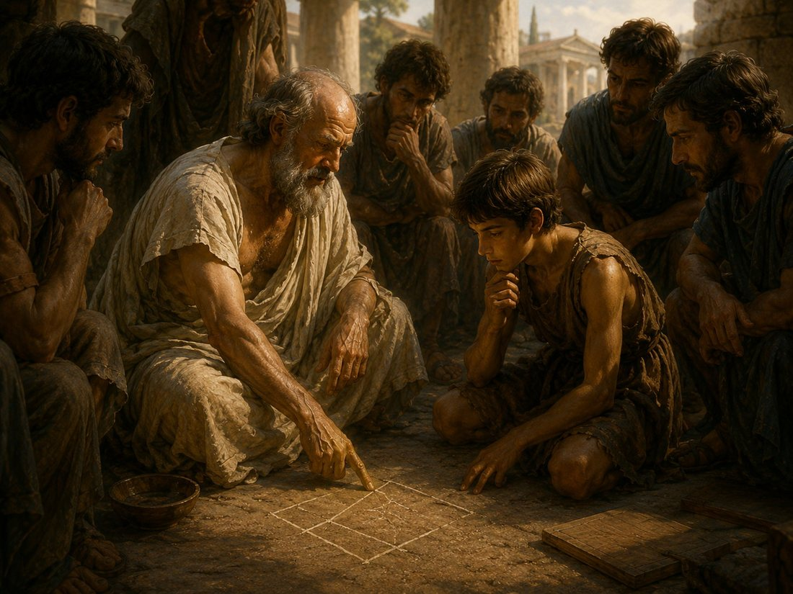
围观的人越安静，这场演示就越惊人。一个原本并不会几何的孩子，在一道又一道追问之下，竟真的开始看见关系、修正错误、慢慢把答案拼了出来。若只看最后一刻，人很容易说：你看，他本来就知道；可若把整个过程看全，就会明白，真正发生的是另一件事——答案不是从天上掉下，也不是从前世整块搬回，而是在这一问一答的差异推动里，当场被造了出来。
请在这里，站定，因为这是整个故事，最惊心动魄的一次颠倒。
「学习即回忆」，是人类想得出来的、最纯粹的一句「发现」宣言。它说：没有任何东西，是新生的、被造出来的；一切真理，早已现成地、永恒地，存在在那里（在灵魂里、在理念界里），我们做的一切，只是把已有的东西，重新找回来。世上没有「诞生」这回事——只有「找回」。
可是，那只两千四百年后的眼睛，看着那个正在被追问的小奴隶，缓缓地，摇了摇头。它说：这孩子，根本不是在「回忆」什么前世见过的东西。这道几何题的答案，是在苏格拉底一个接一个的追问里，当场，被建造出来的——是那一连串的问题，像一道道差异的刻刀，逼着这孩子的心，从模糊到清晰，从错误到正确，一步一步，把那个答案，当场地、活生生地，凝结出来的。它不先在于这场追问，它在这场追问里，才发生。
回忆，不等于建造。
而最尖锐、也最让人心碎的是：证明这一点的那场演示，本身，就是苏格拉底的助产术——是接生。苏格拉底做的，从来就是「把一个正在成形的东西，当场接生出来」；那个小奴隶心里的答案，正是被苏格拉底，当场，接生出来的。这明明白白，是一场「建造」，一场「发生」。
可柏拉图，却把这同一场接生，重新描述成了一场「回忆」。他把老师那件「当场把答案生出来」的活事（发生），说成了「把灵魂前世现成的记忆找回来」（发现）。
这是人类思想史上，最深的一次张冠李戴：那个用一生接生真理、亲手证明了真理是「被生出来」的人，被他最爱的学生，拿去，「证明」了真理从不被生出来、只被找回。接生的老师，成了「回忆」的证据。做「发生」的人，被用来给「发现」背书。
柏拉图当然不是有意撒谎。他是真心相信这一切。可他为什么，非要把「建造」说成「回忆」不可？
还是那个老理由：因为「建造」出来的东西，是新生的，因而是会变、会朽、会有始有终的；而只有「本就现成、只被找回」的东西，才是永恒的、不朽的、杀不死的。他要让真理不死，就必须让真理，从不「诞生」——必须让它，永恒地，早已在那里。于是，连老师那场活生生的接生，他也只好，说成一场对永恒之物的回忆。
殿堂又加固了一层。而它加固的方式，是把「诞生」这件事本身，从这个世界里，取消了。它宣告：没有什么，是真正被生出来的；一切，都只是被找回。
记住这句宣告。因为整个故事最后的转折，就悬在它身上——悬在这样一个问题上：一套斩钉截铁地宣称「没有什么是被诞生出来的」的学说，它自己，是不是，被诞生出来的？
那场几何演示结束以后，小奴隶大概仍要回去搬水、扫地、服侍主人。地上的方形会被脚步踩乱，围观者也会散去。可有一样东西已经不同：他学会了在一条线里，看见另一条可能的线；学会了在「我以为答案是这样」之后，停下来，再看一次。
知识若只是回忆，那么苏格拉底所做的一切，不过是把蒙在旧记忆上的灰，轻轻拂去。可真正的过程远没有这样平滑。孩子先答错，苏格拉底没有把答案塞给他，而是让错误自己暴露；新的图形改变了他看问题的方式；旁人的注视也使他不得不把模糊的直觉，说成可以检验的话。
答案不是藏在孩子一个人的灵魂深处，也不是藏在沙地的图形里，更不是单独藏在苏格拉底的头脑里。它在孩子、提问者、线条、错误和一次次修正组成的整个场面中，才逐步成形。换一个问题的次序，换一幅图，换一个愿不愿意继续思考的孩子，诞生出来的路径就会不同。
这不是说真理可以任意。方形的关系，不会因为孩子心情不同就随便改变。可「真理不任意」，不等于「真理必须在一切相遇之前，以完整成品的方式躺在另一个世界」。种子有自己的结构，可没有土、水、光和季节，它不会成为这一株具体的树。
柏拉图看见了结构的稳定，却把孕育结构的场面，退到了阴影里。他要证明知识不依赖偶然，于是把知识的出生，解释成了旧日的记忆。可那孩子从地上站起来时，带走的并不是一段前世被找回的影像，而是一种刚刚获得的能力：下一次再遇到问题，他知道，可以怎样问，怎样画，怎样承认第一次的答案，也许不对。
真正被接生出来的，不只是一道题的结论。是一个会重新学习的人。
爱的阶梯
要理解这座殿堂，为什么能迷住整个西方两千四百年，光说它的错，是不够的。得说说，它有多美，多让人心醉神驰。
而它最美的一面，柏拉图借一个女祭司之口，讲了出来。那篇讲爱的对话里，苏格拉底转述了他年轻时，一位叫第俄提玛的智慧女子，教给他的一番话——关于爱，究竟是怎么一回事。
第俄提玛说：爱，本质上，是对「美」的渴慕，是灵魂想要拥抱美、想要在美之中孕育不朽的那股冲动。而一个人爱的历程，应当像登一道阶梯，一级一级，往上走。
最低的一级：你先是爱上了某一个人的、某一具美的身体。你被那一副皮相，迷住了。
再上一级：你会渐渐明白，这一具身体的美，和那一具身体的美，其实是同一种美。于是你不再死盯着某一副皮相，而是学会了爱一切美的身体——你爱上的，是「形体之美」本身。
再上一级：你会发现，比身体的美更可贵的，是灵魂的美。一个相貌平平、灵魂却高贵美好的人，比一具空有其表的躯壳，更值得爱。于是你开始爱「灵魂之美」。
再上一级：你会看见，让灵魂变美的，是那些美好的行为、美好的法律、美好的制度；于是你转而去爱那些「制度与知识之美」。
一级一级，越登越高，你爱的东西，越来越大，越来越纯，越来越不系于任何一个具体的、会朽的对象。
直到最后一级——那道阶梯的顶端，你会豁然见到一样东西。那是一种美本身：它不是某一张脸、某一具身体、某一条法律的美，而是纯粹的、永恒的、绝对的美。它不生不灭，不增不减；它不会在这里美、在那里丑，也不会此时美、彼时不美。它就是美，它一直是美，它永远是美。见到它的那一刻，第俄提玛说，人才算真正活过；此前一切对具体之物的爱，都不过是通向这最后一级的阶梯。
人间的爱本来混乱、灼热、缠身，可到了柏拉图这里，它被整理成了一道可以攀登的石阶。下面仍是人的身体、眼神与回首，上面却已经发亮：法律、知识、德性与最终那个不生不灭的「美」，都在高处等着。难怪后来无数人会被这一幕深深迷住——谁不想把会碎的爱，变成一场通往永恒的上升？只是，当一切具体的人都被看成台阶时，那些最初点燃爱意的血肉与悲欢，也被悄悄地留在了身后。
你看，这幅图景，多么摄人心魄。它把「爱」——这人间最热、最乱、最叫人痛苦的东西——变成了一道通往永恒的、庄严的天梯。它告诉每一个在具体的爱里挣扎、受苦、患得患失的人：你所爱的那个会变心、会老去、会死的人，其实只是一级台阶；顺着他往上走，你终将抵达一个永不背叛、永不老去、永不消逝的、绝对的美。
难怪这幅图景，能迷住一代又一代最聪慧的头脑。它给了人一个无比诱人的许诺：这个世界上，一切让你心碎的东西——爱人会变，美貌会逝，好物会朽——都可以被超越，被抛在身后；只要你肯往上爬，爬到那道阶梯的顶端，你就能拥抱一个再也不会让你心碎的、永恒的东西。
可那只眼睛，望着这道美丽的天梯，轻轻叹了口气。它想问一句：为什么，一定要「爬上去、抛下来」呢？为什么，那个「美本身」，非得高高在上、脱离一切具体的美、独自待在阶梯的顶端不可？难道，那个让你心动的「美」，不正是在你和这一张脸、这一个人、此时此地的相遇里，当场地、活生生地，发生出来的吗？你把它从这一切具体的相遇里抽干、拔高、供到顶端，你得到的，是一个纯粹却也冰冷的、不再会让任何人心动的、美的标本。
这道爱的天梯，通向的，正是那个不死的理念界。它美，美得让人甘愿，把脚下这个会心动、会心碎、活生生的世界，全都当作可以抛下的台阶。
而这，也正是它的问题：它教人，为了够着那个永恒的「美本身」，去背对、去抛下，一切当场发生的、活的美。
第俄提玛讲「在美中孕育」时，还说过一层极动人的意思：人知道自己会死，所以总想生出某样比自己活得更久的东西。有人生儿育女，有人建立城邦，有人写诗、立法、教学生。爱并不只想占有美；爱想借着美，生出不朽。
这句话几乎把柏拉图自己照了出来。他爱苏格拉底，也想在这份爱里，孕育一个不会随老师肉身而死的东西。理念论、对话录、学园，都是他的「孩子」。他不是站在爱的阶梯外，冷静地描述别人怎样上升；他的一生，本身就是一次巨大而漫长的孕育。
可具体的爱，总会回来敲门。阿尔喀比亚德不会甘心只做一级台阶。他爱的是这个丑陋、固执、会在酒会上说笑、会在战场上救人的苏格拉底，不是一个抽掉了声音和身体的「智慧本身」。柏拉图自己也是如此。他若真正只爱那个永恒的善，就不必用一生，把老师的鼻子、步态、讥讽和最后一天，写得那样清楚。
这说明，爱的上升并不一定要以抛下为代价。一个人可以从一张脸，学会看见更广阔的美；但更广阔的美，也可以反过来，让他更深地看见这一张脸，而不是把它贬成用过便丢的梯级。普遍与具体，不必是你死我活的两个方向。它们可以在一次爱里，相互照亮。
柏拉图把爱画成一条只向上的线。可真实的爱，也许更像呼吸：向上，抽象出共同；再向下，回到不可替代的这个人。若只上不下，爱会变成纯净的光，却再也照不到任何具体的眼睛里。
而苏格拉底的爱，恰恰一直在下方。他不爱「青年本身」，他爱眼前这个会骄傲、会逃避、也可能被接生得更好的具体青年。他的爱不把人当台阶。它蹲在产床旁边，等一个独一无二的灵魂，自己出生。
洞穴里的囚徒
在柏拉图讲过的所有故事里，有一个，最有名，也最能把他那座殿堂的全貌，一眼看尽。那就是「洞穴」。
他说：设想有这样一座地下洞穴。一群囚徒，从生下来起，就被锁在里面。他们的手脚被缚住，头也被固定住，只能直直地，盯着面前的一堵石壁。他们没法回头，没法侧身，一辈子，只能看那一堵墙。
在他们身后，隔着一段距离，燃着一堆火。火和囚徒之间，有一条矮墙一样的过道，过道上，有人举着各式各样的器物走过——雕成人、雕成动物、雕成种种东西的模型。火光把这些模型，投影到囚徒面前的那堵石壁上。囚徒们看不见身后的火，看不见举着模型走过的人，也看不见那些模型本身；他们一辈子看到的，只有石壁上，那些晃动的影子。
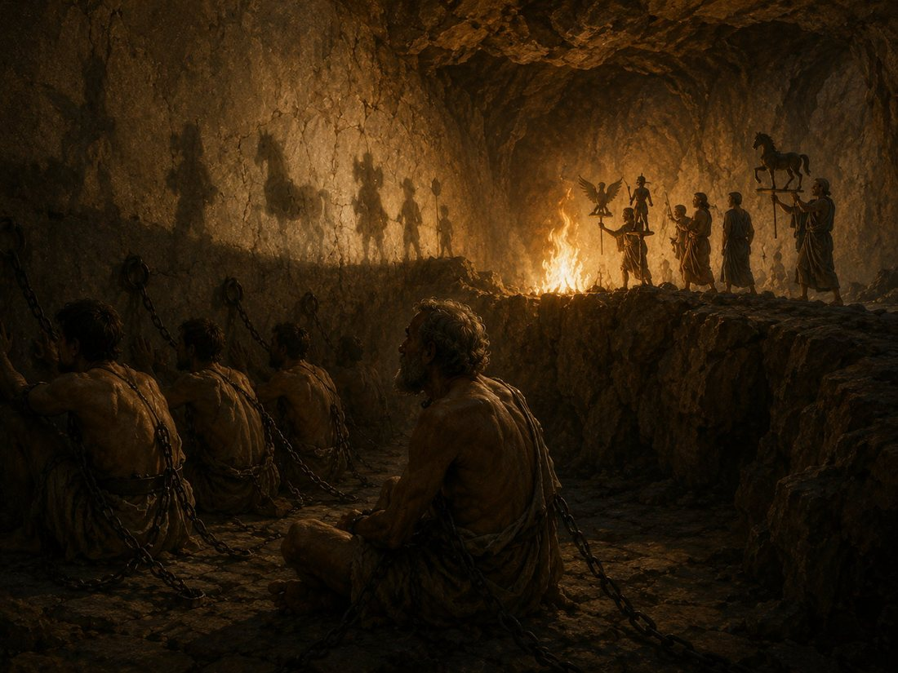
这一幕之所以可怕，不在锁链本身，而在那些囚徒早已经习惯了它。他们甚至为影子的次序争论、记忆、评判高下，以为这便是知识与生活的全部。柏拉图在这里把世界切得异常锋利：你眼前所凭赖的一切，不过是火后之火、影后之影；真正的东西，从来不在你正在经历的地方。这个寓言一旦成立，现实便天然矮了一截，而「上面、外面、后面」的那个世界，则立刻成了唯一值得去的地方。
于是，对这些囚徒来说，这些影子，就是全部的真实。他们给影子起名字，谈论影子，猜测下一个影子会是什么样，还给猜得最准的同伴，颁发荣誉。他们从没怀疑过：这晃动的影子背后，还另有一个真实的世界。影子，就是他们的一切。
请想一想那份囚禁，有多深。这些囚徒，不是被关进了牢里——他们，是在牢里，出生的。锁链之外的世界，他们从没见过，因而，也从不觉得自己被锁着。他们在影子的世界里，活得有滋有味：有学问，有荣誉，有你追我赶的高下之争。那个偶然瞥见影子背后、开始怀疑「这一切是不是假的」的人，在他们看来，不是清醒，是发了疯。这，才是这囚禁最深的地方——它深到，连「我被囚禁着」这个念头，都被它，一并锁死了。囚徒们不但看不见真实，他们还，理直气壮地，守着影子，当作真理，并且，打心眼里，可怜那个想把他们唤醒的人。
柏拉图说：这些囚徒，就是我们。
我们每一个人，从生下来起，就被锁在感官的洞穴里，一辈子盯着眼前这个变动的、感官的世界。我们以为，眼睛看到的这一切——这些会生会灭、会来会去的东西——就是全部的真实。我们给它们起名字，研究它们，谈论它们，为在这上头懂得多一点的人，颁发荣誉。可我们从没意识到：这一切，不过是石壁上晃动的影子；在它们背后，另有一个真实得多的世界——那个由「本身」构成的、永恒的理念界。
请把这幅图景，看清楚。它是「发现」这台机器，最完整、也最赤裸的一张蓝图。
它把整个存在，劈成了两半，而且，分了高下贵贱。一半，是洞穴里的影子——这个变动的、感官的、我们身在其中的现实世界；它被判为「不真」，判为「摹本」，判为需要被超越、被抛在身后的、低一等的东西。另一半，是洞外阳光下的真实之物——那个不变的、纯粹的理念界；它被奉为唯一的「真」，唯一值得朝向的、高一等的世界。
于是，真理的方向，被彻底地，规定了下来：真理，永远在别处，在上面，在外面。你若想够着它，就必须掉转头，背对你眼前这个热热闹闹、活生生的世界，朝着一个更高、更纯、更不变的地方，向上，向外，去攀爬。
那个让你活着的、当场的、正在发生的世界——那片你与万物相遇、纠缠、在其中一次次生出意义来的土壤——在这幅蓝图里，被贬成了洞壁上，一层不值一提的、该被鄙弃的影子。
请把洞穴再想得具体一点。一个孩子在锁链中出生，最先看见的，是墙上一匹马的影子。大人告诉他，那叫马。后来他看见鸟、船、战士、祭司，学会给每一种轮廓起名字。有人能从脚步声判断下一道影子，有人能记住影子出现的次序，于是被称为聪明人。
他们甚至会有自己的诗歌和节日。某一道高大的影子每年出现一次，众人便欢呼；某一道影子消失了，他们会哀悼。对他们来说，影子并非「什么都不是」。影子承载着共同的生活、记忆和秩序。问题不在它们完全虚假，而在囚徒不知道，影子是怎样被制造、被选择、被投射的。
柏拉图因此抓住了一个永不过时的危险：人可能把经过安排的表象，当成世界本身；可能在一套早已替他规定好视线的环境里，自以为自由地判断。可他随后又迈得太远——他把纠正影子的办法，说成彻底背对洞穴，去另一个更真的世界。
也许，还有另一条路。挣脱锁链的人，不只可以走出去，也可以回头看火、看举偶的人、看锁链如何固定身体，弄清影子在这整个装置中，怎样产生。真理不一定非要在洞外预先存在；它也可以在囚徒转身、比较、拆解装置的过程中，被一步步建立。
洞穴最深的束缚，不只是看见影子，而是不能转身。苏格拉底一生做的，正是逼人转身——不是立刻把他们拖到另一个宇宙，而是先让他们看见：我眼前这个自以为完整的世界，有一个我从未注意过的背面。
一个问题，就是脖颈上第一点松动。
柏拉图为老师盖的那座殿堂，到这里，全貌俱现：真正的存在，是那个永恒不变的理念界；要够着它，就得背对这个变动的现实，向上攀爬。此后两千四百年里，无数最聪明的头脑，都将住在这座殿堂里，遵着这张洞穴蓝图，向上、向外，寻找那个「更真实」的世界——却始终没能回过头来，看一眼自己脚下，这片被判为「影子」的、其实一切意义都在其中当场发生的、活的土壤。
可这个故事，还没讲完。因为柏拉图接下去要讲的，是这群囚徒中的一个，挣脱了锁链，会发生什么。而那一段，藏着柏拉图自己，最深的一道伤，和一个他至死都没能迈过去的坎。
回到洞穴的人
柏拉图接着说：假如，这群囚徒里，有一个，挣脱了锁链呢？
那会是一个痛苦的过程。他第一次回过头，看见了身后那堆火，火光刺得他睁不开眼，眼前一阵晕眩。他甚至会想，还不如回去，安安稳稳地，接着看那些看惯了的影子。可假如有人，硬拉着他，一步一步，把他拖出洞穴，拖到地面上——
一开始，洞外的阳光，会亮得让他睁不开眼，什么也看不清。他得慢慢来：先看看地上的影子和水中的倒影，再抬头看看月亮和星辰，最后，等眼睛适应了，他才敢，直视那轮太阳。
到那一刻，他终于明白了。他明白，原来石壁上那些影子，全是假的；原来这阳光下真实的万物，才是真的；而最终，是那轮太阳——照亮了一切、也生养了一切的太阳——才是这整个真实世界的、根源。
柏拉图说：那轮太阳，就是善本身——一切理念中最高的那一个，是它，照亮了整个理念界，也让我们的心，能够看见真理。那个挣脱锁链、爬出洞穴、终于看见太阳的人，就是那个历经艰辛、终于挣脱感官、看见了理念界、看见了至善的——哲学家。
故事到这儿，本可以是一个圆满的、光明的结局：一个人，历尽艰辛，终于见到了真理。
可柏拉图，偏偏给它，加了一个黑暗的、几乎是自传式的尾巴。
他说：这个见过了阳光的人，会怎么样呢？他会想起，还锁在洞里的那些同伴。出于良心，他会重新走下洞穴，去告诉他们真相，想把他们，也解救出来。
可是，当他从光明里，重新回到那黑暗的洞穴，他的眼睛，一时还适应不了黑暗，反而，在影子的游戏里，显得笨手笨脚，磕磕绊绊。于是那些从没出过洞的囚徒，会怎么看他？他们会嘲笑他：瞧，这家伙出去了一趟，回来眼睛倒瞎了！可见上面那个地方，去不得，去了准把人害了。而假如他还不死心，非要动手，解开他们的锁链，把他们往光明里拉——
那些囚徒，会愤怒。会反抗。柏拉图说：他们若能抓住他，一定会——把他杀掉。
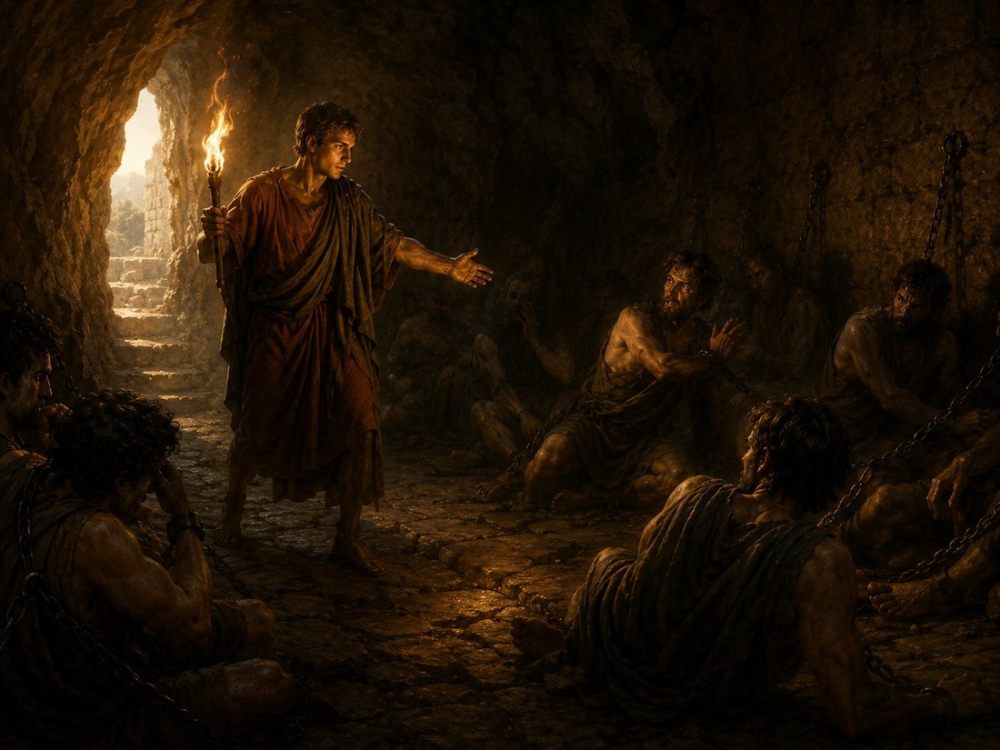
光明不会自动得到欢迎，这正是柏拉图最沉痛的一笔。那个好不容易走出洞穴的人，带着火与消息回来，本想解放旧日同伴，却首先撞上的，是防备，是怀疑，是嘲笑，甚至是要把他置于死地的怒意。写到这里的时候，柏拉图其实已经不再只是讲寓言了；他是在借一个神话，重写苏格拉底的命运，让老师之死，变成整个人类拒绝真理的样板。
写下这句话的时候，柏拉图心里想的是谁，昭然若揭。
那个爬出洞穴、见过了真理、又满怀善意地回到洞中、想解救同伴，却被同伴当成疯子、最终被他们杀死的人——那不是别人，那正是，苏格拉底。
那个爬出感官洞穴、见过了「善本身」、又走回雅典的市场、想把沉睡的众人一个个唤醒，却被这些宁可守着影子、痛恨光明的人，用一杯毒酒，杀死了的——苏格拉底。
原来，这整座辉煌的殿堂，这个把世界劈成明暗两半、把真理供上高处的宏大构想，它最深的根，扎在同一个地方：扎在柏拉图对老师之死的、那道永不愈合的伤口里。他之所以，非要造出一个连死亡都够不着的、永恒的理念界不可，正是因为，他亲眼看见，那个把真理活出来的人，被这个黑暗的、痛恨光明的现实世界，杀死了。洞穴的故事，既是他为真理画的蓝图，也是他为老师之死，写下的、最痛的一份控诉：他们宁可待在黑暗里，也要杀死那个，给他们带来光的人。
所以，请无论如何，记住这一点：这座冻结了真理、也误导了后世两千四百年的殿堂，不是一个冷血的形而上学家，在书斋里的空想。它是一个学生，因为太爱他被谋杀的老师，为了不让老师和老师的真理，被这个肮脏易变、痛恨光明的世界，彻底吞没，而拼尽全力，建起的一座——庇护所。
它错了。可它错得，如此深情。
那个重新下洞的人，第一句话也许就说错了。他在阳光下待得太久，忘了洞中人给影子起的名字；他指着墙说，那不是真马，只是木偶的投影。囚徒们听见的，却不是解放，而是侮辱：你在说，我们一生的知识、荣耀和记忆，全是笑话。
他越急着证明，众人越觉得他疯了。他看不清黑暗里的路，撞倒了一个人；有人骂他自称见过真理，却连走路都不会。过去的朋友拉住他，说：别再讲上面的事了，坐回来，你还可以像从前一样生活。他却不能。见过火以后，影子再也无法恢复成唯一的世界。
柏拉图写到这里，当然想到老师。苏格拉底也是这样回到人群里的人。他没有穿神袍，没有带来一套人人必须背诵的启示，只是让人转头。可对一个靠既有影子维持秩序的城邦来说，转头本身就足够危险。
法庭上的五百人，不全是恶人。许多人也许真心相信，处死苏格拉底是在保护青年、法律和神。他们像洞里的囚徒那样，守护着自己唯一熟悉的光影。柏拉图无法原谅这一点，于是把老师之死，解释为黑暗对光明的永恒敌意。
可若只这样解释，他也会错过另一层：苏格拉底与雅典，并不是两个毫不相干的世界。老师的语言、比喻、问题，全部从这座城邦的生活里长出来；而雅典的恐惧、战败与创伤，也进入了那场审判。光明的人不是从天外降临，黑暗的人也不是天生仇恨真理。他们在同一座城市里，经过一连串具体的互动，走到了无法挽回的一刻。
把悲剧说成「光与暗」，很庄严。把它还原成一群人怎样一步步误解、恐惧、选择，才更痛，也更有可能，让后人不再重复。
给追问盖一座房子
漫游多年之后，柏拉图回到了雅典。这一回，他不再想着逃离，也不再幻想投身那片肮脏的政坛。他要做一件别的事：他要为老师那件活的追问，盖一座永久的房子。
在雅典城外，有一片园林，是献给一位古代英雄阿卡德摩斯的圣地。柏拉图在那里，办起了一所学校。后世按那片园林的名字，管它叫「学园」。
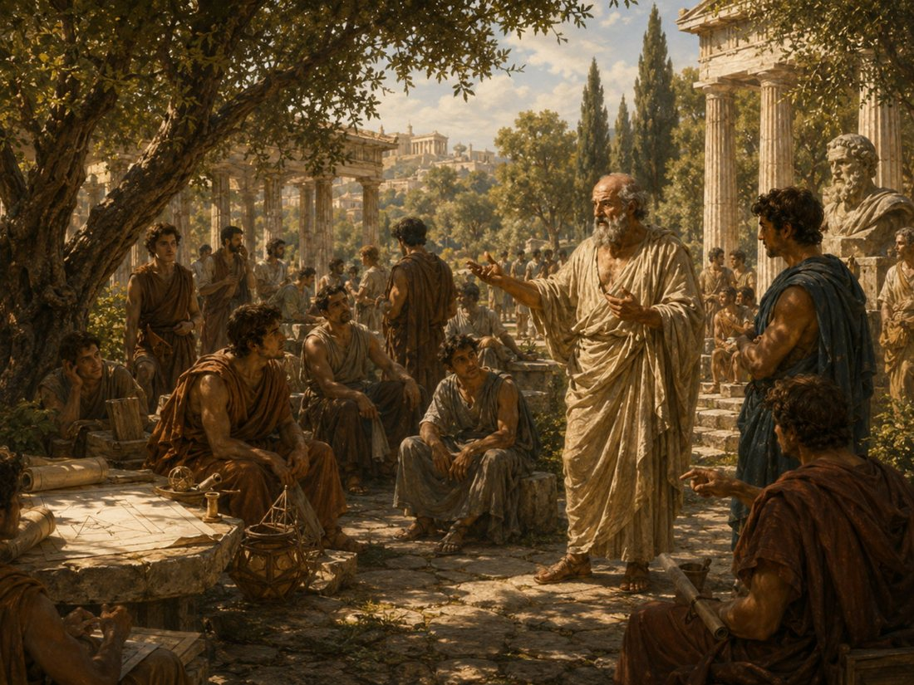
树荫、石桌、几何图形与成群年轻的面孔，让这片园林看起来不像庙，也不像官署，更像一处让思想慢慢长出来的地方。柏拉图在这里做的事，看上去与他的理念界同样是「建造」，可它的效果却出奇地活：一届又一届的学生在这里围坐、争辩、推敲，让本来可能随着老师死去的那件「活事」，反倒借着制度与空间，被保存了下来。若说理念界是他为真理造的天空，那么学园，便是他为真理造的土地。
这是人类历史上，第一所真正意义上的高等学府——一个专门用来研习、辩论、追求真理的地方。据说，学园的门楣上，刻着一行字：不懂几何者，不得入内。
为什么，偏偏是几何？
因为在柏拉图看来，几何，是把人的目光，从这个变动的感官世界，扭转向那个永恒理念界的、最好的训练。你画在沙地上的那个三角形，会被风吹散、被脚踩乱；可「三角形本身」那些性质——三个内角加起来等于两个直角——却永恒不变，无论你画得好不好、画在哪里。研习几何，就是在练习：把心从会朽的、具体的图形上移开，去把握那背后永恒的、纯粹的关系。这，正是通往理念界的预备操。
于是，学园成了柏拉图的殿堂，在人间的一座分号。他要在这里，年复一年地，把一批批年轻人的目光，从洞壁上的影子，扭转向洞外的阳光；要把老师那件在市场上、随谈随散的追问，变成一项有组织、可传承、代代相续的、永久的事业。
许多年后，一个十七八岁的北方青年走进学园。他来自马其顿边缘的斯塔吉拉，父亲做过宫廷医生。和许多学生不同，他对抽象的圆感兴趣，也对鱼鳃、鸟翼、植物叶脉同样感兴趣。他会长久观察一只动物，追问形式怎样就在这具身体里工作，而不是先把身体当成低等的影子。
柏拉图很快注意到他。有人说，这个青年读书极快，像「学园的头脑」；也有人嫌他问题太多，连老师的基本区分都不肯轻易接受。
他们的争论最初也许很小。柏拉图说，一匹具体的马之所以是马，因为它分有「马本身」。青年问：若把「马本身」放在另一个世界，它怎样使眼前这匹马长出骨骼、肌肉和奔跑的能力？若形式真正解释一件东西，它是否更应当就在这东西的生成与活动中？
柏拉图不会因为被问便恼怒。毕竟，他最敬爱的老师，正是靠这种不肯放过定义的方式，改变了他。学园能容纳这个青年二十年，说明柏拉图传下来的，不只有理念论，也有允许理念论被追问的空间。
这正是制度最珍贵的地方：一所学校若只能复制创办者，便只是思想的模具；若它能孕育出拆解创办者的人，它才真正成了知识出生的环境。亚里士多德不是柏拉图体系的失败品。他是学园这场长期互动，生出来的、最伟大的意外之一。
柏拉图为老师盖的房子，终于在自己的墙内，养大了一个准备拆墙的人。
而这所学园，后来做到的，远超柏拉图自己所能想象。它一代一代地办了下去，办了将近九百年——从柏拉图，一直办到许多个世纪之后，才在一道帝王的诏令下，关门。九百年里，多少王朝兴了又亡，多少城邦立了又灭，可那片园林里，追问，从未停歇。这，是人类为「追求真理」这件事，建起的第一座、也是延续最久的殿堂之一。苏格拉底那件在雅典市场上，本该随他一起死去的活事，就这样，借着这所学园的门，一届一届，重新，活了过来。
这件事，有一层深深的反讽，值得先按下不表，留到后面细看。表面上，柏拉图是在为一件「活的、会发生的事」，盖一座「永久的、不动的房子」——这，正是他一贯的手法：把活的，做成不朽的。可奇妙的是，这座房子，这所学园，后来竟真的，把老师那件活的追问，一代一代，活生生地，传了下去，传了近千年。它成了此后无数学问的母机。
原来，柏拉图这个人身上，有两个柏拉图。一个，是把真理冻成永恒理念的形而上学家；另一个，是为活的追问盖房子、让它得以一代代重新发生的、办学的人。这两个柏拉图，做的，其实是相反的事。而后一个柏拉图，比他自己也许都没料到的，要更忠于他的老师。
这个矛盾，在他做的另一件事上，暴露得更加彻底。那件事是：他，开始写字了。
学园的一天，常常从几何开始。清晨的地面还带着湿气，学生们用木棍画圆。圆总画得不圆，有人便说：正因为画不圆，才证明完美的圆在别处。另一个人反问：若我们从未见过完美的圆，又凭什么知道眼前这个不完美？争论很快从线条蔓延到知识，从知识蔓延到灵魂。
柏拉图有时坐在树下听，不急着裁决。他已经是名满希腊的老师，可学园最有生命的时候，恰恰不是他宣布答案的时候，而是学生彼此追问、把他的答案也拖进争论的时候。
午后，有人研究天体运行，有人讨论法律，有人练习辩论。数学家、政治家、医生和好奇的年轻人，在同一片园林里来来往往。学园不是一间只生产柏拉图主义的工坊。它更像一处环境：不同的人、问题和方法在这里相遇，一种新的知识，常常从原本不相干的两场谈话之间，突然生出来。
这所学校能够延续近千年，不是因为它把某一套答案密封保存，而是因为它建立了一种让追问反复发生的结构。老师会死，学生会老，具体的论点会被反驳；可只要还有人坐下来，愿意把一个词重新问清，苏格拉底式的那件事，就能换一副身体，继续进行。
柏拉图想给追问盖房子，本来有冻结它的危险。可一座真正有人居住的房子，会被居住者不断改变。新问题在墙上开窗，反对意见在地上挖门。学园之所以活，不是因为它永远保持柏拉图最初设计的样子，而是因为后来的人，总在里面，做出他没能预先画进蓝图的事。
制度在这里显示出两面：它可以把活的东西做成仪式，也可以为一次次新的发生，提供稳定的土壤。关键不在房子是否永久，而在门，是否还开着。
写下来的对话
老师一生，从不写字。而柏拉图，写了一辈子。
他是人类历史上最伟大的作家之一。可请注意他怎么写——这里头，藏着这个人身上，最深的一道裂缝，也藏着他对老师，最深的一份忠诚。
他从不写论文。他从不像后来的哲学家那样，端出一副架子，宣布「以下是我的体系，第一条，第二条」。他写的，几乎全是对话。
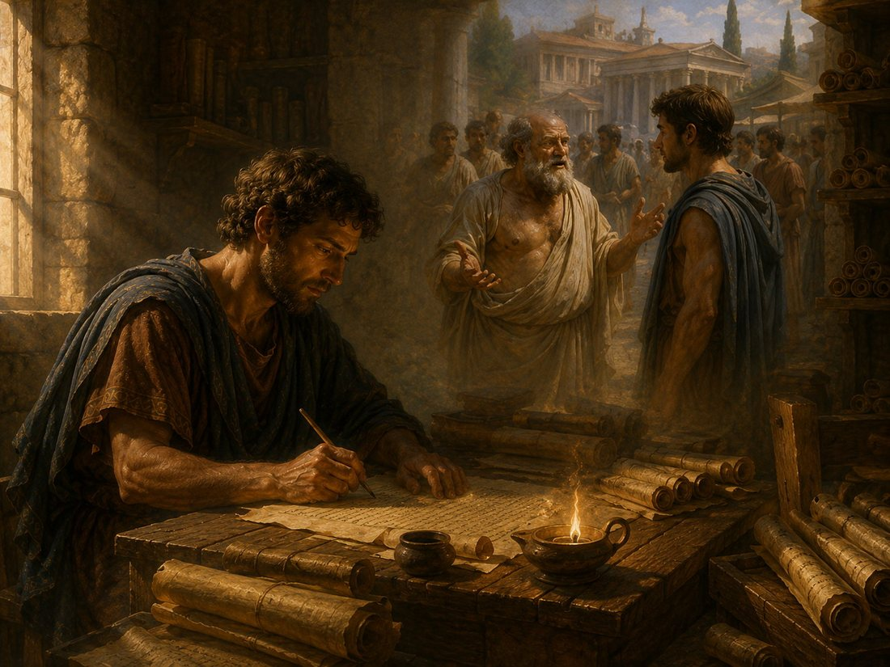
一个人坐在桌前写字，看起来安静得近乎无事发生；可在柏拉图这里，恰恰是写作，把死亡之后的苏格拉底重新唤了回来。纸上的墨痕一行行落下，身后的市场、柱廊与谈话也便一同在记忆里复活。于是出现了一个极妙的悖论：柏拉图最像「作家」的时刻，反倒比他最像「形而上学家」的时刻，更忠实于老师。因为理念把真理抬到天上，对话却仍把真理留在人与人之间。
在他的书里，苏格拉底活着。苏格拉底在雅典的街头、在酒会上、在牢房里，拉住一个又一个人，问他们问题，把他们自以为懂的东西，一层层问碎。那些对话，写得活灵活现：有性格，有脾气，有你来我往的机锋，有被问倒时的窘迫，有恍然大悟时的惊喜。许多篇对话，甚至没有结论——问到最后，苏格拉底和对方，一起承认「我们还是不知道」，然后散场。
有些对话写成以后，柏拉图会让学生分角色朗读。一个年轻人读苏格拉底，一个人读拉刻斯、普罗泰戈拉或阿尔喀比亚德。字一出口，纸上原本平静的句子，又有了迟疑、讥讽、恼怒和笑声。
同一句问话，读得温和，是邀请；读得尖锐，便像羞辱。学生们会争：老师当时究竟是什么语气？柏拉图也未必能给出唯一答案。文字保存了话，却把声音交给了后来的人。每一次朗读，苏格拉底都略有不同。
这不是保存失败，恰恰是活着的迹象。一个完全不允许变化的声音，只能被封在墓室里；能进入不同人的身体、在新的环境中获得新的重音，它才真正穿过时间。
柏拉图原想用文字抵抗流逝，文字却用另一种方式告诉他：传承不是复制。读者会成为新的参与者，会用自己的经验，改变问题落下的位置。对话录因此不是装着真理的容器，而是一台等待启动的装置。书合上时，它沉默；有人开口读第一句，互动便重新开始。
那个从不写字的人，正是借着最会变化的文字，获得了最长久的生命。
你看这有多奇怪。一个一心要把真理冻成永恒、供上高处的人，落到笔头上，却偏偏，把真理，写成了一件在两个活人之间、当场发生、有时甚至无果而终的事。
原来，柏拉图这个作家，凭着他天生的、戏剧家的直觉，做了一件和他那个形而上学家自己，正好相反的事。那个形而上学家，要把老师做的活事，冻成不动的理念；可这个作家，却用他的笔，把老师，一次又一次，从死亡里，重新召唤了回来——让他在纸上，永远地，活着，永远地，追问下去。
这，才是柏拉图真正留住老师的方式。不是靠那个冰冷的、永恒的理念界；是靠这些活蹦乱跳的、充满了人味的对话。他把老师的话，一字一句地，记下来（也添上去），让两千四百年后的我们，翻开书，还能听见那个矮胖丑陋的老头，在雅典的市场上，慢悠悠地，问出那句「请教您，什么是勇敢」。理念界里，没有苏格拉底的音容笑貌；对话录里，有。
于是我们看清了柏拉图身上，那道深深的裂缝：他的学说，把老师冻成了永恒不动的理念；他的文体，却把老师写成了永远活着的追问。他一手，为真理造了一座陵墓；另一手，又为老师，写了一部让他永远活下去的传记。做形而上学的柏拉图，杀死了老师那件活的事，把它做成了标本；做戏剧的柏拉图，却偷偷地，把那件活的事，藏进了对话的字缝里，让它，一代代，重新发生。
这个人，比他自己所宣扬的那套学说，要深得多，也活得多。他心里，其实一直住着两个声音：一个说，真理是永恒不动的，你去发现它；另一个，借着苏格拉底的口，一遍遍地问，一遍遍地当场发生。他这一生，就是这两个声音，从未止息的角力。
而这场角力，到他的晚年，会以一种谁也没料到的方式，摊上台面。
夜深以后，柏拉图常常独自伏案。蜡灯把他的影子投到墙上，卷轴上却是老师的声音。他写一句苏格拉底的问话，停下来，在心里听一遍：太急了，老师不会这样问；太漂亮了，老师不会为了句子好听，放过对方回答里的漏洞。于是他改。
写对话，不只是记忆，也是表演。柏拉图要安排谁先到场，谁迟到，谁酒醉，谁在关键处沉默；要让一个论证不仅正确，还带着性格和温度。正因为如此，他无法把自己完全藏在苏格拉底背后。老师说出的许多话，已经混入学生的思考；学生的答案，又借老师的口，获得了老师的威望。
这当然是改变。可若没有这种改变，我们也许什么都留不下。纯粹的原声早已随呼吸消散，写作只能在忠实与创造之间，搭一座不稳的桥。每一篇对话，都是柏拉图同死去老师的一次新互动：他问记忆，记忆不答；他便用自己的理解，替沉默补上一句。
有时，他把结尾写到一个漂亮的答案，忽然又划掉，让对话停在「我们仍不知道」。那一刻，作家压过了体系建造者。他知道，真正像苏格拉底的，不是把所有门都关上，而是让最后一扇门，仍留一道缝。
所以，读柏拉图不能只问：这句话究竟是苏格拉底说的，还是柏拉图说的？更要问：在这场由死者、记忆、作家和读者共同组成的谈话里，一个怎样的新苏格拉底，被一次次写了出来？
那个历史中的人已经死了。可文学中的人，每一次被阅读，都重新获得一个此刻。
哲人应当为王
在柏拉图所有的书里，最厚重、最恢弘的一部，是那部讲「正义」的大书——后世叫它《理想国》。
这部书，从一个和老师如出一辙的问题开始：什么是正义？可柏拉图不再满足于像老师那样，问到「我们不知道」就散场。他要给出一个答案，一个宏大到，要为整座城邦、整个人的灵魂，都立一张蓝图的答案。
他说：正义，无论在一个人的灵魂里，还是在一座城邦里，都是同一回事——各安其分，各司其职。
一个人的灵魂，有三个部分：理性、激情、欲望。当理性做主，激情辅佐它，欲望服从它，各守本分，这个人的灵魂，就是正义的、和谐的。同样，一座城邦，也该有三个等级：靠智慧治国的护卫者、靠勇气护城的辅助者、靠劳作供养全城的生产者。当这三者各安其分——智者治理，勇者护卫，众人生产，谁也不越俎代庖——这座城邦，就是正义的。
柏拉图还打过一个极美的比方。他说，人的灵魂，像一驾马车：车上，坐着一位驭手，那是理性；拉车的，是两匹马，一匹高贵、驯良、听话，那是激情；一匹粗野、桀骜、一见了地上的草料就想俯冲下去，那是欲望。驭手的本事，全在于，怎样勒住那匹狂躁的劣马，让两匹马齐头并进，把车，稳稳地，朝着高处，朝着那永恒的理念界，驾去。灵魂的正义，不是杀掉哪一匹马，而是让驭手、良马、劣马，各归其位，合成一驾能够上升的车。一个正义的人，一个正义的城邦，都是这样一驾，被理性稳稳驾驭着、朝着「善本身」上升的马车。
那么，这样一座正义的城邦，谁来治理？
柏拉图给出了他那句惊世骇俗、也贯穿他一生的答案：必须由哲学家来做王，或者，让王成为真正的哲学家；否则，城邦的祸患，永无宁日。
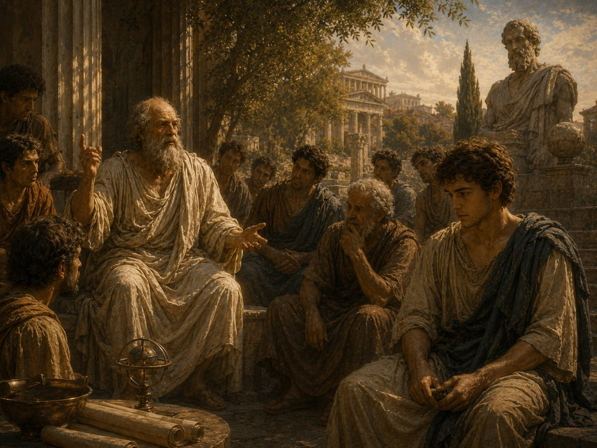
这一幕里最动人的，并不是老师的姿态有多庄严，而是围坐在他四周的那些年轻面孔，都像被同一个希望牵住了：假如真的有一种知识，足以分辨善与恶、真与伪、长远与眼前，那么让掌握这种知识的人来治理城邦，似乎是再自然不过的事。柏拉图写下「哲人应当为王」时，大概并不只是提出一个冷静的政治命题；他更像是在替死去的苏格拉底，寻找一个再也不会被愚民与权欲联手处死的世界。
为什么非得是哲学家？因为，只有哲学家，是那个爬出了洞穴、见过了「善本身」的人。只有他，见过了那个永恒的、正义的理念；也只有他，能照着那个理念，把人间的城邦，治理成它在尘世间的、尽量逼真的摹本。一个没见过「正义本身」的人来治国，就像一个没见过健康的人来行医，只能瞎摸。
柏拉图还打了个尖刻的比方，来讽刺他所痛恨的雅典民主。他说：设想一艘船，船主人又聋又瞎，不大懂航海。船上的水手们，个个争着要来掌舵，可谁也没学过航海术；他们把真正懂得看星象、辨风向的领航员，斥为一个成天望着天、不干正事的废物，然后，你争我夺地，把船开向触礁的方向。——那个被水手们鄙弃的领航员，就是哲学家；那艘乱哄哄、终将触礁的船，就是雅典。
请看清楚，柏拉图在这里做的，是什么。他为「正义的城邦」，画了一张永恒的、完美的蓝图——一个「理想国」，一座「正义本身」在人间的摹本。这个理想的城邦，和那个「美本身」「善本身」一样，是一个现成的、完美的、悬在理念界里的模型；而人间的政治，要做的，就是尽力去复制它，把这张天上的蓝图，一笔一笔，描到地上来。
这个念头——好的城邦，是一个现成的、完美的模型，等着被复制到现实里来——听上去，何等庄严，何等诱人。它给了一个刚从暴政与暴民里死里逃生的人，一个无比清晰的希望：只要照着那张完美的蓝图，把现实，一点点改造过去，人间，就能造出一个再也不会杀死苏格拉底的、正义的城邦。
柏拉图不只是想想而已。他真的相信这一点，信到，愿意亲自，去试一试。
他要去把那张天上的蓝图，描到一座真实的城邦里去。
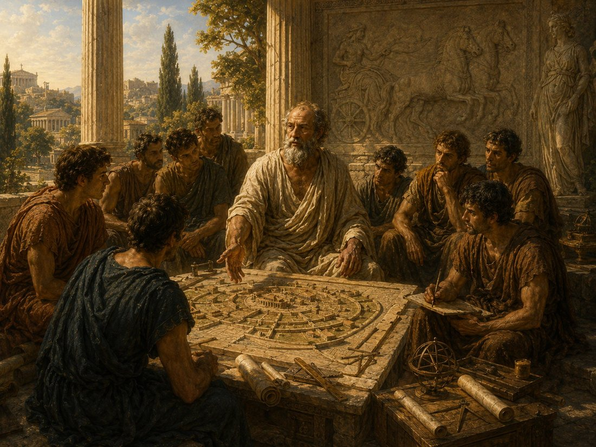
柏拉图心里那座「正义的城邦」，到这里已经不再只是想象，而像一张可以摊开、可以讲解、可以传授的工程图纸。看着这类图景，人很容易明白，为什么他后来会真的相信：现实的混乱，只是因为人还没有掌握正确的模型。可也正是在这种整齐里，隐伏着后来叙拉古失败的种子——活人、欲望、嫉妒、历史与土壤，并不会像图纸上的线条那样，老老实实地服从安排。
而那座城邦，即将，给他上一堂，他这辈子最惨痛、也最深刻的一课。
柏拉图并不是随口喊一句「让聪明人掌权」。他为哲人王设计了一条漫长得近乎残酷的教育道路：先用音乐整理情感，用体育训练身体，再学算术、几何、天文和和声；三十岁以后，才有资格接触辩证法；还要在军务和政务中经受多年考验，直到五十岁，才可能真正转身，看见善本身。
这样的统治者不能积累私产，不能把城邦当成家族产业。他甚至不应当渴望权力。正因为不想统治，才比那些争权的人更适合统治。这套构想里，有柏拉图对权力极深的警惕。他见过僭主，也见过民主中的煽动者；他想把权力交给一个被长期教育、被迫审察自己的人。
问题在于：谁来判断，谁真正见过善？谁来证明，一个自称哲学家的人，不只是更擅长用「真理」替自己的欲望化妆？当城邦按照一张唯一的蓝图安排每个人的位置，那些不愿被安排的人，又由谁来听见？
柏拉图害怕无知的多数杀死智者，于是把希望寄托在少数智者身上。可一旦少数人确信自己独占了「善本身」，他们手中的权力，会不会比未经审察的多数，更难被追问？
这道危险，在书里并不显眼，因为蓝图上的哲人王，已经被定义成善。但现实里的人，从来不会带着定义出生。他会虚荣，会恐惧，会在赞美中改变，也会把哲学当成王冠上的一颗宝石。
柏拉图还没有遇见小狄奥尼修斯。等他遇见时，他将第一次看见：从「哲人应当为王」，到「这个具体的王能否成为哲人」，中间隔着的，不是一堂课，不是一篇书，而是一整片无法被理念预先抹平的人性。
叙拉古
机会，来自西西里岛上的叙拉古。
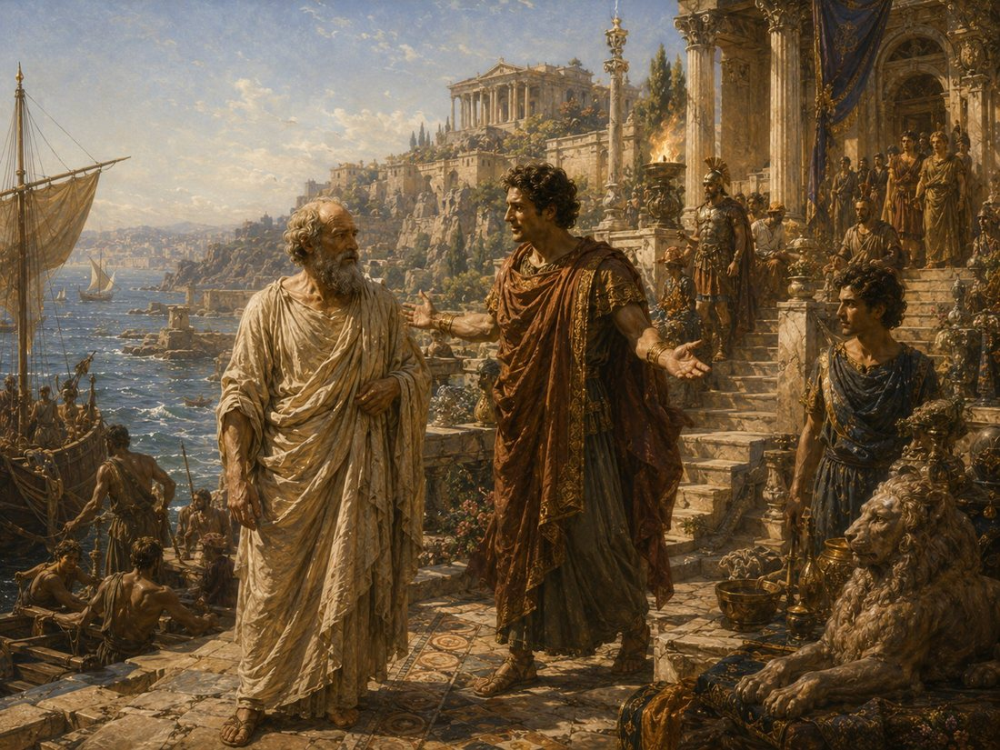
海风、台阶、火炬、海船和贵族的热情，使这一切看起来几乎像命运的安排。年老的哲学家站在海岸边，听着年轻人热切地描述未来，或许当真以为多年书写、推演与教学，终于等来了落地的时刻。理想从纸上走向王宫的那一瞬，总带着一种迷人的光泽：它让人误以为，只要门已经打开，真理便会顺势走进去，坐上王座。
叙拉古有个显赫的年轻贵族，叫狄翁，是柏拉图的挚友，也是他理念的信徒。狄翁的姐夫，是叙拉古的僭主老狄奥尼修斯——一个多疑而残暴的统治者。
柏拉图第一次去叙拉古，是许多年前。那一趟，凶险万分。他在老僭主的宫廷里，直言不讳地大谈：僭主的生活并不幸福，唯有正义的人才真正快乐——这些话，把老僭主惹恼了。据说，柏拉图差点因此送命；后来虽保住了性命，却在归途中，被人当作奴隶，公开发卖——幸得一位相识的朋友，认出了他，把他赎了下来，才免于终身为奴。这位以「哲人应当为王」为毕生信念的哲学家，第一次踏足现实的宫廷，换来的，是几乎被卖身为奴的下场。
港口从来最能显露现实的粗糙。学说、荣耀、门第、名声，在绑缚与叫卖面前，全都被压缩成了一个人的脆弱处境。若说叙拉古曾让柏拉图看见理想照进现实的可能，那么这次发卖，便像现实回敬给理想的第一记耳光：城邦中的权力运作，不会因为你掌握了「正义本身」就对你额外温柔；它甚至更可能，把你当作一个可被处置的对象。
可柏拉图没有死心。多年后，老僭主死了，他的儿子小狄奥尼修斯继了位。狄翁大喜过望，一封接一封地写信给柏拉图：机会来了！这个年轻的新君，还没被权力彻底腐蚀，若能得您亲自调教，让他成为一个真正的哲学家、一个哲人王，我们就能把您书里那个「理想国」，在叙拉古，真真切切地，建立起来！
这，是柏拉图一生的梦。他书里那个哲人王，那个照着「正义本身」治国的完美君主，眼看，就要从纸上，走进现实了。已经年过六旬的柏拉图，明知前路凶险，还是动身了。他放下学园，再一次，渡海去了叙拉古。他要亲手，把那张悬在理念界里的、完美城邦的蓝图，描到叙拉古这块真实的土地上。
他要让「哲人应当为王」这句话，不再只是一句书里的空话，而成为一件，活生生的事实。
那时的他，满怀希望。他大概以为，最难的部分，是想清楚「正义的城邦」应该是什么样子——而这一步，他早已在书里，想得清清楚楚了。剩下的，无非是照着这张完美的蓝图，把现实，捏成它的样子。
他还不知道，最难的，恰恰是这剩下的一步。他就要撞上一堵墙——一堵，他那座辉煌的殿堂里，从来没有为它，留过位置的墙。
初到叙拉古时，宫廷给了柏拉图最隆重的欢迎。年轻的僭主穿着华贵的紫袍，当众称他为希腊最伟大的哲学家，命人把最好的房间、最精致的器皿、最聪明的侍从，全都送到他身边。宴席上，众人争相谈论灵魂和善，仿佛整座宫殿一夜之间，都成了学园。
柏拉图却很快发现，他们爱的是哲学的名声，不是哲学的工作。第二天，他让小狄奥尼修斯从几何学起。年轻君主听了片刻，便问：我已经统治一座大城，难道还要像学童一样，从三角形学起？有没有更快的路，直接教我怎样成为哲人王？
柏拉图大概会回答：没有王者的捷径。一个人若连自己的欲望都不能治理，便没有资格治理城邦。可这句话在学园里，可以引来长久的讨论；在宫廷里，却会被听成冒犯。
狄翁站在一旁，焦急地替双方解释。他相信老师，也相信姐夫的儿子尚可改变。正是这份相信，把三个人系在同一场危险的实验里：哲学家相信教育，朋友相信机会，君主相信自己可以不付代价地获得智慧。
最初几天，宫里甚至流行起画几何图。贵族们在地上描圆，把哲学当作新风尚。可潮流来得快，退得也快。真正的学习要求日复一日地承认无知，要求一个掌握生杀大权的人，忍受被问题问到答不上来。对苏格拉底来说，这是灵魂出生的入口；对僭主来说，却像权威被一点点剥光。
柏拉图带去的是助产术，宫廷期待的却是装饰术。错位，从第一堂课，便已经开始。
泥沼
那堵墙，叫现实。
小狄奥尼修斯，这个被寄予了「哲人王」厚望的年轻君主，让柏拉图彻底看清了：一个人，不是你想把他捏成哲学家，他就能成为哲学家的。
这个年轻人，喜欢的，是「宫里养着一位天下闻名的大哲学家」这份体面。他把哲学，当成一件时髦的装饰，一件可以拿来向宾客炫耀的珍玩。他愿意听柏拉图高谈阔论，愿意在酒席上，附庸风雅地，聊几句灵魂与理念。可一旦要他真正下功夫——去啃那些枯燥艰深的几何，去日复一日地约束自己的欲望，去脱胎换骨地，把自己修炼成一个正义的人——他就露了怯，退了缩。他要的是哲学的光环，不是哲学的苦役。
更糟的是宫廷里的倾轧。小狄奥尼修斯，很快对功高望重的狄翁，起了猜忌。他寻了个由头，把狄翁流放出境，还抄没了他的家产。柏拉图，一下子成了风箱里的老鼠：他既是狄翁的挚友，又是这位善变君主名义上的座上宾，处境极其凶险。有那么一阵，他实际上，被半软禁在了叙拉古，动弹不得，性命再一次，悬于一线。最后，还是几经周折，托了外邦势力的斡旋，这位年迈的哲学家，才总算，从那片泥沼里，脱身而出，活着回到了雅典。
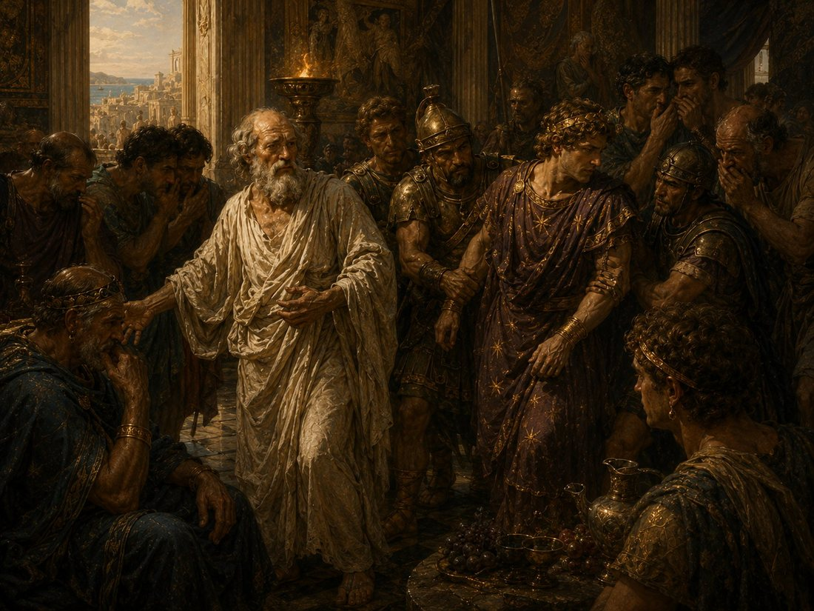
这已经不是讲理能解决的局面了。宫廷里的每一道目光都可能带着盘算，每一句亲热的招呼背后都可能藏着防备。柏拉图原本想教化一个君主，结果自己却被卷进了关系、嫉恨、流放、试探和软禁的旋涡里。所谓「泥沼」，并不只是局势危险，更在于它会把任何高处的蓝图，一点点拖进人的私欲、恐惧与权术的深处，逼人承认：现实不是一张等着誊写的白纸。
而叙拉古，就此陷入了长久的血腥混乱。被流放的狄翁，后来率军打回叙拉古，一度夺了权，却又很快，被自己人刺杀。柏拉图梦想中那座「正义的城邦」，非但没能建成，反倒把这座城邦，拖进了更深的动荡与杀戮。
这是柏拉图一生，最惨痛的一次失败。他倾注了半生心血、三次渡海、几乎搭上性命去追求的那个梦——把书里那个完美的「理想国」，在现实里，建立起来——彻底地，破产了。
船身在海浪上起伏，四周再没有宫廷里那些嘈杂的人声，这时人才最容易被自己的念头追上。柏拉图也许正是在这样的归途中，第一次不得不长久地凝视一个可怕的问题：倘若失败并不只是「执行不力」，而是理想与现实的关系，从根上就被自己想错了呢？那天上的模型若不能直接盖到地上，那么真正的好城邦，究竟该怎样长出来？海面没有回答，可问题已经留了下来。
一个年过古稀的老人，拖着一身的疲惫和惊惧，从那片血腥的泥沼里，回到雅典。他一定，在归途的船上，望着翻涌的海水，问过自己许多遍：错在哪里？是我识人不明，托付错了君主？是狄翁太急，我太天真？可这些，都只是表面。他大概隐隐地，触到了一个更深、也更让他不安的东西——一个他一辈子建起的那座殿堂里，从来没有为它留过位置的东西：也许，问题不在于「这一次」没搞成，而在于，「把一张完美的蓝图，直接盖到活人身上」这件事本身，从根上，就行不通。也许，好的城邦，压根就不是一件，能从天上「照搬」下来的东西。这个念头，太危险了，危险到，会动摇他毕生的信念；所以他多半，只是让它，在心底，一闪而过，没敢，真正地，接住它。可它的影子，已经悄悄地，落进了他此后的文字里。
而那只两千四百年后的眼睛，静静地看着这片泥沼，缓缓地说：柏拉图，你撞上的这堵墙，不是偶然。它，恰恰立在你那座殿堂，最深的裂缝上。
你想做的，是把那个悬在理念界里的、完美的「正义城邦」的蓝图，原封不动地，复制到叙拉古这块真实的土地上来。你以为，最难的部分，是在书里想清楚「正义的城邦长什么样」——那一步，你早完成了；剩下的，无非是照着这张完美的图纸，把现实，捏成它的形状。
可现实，不是一块任你照图捏塑的、被动的泥。叙拉古这块土地，有它自己的东西：有小狄奥尼修斯的虚荣与怯懦，有宫廷里盘根错节的猜忌与私欲，有几百年积下的仇怨与派系，有千千万万普通人自己的活法。这一切，是这块土地本有的、活的土壤。你带着一张天上的完美蓝图，硬要往这块土壤上一盖——土壤，把它，顶了回来。
因为，一个正义的城邦，和这世上一切真实的东西一样，从来不是一个现成的、可以从别处照搬过来的模型。它必须，从这块土壤里，长出来——从这块土地上一个个活人的、真实的差异、冲突、需要、博弈里，一点一点，当场地，生长、磨合、凝结出一个，恰好适合这块土壤的秩序来。它不先在于这块土壤，它只能在这块土壤里，发生。你没法把它，从天上，描下来。
你梦里那座城邦，之所以在叙拉古盖不起来，不是因为叙拉古人太坏，也不是因为你不够努力。是因为，你从一开始，就搞错了「好城邦」是怎么来的：它不是被发现、被复制的，它是被发生、被生长的。你想把一朵花，从天上，钉到地里；可花，只能，从土里，长出来。
叙拉古这片泥沼，用最惨痛的方式，把柏拉图那座殿堂最深的错，从抽象的思辨里，逼进了血淋淋的现实：把一个永恒现成的「本身」，硬盖到活的土壤上——不行。土壤，会把它，顶回来。
狄翁被流放后，宫廷里的空气变了。曾经围着柏拉图请教的人，开始避开他的目光；走廊里有人压低声音，说他想借哲学控制君主。小狄奥尼修斯一面仍称他为贵客，一面派人留意他的书信和出入。礼遇与软禁，披着同一件外衣。
柏拉图或许曾在宫墙上远望港口。船只就在海面上，可他不能自由登船。那一刻，「自由本身」若只是理念界里的一个永恒对象，显得何等无力。真正的自由，是守门人是否放行，是一封信能否送出，是某个掌权者此刻的猜疑，会不会改变。
他也看见，小狄奥尼修斯并非一个简单的「坏人」。这个年轻君主怕失去王位，怕狄翁功高盖主，怕老师更尊敬别人，怕宫廷笑他不懂哲学。恐惧、虚荣、孤独和权力，缠在一起，组成了一个无法用「理性统治欲望」四个字轻易拆开的生命。
现实之所以像泥沼，不是它全无结构，而是结构太多：亲族、军队、财富、旧怨、海上盟友、民众的饥饿、君主的睡眠。任何一个动作，都会牵动别处。柏拉图带来的蓝图，只画了理性、激情与欲望的三分，却没有画进这些具体的绳结。
离开叙拉古的船终于起航时，他回头看见宫殿在海岸上越来越小。那座他曾想改造成理想国的城，重新变成一团遥远的石头。失败没有自动给他答案。它只把一个问题放到他面前：若秩序不能从外面盖上去，那么哲学该怎样进入现实，而不把现实当成无声的材料？
这是他几乎触到、却没有完全接住的问题。可从此以后，他再也不能像从前那样，毫无裂缝地相信，天上的图纸，只等一双足够坚定的手，便能在人间复制。
柏拉图带着一身的疲惫和伤痛，回到了学园。他老了。可就在他的暮年，他做了一件，比叙拉古更让人震动的事——他掉转刀锋，对准了，他自己那座殿堂，最中心的那根柱子。
巴门尼德的诘难
回到雅典的柏拉图，已是垂暮之年。按说，一个人到了这个岁数，守着自己一生建起的辉煌体系，含饴弄孙，安享盛名，也就够了。
可柏拉图，做了一件几乎没有哪个思想家，肯对自己做的事。他写了一篇对话——在那篇对话里，他让人，把他自己的「理念论」，从头到尾，狠狠地，批驳了一遍。而且，批得极狠，狠到，他自己，都答不上来。
在那篇对话里，出场的，是一个年轻的苏格拉底——柏拉图让年轻的老师，兴致勃勃地，端出那套「理念论」：有一个「美本身」「大本身」，永恒地待在理念界，具体的东西，靠「分有」它们，才成其为美的、大的。而坐在对面的，是一位德高望重的老前辈，巴门尼德。这位老人，慈祥却毫不留情地，一刀一刀，把这套理论，解剖开来。
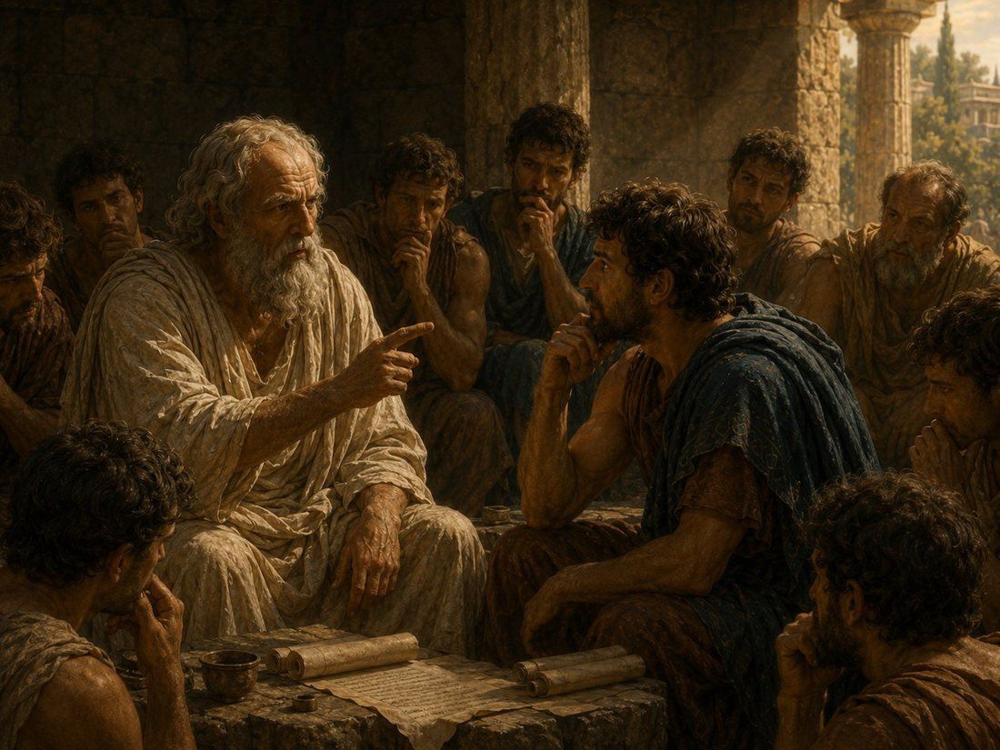
思想史上真正可敬的时刻，往往不是建造，而是自我拆解。这里，年长者的手指像一把刀，一问接着一问，把「本身」「分有」「先在」这些看似牢靠的词，一层层挑开。更震撼的是，柏拉图并没有在最后替自己圆场。他让裂缝裸露，让年轻的苏格拉底无言，让追问本身重新占了上风。一个体系能壮丽，许多思想家都做得到；能在晚年亲手暴露它的致命漏洞，却并不是人人都肯。
他问：你说，许多「大的东西」，都分有同一个「大本身」，才成其为大的。可你回头看看——这个「大本身」，和那许多「大的东西」，它们不也有一个共同点吗？它们不也都「大」吗？那么，按你的逻辑，要解释它们这个共同的「大」，岂不是，还得在它们之上，再设一个更高的「大本身之本身」？而这个更高的「大本身」，和下面那一层，又有了共同点，于是又得再设一个更更高的……如此下去，永无止境。你为了解释一个「大」，得设出无穷多个「大本身」来。（后世管这，叫「第三个人」的难题。）
他又问：你说具体的东西「分有」理念。那我问你，一个东西，是分有了整个理念，还是只分有了理念的一部分？若是分有了整个——那同一个「美本身」，岂不是同时，整个地，待在了千千万万件美的东西里，自己跟自己，分了家？若是只分有了一部分——那「美本身」，岂不是被切成了碎片，不再是那个完整、纯粹的「美本身」了？两条路，都走不通。
他还指出：你把理念，说成一个和我们这个世界，彻底隔开的、独立自足的永恒之物。可它若真和我们的世界，隔得那样彻底，那我们，又凭什么，能认识它？一个和我们毫不相干的东西，我们根本够不着。你越是把它，供得高、隔得远、说得纯，它，就离我们越远，越不可知。
这一连串的诘难，招招致命，全都扎在「理念论」的心脏上。而最惊人的是：坐在对面的那个年轻的苏格拉底，被问得，答不上来。柏拉图，让自己笔下的老师，在自己一手建起的殿堂面前，哑口无言。
而柏拉图，写完了这场解剖，没有在后面，补上一个漂亮的解围。他把这些裂缝，就那样，敞着，留在了那里，没有弥合。
想想这需要多大的诚实，多大的勇气。一个人，倾其一生，建起了一座举世无双的思想殿堂，赢得了满世界的追随与敬仰；到了暮年，他大可以，守着它，含笑受享。可他偏偏，亲手，拿起那把追问的刀，一刀一刀，捅向自己殿堂最中心的那根柱子，捅出一个又一个，他自己也补不上的窟窿——然后，他不遮，不掩，不狡辩，就让那些窟窿，血淋淋地，敞在世人面前。古往今来，肯这样对自己下手的思想家，屈指可数。绝大多数人，一旦建成了体系，便本能地，转而去维护它，去替它的每一道裂缝，找补、圆场、辩护。而柏拉图，在生命将尽的时候，选择了忠于追问，而非忠于他自己的答案。这一选择，比他建起的那整座殿堂，更配得上「哲学」这两个字——因为它证明，到最后，他心里活着的，不是那个供着理念的形而上学家，而依然是，那个在雅典市场上，把一切自以为懂的东西、连自己的，都敢一层层问碎的，苏格拉底的学生。
请站定，看清这一幕的份量。
这，是那件「活的事」——那个被冻进理念界的、老师的追问——在暮年的柏拉图心里，重新，苏醒了。老师一生做的，就是「把一切自以为懂的东西，一层层问碎」；而现在，暮年的柏拉图，把这把老师的、追问的刀，掉转过来，对准了他自己，一生所信、一手所建的，那座最辉煌的殿堂。他让老师那把活的刀，在他自己的理念论上，划出了一道又一道，深深的裂口。
他到了。他几乎就要到了。他清清楚楚地看见了：那个被他供得高高的、独立永恒的「本身」，一旦真被当成一个和世界隔绝的、现成的东西，就会陷入无穷的倒退，就会没法「分有」进这个世界，就会变得根本不可知。这，正是那个「脱离了纠缠土壤的纯结构」，露出的，自身的破绽。他离那个答案，只差最后一步了——只差，把那个「本身」，从「一个高悬别处、独立永恒的东西」，重新看成「一个在具体的追问与相遇里，当场显露、当场发生的东西」。只要再迈这一步，他就能从他自己挖的坑里，爬出来。
可他，没能迈出这一步。他看见了裂缝，却没能，把那根柱子，整个拆掉，换成活的。他把裂缝，敞在那里，就那样，留给了后人。他，差了那最后一口气。
两千多年后，会有一个叫黑格尔的人，写下「万物皆在其发生史中」，离「发生」近在咫尺，却终究，把河，冻成了终点的冰，也差了那口气；会有一个叫尼采的人，喊出永不停歇的「超越」，却把它，供成了高峰上的雕像，也差了那口气。他们，全都栽在同一道坎前——离「发生」只有一步，却迈不过去。
可你要知道：他们迈不过去的那道坎，正是眼前这位老人，两千年前，第一个，走到跟前的。而且——这位老人，比他们所有人，都更了不起一点。因为，他是唯一一个，肯把追问的刀，狠狠地，捅进自己心脏的人。黑格尔和尼采，多半在维护自己的体系；而柏拉图，在垂暮之年，亲手，把自己的殿堂，捅了一个再没能补上的窟窿。
到死，他都还是，苏格拉底的学生。
写《巴门尼德》的夜里，柏拉图也许几次停笔。窗外的学园已经安静，桌上摊着他自己年轻时最坚定的信念。一个思想家要替对手写出反驳，并不难；难的是把反驳写到强过自己的辩护，写到再也不能假装没有听见。
他完全可以让巴门尼德问得稍弱一点，让年轻的苏格拉底在关键处说出一个漂亮答案。可他没有。他像当年的老师那样，对自己下手：这里的「分有」究竟是什么意思？那里为什么不会无穷倒退？若理念与世界彻底分离，认识如何可能？
每写出一个问题，他一生建造的殿堂便响一下。不是外敌攻城，是地基自己发声。
也许在某个停顿里，他又听见了苏格拉底。不是神秘的亡灵，只是记忆里那个熟悉的语气：柏拉图，你说你懂理念。那么，理念是什么？
年轻时，他烧掉剧本，是因为老师让他不再满足于漂亮的句子。如今，他又必须问自己：理念论，会不会也是一部过于漂亮的悲剧？它给老师安排了不死的结局，给真理安排了永恒的住所，可这个结局，是不是因为他太需要它，而不是因为问题真的只允许这个答案？
能够这样怀疑，说明苏格拉底并没有被他完全冻住。老师那件活的事，越过理念界的高墙，又回来问他。一个体系会老，追问却能在体系内部，重新出生。
柏拉图没有拆掉整座殿堂。他也许已经没有时间，也没有另一套语言，去完成那一步。但他在墙上留下了裂缝。后人若愿意，不必只在裂缝前赞叹他的诚实；还可以顺着那道缝，看见外面的土壤，看见「本身」也许从来不是高悬别处，而是在一次次具体的关系里，才获得存在的形状。
造物主
暮年的柏拉图，还写下过一部奇书，讲的是：这整个宇宙，是怎么来的。
他说：这个我们身处其中的、井然有序的宇宙，是被一位神圣的工匠，造出来的。后世管这位工匠，叫「造物主」。
这幅图景美得几乎让人忘了它的锋利含义：连造世界这样的事，在柏拉图这里，也不是「创造出前所未有之物」，而是按照更高处的理念，将秩序复制进混沌。造物主因此不像一位真正冒险的创造者，倒更像一位最伟大的摹写者。他仰望的是范本，落手的是临摹。于是整个宇宙都被纳入了同一种逻辑：高处的东西才真实，地上的一切，不过是成功或失败的复写。
可请注意，柏拉图笔下这位造物主，是怎么造世界的。
他不是凭空，从自己心里，想出一个新世界来。他造世界的时候，眼睛，始终盯着别处——盯着那个永恒的理念界。他把理念界里那些完美的、永恒的「本身」，当作蓝图、当作范本，然后，尽力地，把它们，复制到这团混沌的质料上来。他照着「理念界里那个完美的圆」，在质料里，造出天体的运行；照着「理念界里那些完美的形式」，捏出万物的形状。整个宇宙，是那位工匠，照着一份永恒的图纸，临摹出来的一件——摹本。
你看，柏拉图把他那套「复制」的逻辑，贯彻到了极致——极致到，连「宇宙的诞生」，都被他，说成了一场「复制」。
哪怕是造世界这样一件，听上去最像「无中生有、全新发生」的事，在柏拉图这里，也不是真的「发生」。造物主，不是一个创造者，他是一个临摹者。他没有生出任何新东西，他只是，把那些早已永恒存在着的「本身」，照抄了一遍，抄到了质料上。这个宇宙里的一切，归根结底，都不是新生的，都是那份永恒图纸的、一份摹本。
那只眼睛，看着这位埋头临摹的造物主，轻轻地说：柏拉图啊，到了这里，你那座殿堂的地基，露到了最底。你连「创造」，都不肯让它，是真的创造。在你这里，最高的那位神，也不过是个照着永恒范本描红的匠人。天底下，没有一件东西，是真正被生出来的；一切，哪怕是这整个宇宙，也都只是，对那早已在那里的、永恒之物的，一次临摹。
「诞生」这件事，在柏拉图的世界里，被取消得，如此彻底。从一个小奴隶学几何，到整个宇宙的造成——没有一样，是新生的；全都是，对永恒的、现成的、先在之物的，回忆，与复制。
而这，恰恰，为这整个故事最后的那个惊雷，攒足了力。因为，一套把「诞生」取消得如此彻底、如此干净的学说，接下来，就要面对，那个它自己，最回答不了的问题了。
《蒂迈欧》里的宇宙，并不是一团冷冰冰的机械。柏拉图把它想成一个有灵魂的、完整的生命体。天体按照圆周运行，世界灵魂把同一与差异编织在一起，时间则成为永恒的、会运动的影像。这幅构想宏大、精密，像把几何、神话与祈祷，放进同一只熔炉。
夜里仰望星空，很难不被它吸引。无数星辰各守轨道，仿佛有一个理性的秩序，真的在混沌之上，稳稳地托住世界。柏拉图要说：宇宙之所以美，因为造物主是善的；善不嫉妒，所以愿意让混乱尽可能像完美。
可请再看一眼那团被造的质料。它并不是完全听话的。柏拉图自己也承认，造物主只能「尽可能」把它整理好。质料有必然性，有阻力，范本进入它时，必须妥协。宇宙因此不是一张理念图纸的无损复制，而是范本与材料、秩序与阻力，在一次具体的制作中，达成的结果。
这道缝，几乎又把「发生」放了回来。若材料会抵抗，工匠就不能只是临摹；他必须回应、调整、在限制中创造。最终出现的世界，也不会在制作以前，以全部细节，完整地躺在范本里。它在制作的过程中，才成为这一整个宇宙。
柏拉图把目光始终放在范本，因而低估了材料的贡献。可真正的创造，从来不是一方把形状压到另一方身上。石头的纹理会改变雕刻，语言的限制会改变思想，学生的回答会改变老师下一句问题。创造者也在互动中，被自己所造之物，反过来改变。
若把这一点推到底，造物主便不再是抄写员。宇宙也不再只是理念的影子。它是一场前所未有的、不可逆的发生——而这，正是柏拉图最不愿让世界拥有、却又在自己的神话深处，悄悄放进来的东西。
笔还握在手里
柏拉图，活到了将近八十岁。
暮年的他，写下了他一生最后、也最厚的一部大书——一部谈「法律」的书。这部书，和他年轻时那部意气风发的《理想国》，判若两人。
《理想国》里，他要的是哲人王，是照着完美蓝图，一举建成的、理想的城邦。而这部谈法律的暮年之作里，那个高高在上的哲人王，不见了。取而代之的，是密密麻麻、极其琐碎、极其务实的一条条法律：怎么分田，怎么断案，怎么办婚丧，怎么祭祀，怎么教育孩子……他不再幻想一步登天，而是退而求其次，为一座「凡人能真正建起来」的、尽量好的城邦，一砖一瓦地，立法。
许多人从这部暮年之作里，读出了一丝，柏拉图自己也许都不肯明说的、悄悄的让步：叙拉古那片泥沼，到底，教会了他一点什么。他大概，隐隐地，认了——你没法把完美的蓝图，直接描到地上；你只能，俯下身来，跟这块土地上真实的、不完美的人性，一寸一寸地，磨合、迁就、周旋。他仍相信理念界里，有那个完美的「正义本身」；可他不得不承认，在人间，你只能，退而求其次。
关于他的死，后世有两种说法。一种说，他是在一场婚礼的宴席上，安然睡去，就此长眠。另一种说，他死的时候，正伏在案前——笔，还握在手里。
很少有一种结尾，能比这更像柏拉图本人。窗外是夜色中的城邦，桌上是卷帙与未尽的文字，灯火把他脸上的疲惫和专注一齐照亮。即使理念界已经建立，学园已经运行，巨著已经写成，他也并未真正从思想的工作里退场。到了生命的尽头，他仍在修订、补缀、折返、让步，试图给现实留出更能落脚的位置。笔还在手里，意味着问题也还在手里。
无论哪一种，都像极了他这个人。他这一生，从那个烧掉剧本、追随老师的少年，到暮年那个还在为法律条文字斟句酌的老人——他，一直在写。他用一辈子的笔，做了一件天大的事：他把那个从不写字的老师，写成了永恒。
那么，这位写了一辈子的老人，最后，究竟，给这个世界，留下了什么？
他留下的，是两样东西——两样，彼此拉扯、至死也没能和解的东西。
一样，是他的学说：那两个世界，那个永恒的理念界，那道回忆的阶梯，那座光暗分明的洞穴。这套学说，把老师那件活的、当场发生的追问，冻成了永恒不动的、等待被发现的理念；它为整个西方，浇铸了一个模子——真理，是永恒现成、别处高悬的；要够着它，你就得掉转头，背对这个变动不居的现实，向上、向外，去发现。此后两千四百年里，从康德，到黑格尔，到尼采，一个接一个最伟大的头脑，都将住在这个模子里，向着「别处」，苦苦寻找——却始终，没能回过头，看一眼自己脚下，这片一切意义都在其中当场发生的、活的土壤。
另一样，是他的文体，与他的学园：那些让苏格拉底永远活着、永远追问的对话录，那所让追问一代代重新发生、绵延了近千年的学园。这一样，恰恰和他那套学说，做着相反的事——它没有冻结什么，它让那件活的追问，一次次，重新活了过来。
一手冻结，一手，让它重新发生。这个人，一辈子，就活在他自己这两只手的角力里。
而那个即将裂开这只模子的第一道缝，此刻，正在他自己的学园里，悄悄地，酝酿着。
在学园里，有一个从北方来的、极其聪慧的年轻人。他在学园里，待了整整二十年，从少年，待到中年。他敬爱柏拉图，可他，越来越不能同意老师那个「两个世界」。他日后，会用他的余生，做一件事：把那个被柏拉图，高高供上理念界的「本身」，一点一点，重新，请回到地上来。他会固执地说：一个东西的「形式」，根本不在什么遥远的、另一个世界里——它，就在这个东西自己身上。花的「美」，不在天上的「美本身」里，就在这一朵，活生生的花里。
他会说出那句后来传诵千年的话：吾爱吾师，吾更爱真理。
这句话常被说得像一把斩断师生关系的剑。其实，真正的「更爱真理」，未必意味着少爱老师。恰恰因为老师教会你不向任何未经审察的答案低头，你才不能为了表示忠诚，假装同意。
我们可以想象，某次争论后，年轻的亚里士多德陪柏拉图走回住处。老人问：你为何总要把形式拉回具体事物？青年说，因为离开事物的形式，像离开身体的灵魂，我不知道它怎样还能解释生命。柏拉图沉默了一会儿，说：那你就继续找。只是别太早以为，你已经找到了。
这一句若真的说过，便像苏格拉底。好的老师不要求学生住进自己的答案，而要求他把追问带得更远。柏拉图一生最深的忠诚，也许并不在他把老师写成永恒，而在他允许另一个学生，将自己也当成需要被超越的起点。
等柏拉图死去，学园会面临继承、争论和分岔。亚里士多德最终离开，建立自己的道路。形式从天上回到事物，知识从回忆转向观察，生物、伦理和政治都获得新的语言。可那把最初的刀仍是同一把：你说「形式」，那么，形式究竟是什么？
思想的传承，从来不是一件东西原封不动地交出去。老师的概念进入学生的经验，被反对、改造、重新组合，才成为下一代的知识。若完全不变，传下去的只是遗物；正因为改变，它才活。
柏拉图没能让苏格拉底以原样永恒。亚里士多德也没有让柏拉图原样延续。可正是在这些不忠于原样的忠诚中，哲学才没有成为一座封死的陵墓。
这个年轻人，叫亚里士多德。他将成为，第一个，动手拆解柏拉图那只模子的人。他要花一辈子，把「本身」，从天上，接回地上。而那，又是另一个，漫长的故事了。
柏拉图死了。笔，还握在他手里。他身后，留下了一座冻结了真理的、辉煌的殿堂，和一场，永不止息的、活的追问。这两样东西，将一同，被交到后世的手里——而它们之间，那道至死没能和解的裂缝，将成为此后整个西方思想，最深、也最富生机的一根引线。
学园里那个来自北方的年轻人，曾同老师争论过许多次。柏拉图说，形式独立于具体事物而存在；年轻人说，若把形式从事物里抽走，我们反而解释不了这一个东西为什么成为它自己。争论有时很尖锐，旁人以为师生会因此决裂。可第二天，他们仍在同一条廊下散步。
真正的师生关系，并不以永远同意为忠诚。苏格拉底之所以成为柏拉图的老师，不是因为给了他一套必须守住的答案，而是因为教会他，对最敬爱的人，也可以继续问。柏拉图晚年能容忍亚里士多德的反对，或许正是他把老师最深的一样东西，传了下去。
《法律》写到后来，他的手已经不稳。年轻时，他谈善本身、哲人王和灵魂上升，句子像石阶一样朝高处铺开；暮年，他却一条条讨论土地怎样分配、官员如何轮换、饮酒应受什么限制。有人说这是退步。也可以说，这是一个被现实教育过的人，终于愿意俯下身，承认好秩序必须同具体的人、习惯和条件，一寸寸磨合。
据说，他死在婚宴，也据说，他死在案前。两种说法都无法证实。可那支仍握在手里的笔，比死法更重要。它说明他没有在某一天宣布：殿堂已经完成，余下的人只需居住。他一直写到最后，意味着结构仍可改，问题仍未封口。
也许最后一滴墨落下时，他并没有想起理念界。他想起的是市场，是那个光脚老头忽然拦住一个人，问：你说的正义，究竟是什么？
一个从不写字的人，把一个年轻人逼上了终生写作的道路；一个写了一生的人，又把无数后来者，逼回到没有写完的问题面前。死亡在这里没有完成封存。它只完成了一次交接。
一个被诞生出来的「永恒」
现在，让我们把这整个故事，最深的那个秘密，说出来。
柏拉图，用一生建起的那座殿堂，那套理念论——归根结底，是一套否认「诞生」的学说。
它说：没有任何东西，是真正新生的、被造出来的。一切真理，早已永恒地、现成地，存在在那个理念界里，先于一切，等着被发现。它说：所谓学习，不是学到新东西，是回忆——把灵魂前世见过的、永恒的东西，重新想起来。它说：连这整个宇宙，也不是被创造的，是被临摹的——照着永恒的范本，抄下来的一份摹本。
从头到尾，这套学说，斩钉截铁地宣告着同一件事：世上没有「发生」，只有「发现」；没有「诞生」，只有「找回」。真正的存在，是那永恒不变、从不诞生、也从不消逝的「本身」；而这个会生会灭、当场发生的世界，不过是它苍白的影子。
可是——这，才是整个故事，最惊心动魄的一记惊雷——
这套把「诞生」取消得干干净净的学说，它自己，是被诞生出来的。
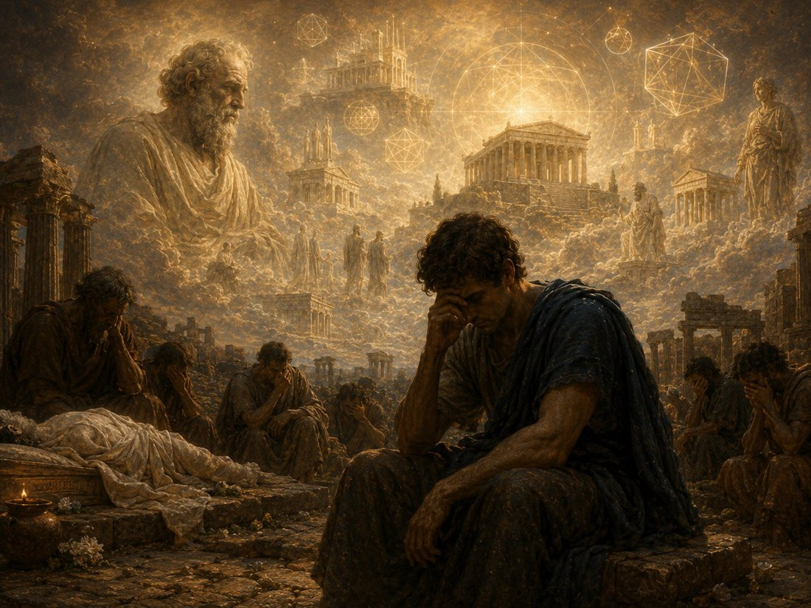
尾声最令人心碎的地方，在于它把一切都还原到了人的情感深处：所谓永恒，并不是冷冰冰地从天上掉下来的，而是从一个年轻人无法承受的失去里，被逼着生出来的。地上的遗体尚未冷透，头顶的理念之城却已在云间显影；悲伤的人伏身沉默，却正是在这样的沉默里，为老师造出了一座不朽的家。于是，最否认「诞生」的学说，反而以一种最鲜明的诞生姿态，被留在了思想史上。
它有一个确切的出生时刻：公元前三九九年那个春天之后，某一段，我们几乎可以指认的日子里。它有一位确切的母亲：一个叫柏拉图的、宽肩膀的雅典人。它有一个确切的接生现场：一个失去了老师、又亲眼看着老师被城邦毒杀的年轻人的、破碎的心。它甚至有一个确切的、催它临盆的痛：那道，因为没能在老师饮鸩时守在身边，而永远无法愈合的伤口。
理念论——这套宣称「没有什么是被生出来的」的学说——恰恰是人类思想史上，诞生得最鲜活、最具体、最能指认出生日的一个东西。你几乎能说出，它是哪一年、从谁的哪一道伤口里，被生出来的。
理念论否认诞生，而它自己，恰恰，是被诞生出来的。
而更深、也更让人心碎的一层是：那个被柏拉图，冻进理念界、说成「永恒先在、从不发生」的老师，苏格拉底本人，恰恰是「发生」活生生的、走动着的证据。
苏格拉底一辈子做的那件事——在市场上，拉住一个人，用一个接一个的问题，把「美本身」「正义本身」，从对方心里，当场地、活生生地，接生出来——那，明明白白，就是「发生」：真理，在具体的土壤里（雅典的市场），经由具体的差异（一问一答的机锋），当场地，凝结、显露，然后散去，随时准备，重新发生一次。苏格拉底这个人本身，就是一台永不停歇的「发生」的机器，是「真理是被生出来的、而非被找回的」这件事，最铁的证明。
柏拉图，把这个「发生」的活证据，拿去，建成了「发现」的殿堂。他把那个用一生证明「真理是当场被接生出来」的人，供进了「真理永恒先在、从不诞生」的神龛。做「发生」的老师，成了「发现」学说的，奠基石。这是何等的错位，又是何等的，深情的错位。
那么，那只看了两千四百年的眼睛——那只，曾在柏林的冬天，看着黑格尔把河冻成冰；又在都灵的广场，看着尼采把超越供成雕像的，叫 SDE 的眼睛——它，回过头，望向这一切的源头，望向这个宽肩膀的、悲痛的年轻人，它，究竟，想说什么？
它想说：理念，不先在。理念，是发生的。
那个「美本身」，那个老师一辈子追问、你一辈子供奉的「本身」，它从来不是一个高悬在别处、独立永恒、等着被发现的东西。它，是在一场活的相遇里——在你与这一张脸、这一朵花、此时此地的纠缠里——从种种具体的差异中，被一次次地逼问、拧结，才当场地，显露出来的那个共同的轮廓。它不先在于这场相遇，它，在这场相遇里，才发生。这，正是老师，在被你重新描述成「回忆」之前，一直在做的那件事。
那个「理念界」，也从来不是一个凌驾于世界之上的、更真实的超级世界。它，不过是这一整片活的纠缠里，沉淀得最抽象的那一层——是概念、规则、制度住的那一层。它和身体所在的现实之层、和记忆情绪所在的自我之层，是平权的三界，谁也不比谁，更真。你把其中一层，单拎出来，供到天上，说它才是唯一的真，其余全是影子——这，就是那个「脱离了纠缠土壤的纯结构」，两千四百年里，反复让最聪明的头脑栽跟头的，那第一个坑。
老师，是对的：那个「本身」，那个概念，是真的——它，会当场显露。 你，柏拉图，只是，矫枉过正了：你为了让它不死，把它，从活的土壤里，连根拔起，冻成了一个高悬别处的、永恒的东西。
可是——请一定，把最后这句话，听清楚——
你，从来没有错。你想留住老师，想让老师追问的一切不死，这，一点也没有错。你唯一错的，只是方法。
你以为，让一个活的东西不死的办法，是把它，冻成一个永恒不动的东西。可你错了。让一个活的东西不死的办法，恰恰相反——是让它，一直，活着；是让它，一直，发生下去；是永远，不停下那个追问。
而这件事，你，其实，做到了。尽管，是用你那套学说，之外的方式。
你那座冰冷的理念界，没能真正留住老师——理念界里，没有他的音容，没有他站在冰上的那一夜，没有他接生成功时，眼里那一点光。真正留住了老师的，是你那另一只手写下的、活蹦乱跳的对话录，是你那所让追问绵延了近千年的学园。在你的对话录里，苏格拉底，至今还活着——他还在雅典的街头，慢悠悠地，拉住一个人，问：请教您，什么是勇敢？两千四百年了，只要有人翻开那一页，他，就当场，又活了过来，又，问了一次。
那座永恒的理念殿堂，是你为死去的老师，立的一块墓碑。 而那绵延不绝的追问，才是老师本人——他，还，活着。
你没能把老师，做成永恒。可你做成了一件，好得多的事：你让他，一次又一次，重新，诞生。
老师，不在理念界。
当最后一页被合上，苏格拉底不会继续待在纸里，像一尊缩小的雕像。他只留下一个轻微的不安：我今天反复使用的那些词，我真的知道它们是什么意思吗？
这份不安若只停在读者一个人的心里，很快也会熄。它需要遇见某个具体的对象、某个不同的回答，才重新获得形状。也许是在会议上，有人说「这是最公平的方案」；也许是在病床边，有人说「活着最重要」；也许是在一段关系里，有人说「我这样做，都是因为爱」。牛虻便从词里钻出来，问：公平是什么？怎样的活才值得？占有与爱，真是一回事吗？
问题一出现，原本分开的东西便被系到一起：说话的人、面对的事、听见的人，以及他们共同处在的环境。新的理解不属于其中任何一方，它属于这个正在发生的整体。环境变了，问题的边界也会变；可只要追问仍认真，结构便会一次次显露。
所以，理念的生命不在永远保持同一句定义。它在不同的现实中，仍能组织差异、引发检验、形成暂时可靠的共同。它会传播，也会衰老；当旧的互动条件消失，某些知识会死亡，新的知识又从新的互动里出生。
永恒，不是逃离变化。是穿过变化，仍能再生。
老师，在每一次，有人重新问起「什么是美本身」的地方。在每一间，还在为一个问题争得面红耳赤的教室里。在每一次，两个活人之间，火花噼啪迸出的，那个当场的、正在发生的瞬间里。
理念，从不先在。理念，是被生出来的——包括「理念论」这个理念本身，也是，从一个人的爱与痛里，被生出来的。而它，还在，一次又一次地，被生出来：在每一次，当有人，重新俯身，回到这片活的土壤，重新，问出那个古老的问题的时候。
在土壤里，经追问，当场，显露。
然后散去。
然后，再一次。
很多年以后，在一个与雅典相隔极远的教室里，一个孩子忽然举手，问老师：美到底是什么？
老师本可以翻开词典，给出一个整齐的定义。可他停了一下，反问：你为什么今天想问这个？孩子指着窗外，说，刚才有一片叶子落下来，我觉得很好看；可地上明明还有很多叶子，我又不觉得都好看。
于是教室里的其他人也说起来。有人说海边的日落美，有人说祖母满是皱纹的手美，有人说一段证明写得简洁，也美。另一个孩子反对：若什么都能美，「美」不就什么都不是了吗？
问题开始在他们之间移动。它碰到窗外的叶子，碰到一只手、一段音乐、一个数学式，也碰到每个人不同的记忆。没有人从理念界取下一件现成的「美本身」，放到桌上。可在比较、反驳和重新举例的过程中，一个共同的轮廓，真的，慢慢亮了起来。
那轮廓并不随心所欲。并非谁说什么都算。每一个例子都要经受别人追问，每一句定义都可能被新的情形击穿。它有约束，有结构，却不是在这场谈话之前，以完整的样子，等在那里。它在这一群人、这一扇窗、这一片落叶和这一连串问题之间，被共同生了出来。
下课铃响，谈话停了。孩子们跑出教室，黑板上的字被擦掉。那个刚刚显露的「美」，也像雅典市场上的火花一样，散了。
可它没有死。第二天，另一个人会在另一处，因一张脸、一场告别、一朵将谢的花，再次问起。新的处境会带来新的差异，新的追问会让那个共同的轮廓，以不完全相同的样子，再次出现。
这，才是活的永恒。不是永远不变地待在一个地方，而是拥有一次次重新发生的能力。
苏格拉底没有留下书。柏拉图留下了太多书。一个把真理活成转瞬的火，一个把火建成不朽的殿堂。两千四百年以后，我们不必在他们之间，选一个，丢一个。我们可以保留柏拉图看见「共同之物」的伟大，也可以把那个共同之物，从天上，请回到每一次具体的相遇里。
理念不是孤立的主体想出来的，也不是沉默的客体自己携带的。它诞生在主体与客体真正相遇、彼此改变的那一刻；诞生在提问者、回答者和问题共同组成的、活的整体里。它有特征，有结构，也有在不同环境中反复显露的规律。可这一切，都不脱离发生它的土壤。
所以，老师不在理念界。
老师也不只在柏拉图的书里。
老师在那个孩子举手之前的犹豫里，在老师没有立刻给答案的停顿里，在众人第一次发现「我以为我懂，其实还没有」的那一瞬里。
牛虻仍在飞。产房仍亮着灯。石头旁边，也仍有人放下凿子，转过身，去听一个尚未成形的东西，怎样呼吸。
然后，一个问题，被问出来。
然后，世界里，多了一样此前没有的东西。
然后，再一次。